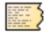
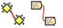

Juan Muñoz-Justicia es profesor titular del Departamento de Psicología Social de la Universidad Autónoma de Barcelona (España) - juan.munoz@uab.cat.
Miguel Sahagún-Padilla es profesor e investigador de tiempo completo del Departamento de Psicología de la Universidad Autónoma de Aguascalientes (México) - masahagun@correo.uaa.mx.
Licencia
1. Introducción
En este capítulo presentaremos, en primer lugar, una breve introducción al software para el análisis cualitativo de datos textuales (CAQDAS)para, a continuación, presentar algunas de las características principales de Atlas.ti.
1.1. CAQDAS
El título de este apartado se corresponde con el acrónimo de "Computer-Assisted/Aided Qualitative Data Analysis Software” (Lee & Fielding, 1991), es decir, Programas Informáticos de Ayuda al Análisis Cualitativo de Datos, conjunto de programas informáticos que surgen a mediados de los 80 y que van más allá de los recursos informáticos genéricos (procesadores de texto, bases de datos) que hasta la fecha utilizaban los analistas cualitativos (Weitzman & Miles, 1995). De entonces a la fecha, la utilización de herramientas informáticas por parte de las personas que se dedican a la investigación cualitativa ha experimentado un notable incremento, de la misma forma que sus características y funcionalidades han evolucionado considerablemente, haciendo que en nuestros días muchas personas podamos hacer nuestras las palabras de Anselm Strauss en el prefacio al manual de usuarios de ATLAS.ti de Thomar Muhr:
En mis días de estudiante de posgrado, no había grabadoras para hacer más fácil la vida del entrevistador; llegaron después de la IIGM, pasando primero por la etapa de las grandes grabadoras. Eran máquinas pesadas, que adelgazaron sólo gradualmente hasta los modelos ligeros actuales. Muchos años después, siguiendo nuestros sueños de ordenadores que hicieran más fácil nuestras vidas como investigadores cualitativos, se inventó el software para nosotros. (Strauss, 1997, p. 1)
Compartamos o no el entusiasmo de Anselm Strauss, lo que es innegable es que la imbricación entre informática y metodología ha transformado las prácticas de investigación, posibilitando o facilitando un sinfín de actividades y redefiniendo buena parte de las características del oficio.
Cuando hablamos de análisis cualitativo asistido por ordenador, hemos de pensar en el tema como en un aspecto más del proceso de desarrollo de un proyecto de investigación. Sin duda puede ser un aspecto muy importante, pero ni de lejos el único o el más relevante. Más aún, la especificidad de las herramientas utilizadas —lo que puede hacerse con ellas— dependerá en buena medida de las formas en las que se relacione con los demás aspectos del proyecto: el tipo de tareas que tienen que realizarse, los usuarios de las herramientas, los materiales o datos con los que se trabajará, los marcos desde lo que se orienta el proceso de investigación, las fases concretas del proceso en las que se utilizan tales o cuales programas y un largo etcétera.
En todo caso, lo importante es tener presente que antes de utilizar cualquier herramienta informática en el proceso de análisis, hay que definir qué es lo que queremos hacer y cómo hemos de hacerlo. Una vez que se tiene claro el trayecto de un proceso de análisis podemos pasar a considerar las opciones disponibles en cada situación. En otras palabras, primero está el diseño de la investigación y luego la elección del software.
1.1.1. Lo que hace el software
Una vez establecido el marco para abordar el tema que nos ocupa, es conveniente señalar qué es lo que caracteriza, aunque sea de forma general, al software para análisis cualitativo. Antes, realizaremos una caricaturización de las características generales del análisis cualitativo.
Para (Patton, 1990), la pretensión de la investigación cualitativa consiste en dar sentido a grandes volúmenes de datos en un proceso definido por la reducción de información, la identificación de pautas significativas y la construcción de un marco que permita comunicar lo que revelan los datos. Si bien es cierto que la investigación cualitativa en ciencias sociales se caracteriza por su diversidad y pluralidad de enfoques, métodos y técnicas (Silverman, 2005), es posible afirmar que las distintas aproximaciones comparten una orientación naturalista e interpretativa y que la mayoría de las modalidades de análisis que ofrecen se distinguen por estar teóricamente informadas (Íñiguez-Rueda, 1999).
Como mostramos de forma esquemática en la figura Proceso típico de análisis, una manera habitual y bastante difundida de entender las tareas básicas del análisis cualitativo consiste en trazar el recorrido hacia esa reducción y búsqueda del significado de los datos como un proceso recursivo desde los datos hacia la elaboración de modelos teóricos sustantivos.
El proceso recursivo atraviesa por la segmentación y codificación del conjunto de datos, el establecimiento de relaciones entre códigos, el desarrollo de anotaciones y una cuidadosa revisión del sistema empleado. Aunque sea discutible si esta concepción del proceso de análisis cualitativo es generalizable a la gran mayoría de orientaciones metodológicas, el diagrama ilustra las transformaciones y producciones específicas que operan sobre el material empírico durante un proceso de análisis. Tareas básicas como la organización y el almacenamiento de datos, la selección y etiquetaje de pasajes o secciones del material, la sistematización de los procedimientos de etiquetaje, la recuperación de las secciones etiquetadas y el desarrollo de anotaciones (memos) que den cuenta del proceso y sus resultados suelen estar presentes en la mayoría de los estudios de corte cualitativo.
Parafraseando a (Lewins & Silver, 2009), la investigación cualitativa se caracteriza entonces por la necesidad de interpretar datos a través de la identificación y, posiblemente, la codificación de temas, conceptos, procesos o contextos, con el propósito de construir teorías, de ampliarlas o de ponerlas a prueba. Desde un marco más o menos definido, el investigador se formula preguntas respecto al significado de su material empírico. En estas preguntas por el significado de los datos se define un contexto de interpretación que orienta al investigador en la definición de los aspectos operativos del análisis. Dicho de otro modo, en cada proyecto de investigación, la pregunta por el significado de lo que se analiza es la que permite dar sustancia y dirección a tareas tan genéricas como organizar, segmentar y codificar datos. Los aspectos operativos son cruciales porque dependiendo de la forma en la que se concreten pueden favorecer o dificultar una aproximación sistemática, rigurosa, minuciosa y creativa a los datos. Es aquí en donde el software para análisis cualitativo encuentra su razón de ser. No es que el software analice —por si alguien se había formado expectativas en este sentido— sino que ofrece apoyo en la parte operativa del análisis.
Cabe entonces preguntarse qué tipo de apoyo ofrece el software para análisis cualitativo. Simplificando, lo que ofrece es una alternativa a prácticas más "manuales" que pueden desbordar al investigador. Dentro de su gran diversidad, los paquetes CAQDAS nos permiten:
-
gestionar grandes volúmenes de datos;
-
almacenar de forma organizada la información elaborada durante el análisis,
-
segmentar, codificar y recuperar fragmentos significativos de nuestro material empírico y
-
elaborar anotaciones del proceso y los resultados del análisis.
Además, dependiendo del programa con el que se trabaje, podemos utilizar diversas funciones que nos ayudan a visualizar la información de formas que estimulan la creatividad del analista y a desarrollar modelos o teorías de los fenómenos estudiados mediante el establecimiento de relaciones entre categorías.
1.1.2. Algunas críticas
A pesar de que la utilización de CAQDAS es algo cada vez más frecuente, por lo menos en los ámbitos académicos, no son pocas las voces que alertan de posibles problemas ligados a su utilización. Se trata de voces que en sus versiones más extremas aconsejan desechar tales herramientas y continuar analizando "como toda la vida", mientras que en sus versiones más laxas, simplemente insisten en la necesidad de ser conscientes de dichos problemas.
A continuación expondremos algunas de las principales líneas de cuestionamiento y crítica.
Volumen de datos: Una de las ventajas de la utilización de CAQDAS tiene que ver con la posibilidad de gestionar un gran volumen de información de una forma más fácil que con los sistemas tradicionales de análisis. Es decir, podemos organizar y acceder más fácilmente a los documentos que constituyen nuestros datos, podremos crear y acceder más fácilmente a las citas –extractos significativos– en su contexto y a los códigos (Blismas & Dainty, 2003; Kelle & Laurie, 1995), podremos acceder más fácilmente a las notas de investigación, etcétera. No obstante, algunos autores alertan del riesgo de que esta posibilidad que nos ofrece la utilización de CAQDAS se convierta en un inconveniente, puesto que aunque la gestión sea más fácil, el aumento del tamaño de las muestras puede llevar a la necesidad de una mayor inversión de tiempo y aunque esto no tiene porqué ser necesariamente negativo, sí que puede repercutir en la realización de un análisis más superficial de los datos (Blismas & Dainty, 2003; St John & Johnson, 2000) con tal de no prolongar demasiado el periodo dedicado a esta tarea.
Cercanía a los datos: Otra de las líneas críticas a los CAQDAS tiene que ver con quienes manifiestan que la utilización de ordenadores puede llevar a un cierto "alejamiento" de los datos; es decir, que el trabajo con el ordenador puede llevarnos a centrarnos más en la mecánica del análisis, en la utilización de las herramientas que nos ofrece el programa y por lo tanto prestar menos atención a lo auténticamente relevante; es decir, a los datos. Aunque esta crítica, de nuevo, puede tener cierta base, parece llevar implícita la idea de que lo contrario, la no utilización de CAQDAS evita este problema, algo no del todo evidente (Fielding & Lee, 1998; Lee & Esterhuizen, 2000). También el análisis manual puede alejarnos de los datos, centrando nuestra atención en la "mecánica" del análisis (e.g., recortar segmentos de transcripción, usar post-it de colores para distinguir entre tipos de códigos, pegar los segmentos en tarjetas, ordenar las tarjetas…).
Reificación de la codificación: Dado el énfasis que el software (im)pone sobre la codificación y la facilidad con la que ésta puede realizarse, se puede correr el riesgo de que los analistas basen su análisis en una codificación no reflexiva. Semejante forma de proceder tendría consecuencias como:
-
la creación de un número excesivo de códigos (Blismas & Dainty, 2003);
-
la confusión entre codificación y análisis, identificando la primera con el último (Coffey, Holbrook, & Atkinson, 1996);
-
la reificación del código, con el consiguiente distanciamiento de los datos (Bong, 2002) y
-
el descuido del trabajo hermenéutico o interpretativo que implica la investigación cualitativa (Lonkila, 1995; Morison & Moir, 1998).
Forzar una metodología: en una línea similar, se afirma que la generalización de la utilización de CAQDAS está llevando al predominio de determinadas formas de análisis y orientaciones metodológicas (Blismas & Dainty, 2003; Carvajal, 2002; Coffey, Holbrook, & Atkinson, 1996; Lonkila, 1995; Mangabeira, Lee, & Fielding, 2004; St John & Johnson, 2000). Efectivamente, si analizamos las características de los programas más utilizados veremos que una parte importante de las funciones que incorporan recuerdan mucho a conceptos derivados de la Grounded Theory o Teoría Fundamentada (Lonkila, 1995).
Evidentemente, esto no significa que el único tipo de análisis que podemos realizar con el apoyo de programas para análisis cualitativo tenga que basarse en la Teoría Fundamentada. De hecho, los programas son lo suficientemente flexibles como para permitir trabajar desde enfoques diferentes y con diversas modalidades de análisis. Es el analista, con base en una cuidadosa reflexión, quien debe decidir el tipo de análisis pertinente. Pero efectivamente existe el riesgo de que por lo menos los investigadores noveles tiendan a equiparar investigación cualitativa con Teoría Fundamentada y a seguir de una forma no reflexiva las 'sugerencias' de análisis de los programas (Lonkila, 1995).
Después de todo, ¿a qué conclusión podemos llegar? Probablemente a ninguna extrema, ni a reificar el software ni a estigmatizarlo y quizás a tener en cuenta las palabras de Weitzman y Miles:
Como señala Pfaffenberger (1988), es igualmente ingenuo creer que un programa es (a) un instrumento técnico neutral o (b) un monstruo sobredeterminado. La cuestión es la comprensión de las propiedades y presupuestos de un programa, y cómo pueden apoyar o restringir su pensamiento para producir efectos no previstos. (Weitzman & Miles, 1995, p. 330)
Lo que es evidente es que la utilización de CAQDAS puede reportar ciertas ventajas, pero debemos tener siempre presente que el ordenador no puede, en ningún caso sustituir al analista. Por lo tanto, la garantía de un buen análisis no nos la dará la mayor o menor sofisticación de los programas, sino la calidad del analista, su conocimiento del oficio de la investigación cualitativa (Bringer, Johnston, & Brackenridge, 2006), el examen previo de los posibles métodos y metodologías apropiados y su aplicación razonada a su problema de investigación (Blismas & Dainty, 2003; Bong, 2002).
1.2. ¿Qué es ATLAS.ti?
El ATLAS.ti se originó en la Universidad Tecnológica de Berlín, en el marco del proyecto ATLAS, entre 1989 y 1992. El nombre es un acrónimo de Archiv für Technik, Lebenswelt und Alltagssprache, que en alemán quiere decir "Archivo para la Tecnología, el Mundo de la Vida y el Lenguaje Cotidiano". La extensión .ti significa interpretación de textos. Se pueden encontrar mayores detalles sobre el origen del programa en el interesante relato de Heiner Legewie (Legewie, 2014). En 1996 fue lanzada la primera versión comercial y en 2012 apareció la versión 7. El lanzamiento de la versión 8 fue anunciado para finales de 2015.
| Finalmente, la versión 8 apareció en diciembre de 2016. |
A continuación describiremos algunas de las características principales de ATLAS.ti. En primer lugar haremos un repaso de los componentes principales del programa. En segundo lugar, presentaremos algunas de las operaciones básicas relacionadas con la documentación, la segmentación y codificación y el establecimiento de relaciones entre elementos
1.3. Componentes
Unidad Hermenéutica: El trabajo de análisis con ATLAS.ti se organiza y almacena en un único archivo que se denomina Unidad Hermenéutica (UH a partir de ahora). La extensión de una unidad hermenéutica —lo que identifica al fichero en el ordenador— es .hpr7 (en la versión 7 del programa). Para que quede claro, una unidad hermenéutica es al ATLAS.ti, lo que un libro de cálculo es al Excel.
La UH contiene toda la información producida en el transcurso de nuestro análisis. La información se organiza en diferentes objetos. Los objetos básicos, los "componentes principales" del programa, son los Documentos Primarios (DPs a partir de ahora), las Citas, los Códigos y los Memos (anotaciones). Junto a ellos, otros objetos importantes de la UH son las Familias, los Vínculos (relaciones entre objetos) y las Vistas de red.

Los Documentos Primarios serán normalmente la base de nuestro análisis, puesto que se corresponderán con nuestros datos (entrevistas, observaciones, diarios de campo, documentos y registros de información de diversa índole). Una UH puede incluir un gran número de DPs, tantos como datos se incluyan en nuestro análisis. En cuanto al formato de los datos que podemos utilizar, tenemos un amplio abanico de posibilidades. En primer lugar —lo más habitual— podemos tener archivos de texto con las transcripciones de las entrevistas, observaciones o cualquier otro tipo de material textual. Podemos incluir archivos de texto "plano" o sin editar (*.txt), documentos de Microsoft Word (*.doc), documentos con formato de texto enriquecido (*.rtf) —la opción más recomendable— e incluso documentos adobe (*.pdf). Podemos incluir también archivos multimedia como imágenes o fotografías, archivos de audio y archivos de vídeo. Y, finalmente, otra de las posibilidades es incluir como DPs archivos de Google Earth.
Las Citas son fragmentos de los DPs que tienen algún significado, es decir, son segmentos significativos. Podemos entenderlos como una primera selección del material de base, una primera reducción de la información (Patton, 1990). Dependiendo de la naturaleza de los documentos primarios a segmentar, las citas pueden ser fragmentos de texto (palabras, frases, enunciados, párrafos), secciones rectangulares dentro de una imagen, lapsos en un archivo de audio o vídeo, o puntos en un mapa.
Los Códigos suelen ser (aunque no necesariamente) la unidad básica de análisis. Habitualmente el análisis se basará en ellos. Podemos entenderlos como conceptualizaciones, resúmenes o agrupaciones de las Citas, lo que implicaría un segundo nivel de reducción de datos. Aun así, debemos tener en cuenta que no necesariamente tienen que estar relacionados con las Citas, es decir, los Códigos pueden utilizarse también como “conceptos” útiles para el análisis que no necesariamente tienen una relación directa con selecciones de texto, imagen, sonido, etc.
Aunque cada uno de los componentes anteriores puede tener asociado un comentario, podemos entender los Memos como comentarios de un nivel cualitativamente superior, puesto que son todas aquellas anotaciones que realiza el analista durante el proceso de análisis. Podemos escribir memos analíticos en los que desarrollemos hipótesis sobre formas de codificación o relación entre códigos. Podemos elaborar memos procedimentales en los que describamos nuestro proceso de análisis de forma que podamos dar cuenta del mismo. Podemos incluso tener memos en los que se incluya todo aquel material que no forma parte de nuestros datos pero conviene tener fácilmente accesible (e.g. los objetivos de la investigación, el guión de una entrevista o la estrategia de muestreo). En los memos esperaríamos encontrar la redacción progresivamente refinada y organizada de los aspectos más significativos del proceso y los resultados del análisis.
Las Familias son grupos de objetos. En el caso de los documentos primarios, los códigos y las anotaciones, podemos realizar agrupaciones en unidades que el programa denomina familias y que incluirán aquellos elementos que para el analista presentan alguna característica común.[1] Estas agrupaciones pueden ser útiles como forma de organización y como forma rápida y fácil de seleccionar y filtrar los componentes que cumplan unas determinadas características. En el caso de los códigos, la creación de familias puede ser un paso hacia el establecimiento de relaciones, la creación de códigos más abstractos y la elaboración de bloques de modelos teóricos.
Podemos establecer Vínculos (relaciones) de diferentes tipos entre objetos como citas, códigos y memos: cita-código,[2] cita-memo, código-memo, cita-cita, código-código y memo-memo. En el caso de las relaciones cita-cita y código-código, vincular estos elementos significa crear una relación lógica entre ellos, relación que debe definir el analista y que podemos entender como una de los elementos importantes del análisis. Los elementos vinculados pueden representarse gráficamente y editarse en las vistas de red.
 Las Vistas de red son uno de los componentes más interesantes y característicos de ATLAS.ti, y uno de los elementos principales del trabajo conceptual. Permiten operar con información compleja de una forma intuitiva mediante representaciones gráficas de los diferentes componentes y de las relaciones que se hayan establecido entre ellos.
Las Vistas de red son uno de los componentes más interesantes y característicos de ATLAS.ti, y uno de los elementos principales del trabajo conceptual. Permiten operar con información compleja de una forma intuitiva mediante representaciones gráficas de los diferentes componentes y de las relaciones que se hayan establecido entre ellos.
La figura Componentes y relaciones ilustra los componentes principales del ATLAS.ti y las relaciones que pueden establecerse entre ellos. La presentación de los componentes y sus relaciones muestra la progresiva reducción de información, que es simultáneamente un proceso de interpretación y abstracción. El punto de partida son los documentos primarios, de los cuales se extraen citas que después se vinculan a códigos. Tanto las citas como los códigos pueden relacionarse entre ellos mismos. Además, es posible y frecuente incluir códigos que no están directamente asociados a citas, pero sí a otros códigos. Finalmente, podemos vincular memos con citas, códigos y otros memos.

2. Empezando a trabajar
Para comenzar a usar ATLAS.ti lo único que se necesita es tener una idea general de la interfaz del programa y de un par de sus operaciones básicas. Lo importante es ponerse manos a la obra. Este capítulo tiene como propósito facilitar ese proceso de asimilación inicial. Para ello, describiremos cómo se inicia el programa y cuáles son las características de la pantalla principal. Además, explicaremos de forma detallada los primeros pasos a seguir, a saber, la creación, guardado y apertura de una UH y la creación y visualización de memos y comentarios.
2.1. Iniciar el programa
Trabajando con una instalación estándar, podemos arrancar el programa desde el icono ATLAS.ti que se encuentra en el escritorio de Windows. Alternativamente, podemos iniciar el programa desde el botón Inicio de Windows, siguiendo la ruta: Inicio > Programas > Scientific Software > ATLAS.ti 7
También podemos iniciar el programa haciendo doble clic sobre una UH existente.
Al arrancar el programa por primera vez, ATLAS.ti cargará la UH Welcome (ver Unidad Hermenéutica de ejemplo). Por defecto, al abrir el programa se cargará la última UH con la que se trabajó. Esta opción puede ser desactivada y, de serlo, el programaría arrancaría con una UH nueva y vacía. También podemos iniciar el programa haciendo doble clic sobre el nombre de una UH existente (evidentemente, el programa iniciará abriendo simultáneamente la UH sobre la que se ha hecho clic).
La UH Welcome ilustra la forma de realizar las operaciones más básicas y muestra simultáneamente qué tipo de elementos se generan con ellas. Esta UH nos señala (1) el icono que permite añadir DPs, (2) el icono de codificación, y (3) el código seleccionado, tanto en el menú desplegable como en el margen derecho de la pantalla (junto a la cita con la que está relacionado).
Como vemos en la Ilustración, la interfaz del programa aparece, por defecto, en inglés. Si queremos cambiar de idioma podemos hacerlo con la opción Herramientas > Preferencias > Establecer idioma de interfaz de usuario. Las opciones que se nos ofrecen, además del inglés, son Español, Klingon [3] y Alemán. Una vez que hemos cambiado el idioma, para que los cambios tengan efecto tenemos que reiniciar el programa.
Modificando la configuración de algunas de las opciones de ATLAS.ti, es posible activar la búsqueda de actualizaciones automáticas al arrancar el programa. La ventana de actualizaciones detalla el proceso de acceso de nuestro ordenador al servidor de ATLAS.ti para buscar paquetes de actualización que podemos descargar e instalar.
2.2. La pantalla principal de ATLAS.ti
2.2.1. Espacio de trabajo
Antes de continuar, es necesario que comencemos a familiarizarnos con la pantalla principal de ATLAS.ti.
A continuación, ofrecemos una breve descripción de los elementos que la componen:
-
Título de la UH. Muestra el nombre de la UH activa. Se corresponde con el nombre con que se haya guardado el archivo (como podemos ver en la imagen Interfaz principal de Atlas.ti, si no tenemos ninguna UH activa, aparecerá como título “Nueva unidad hermenéutica”).
-
Barra de menús. Permite acceder a las diferentes acciones relacionadas con ficheros, documentos, citas, códigos, anotaciones, etc. A las opciones más comunes también podemos acceder a través de las barras de iconos (3 y 5 en la figura Interfaz principal de Atlas.ti) y, sobre todo, utilizando los menús contextuales, a los que se accede haciendo clic con el botón derecho del ratón sobre los diferentes elementos que aparecen en pantalla.
-
Barra de iconos horizontal. Los iconos de la barra horizontal sirven como "acceso directo" a algunas de las funciones más utilizadas en relación con la UH.
-
Botones de administradores y listas desplegables. Los botones permiten activar los administradores (ver Administradores y listas desplegables) de cada uno de los componentes principales de la UH, mientras que las listas desplegables permiten visualizar/seleccionar los diferentes elementos creados para cada uno de esos componentes principales). Tanto los botones de administradores como las listas desplegables hacen referencia, de izquierda a derecha, a DPs, Citas, Códigos y Memos.[4]
-
Barra de iconos vertical. Los iconos de la barra vertical realizan funciones relacionadas con los DPs. Aunque estos iconos siempre son visibles, sólo son operativos con un DP activado. En caso contrario, los iconos aparecen en gris claro.
Cuando se activa un DP de texto, queda conformada el área de trabajo básica. Los elementos que aparecen con el área de trabajo son:
-
Información del documento activo. Muestra el nombre del DP activo y, los iconos que aparecen a la derecha, permiten cerrar el documento y abrir (en el caso de que existan), los documentos relacionados con el DP activo (ver Sincronización audio-texto)
-
Ventana de Documentos Primarios. En ella podremos visualizar el DP activo para realizar el trabajo de segmentación y codificación o, en fases posteriores del análisis, para consultar o modificar las citas creadas o su vinculación a determinados códigos.
-
Margen derecho. Esta sección ofrece información sobre los elementos relacionados con el texto que se esté visualizando en ese momento. Las barras verticales señalan la ubicación de las Citas en el documento y los elementos con los que están relacionadas, sean Códigos, Hipervínculos (relaciones con otras citas) o Memos. La cantidad de elementos visibles en este espacio tiene una relación directamente proporcional con el trabajo interpretativo realizado sobre el DP en cuestión.
-
Numeración de los párrafos del documento. Esta forma de visualización es especialmente útil cuando queremos identificar la ubicación de una cita en el texto a partir de un listado de citas, pues como veremos más adelante (Visualización de citas), las etiquetas de las citas incluyen información sobre el número de párrafo de inicio y fin en el documento.
-
Navegadores de elementos. Podemos además activar/desactivar (haciendo clic en el icono con tres cabezas de flecha) la visualización de “navegadores” de elementos, pudiendo seleccionar si deseamos visualizar lista de documentos, códigos, citas, memos o vistas de red.
-
Haciendo clic en este icono, podemos visualizar simultáneamente más de un DP en la pantalla principal.
-
Barra de estado. Presenta información sobre el DP activo, incluyendo el nombre completo del archivo, su ubicación y forma de asignación a la UH y el tamaño con el que se visualiza. Permite hacer algunas operaciones como cambiar el porcentaje de visualización (aumentar o reducir la apariencia del DP). Ofrece además un pequeño texto de ayuda relacionado con la opción de menú sobre el que se sitúe el cursor para recordarnos las acciones que realizan los diferentes menús.
Hasta ahora, hemos presentado la pantalla principal de ATLAS.ti 7 con DPs activos de tipo textual. En el caso de documentos de imagen, audio, vídeo o geo-referencias hay algunas particularidades de presentación que señalaremos más adelante, al desarrollar la forma en la que se opera en ATLAS.ti con estos tipos de datos. Por otra parte, es conveniente recordar que, si bien existe la posibilidad de reubicar, añadir o quitar elementos a la pantalla principal de ATLAS.ti, recomendamos al usuario novel trabajar con la configuración por defecto y postergar cualquier cambio a nivel de interfaz hasta que se adquiera cierta soltura y familiaridad en el uso del programa.
2.2.2. Menús
Los menús de la pantalla principal del ATLAS.ti incluyen prácticamente todas las operaciones y opciones de visualización y configuración a las que puede recurrir el usuario o permiten acceder a ellas (Barra de menús). Los menús pueden agruparse en tres categorías: generales, por objeto y extras. Los menús por objeto hacen referencia a opciones y operaciones asociadas a cada uno de los bloques que se van construyendo dentro de su UH conforme avanza en el proceso de análisis.

La descripción pormenorizada de estas operaciones y opciones la iremos realizando a lo largo de los próximos capítulos. Por ahora, haremos una sencilla descripción de lo que contiene cada uno de los 12 menús de tal forma que el usuario cuente con una base para comenzar a utilizar el programa. Es conveniente señalar que algunas de las opciones más utilizadas también pueden ejecutarse con las combinaciones de teclas que aparecen a la derecha del comando.
Siguiendo el orden en el que aparecen de izquierda a derecha, los primeros dos menús son:
Proyecto. Este menú es el menú general de la UH y, por tanto, el primero con el que tenemos que familiarizarnos. Contiene comandos que permiten crear, abrir o cerrar UHs, así como editar información general sobre las mismas o generar informes con todos los objetos desarrollados en el proceso de análisis. También hay comandos que permiten fusionar dos UHs —funcionalidad crucial cuando el análisis lo realizan dos o más personas— o analizar y eliminar redundancias y solapamientos en la codificación. Este menú es el menú general de la UH y, por tanto, el primero con el que tenemos que familiarizarnos.
Edición. Este menú sólo despliega sus opciones cuando un DP de tipo textual ha sido activado. Dependiendo del formato específico del documento de texto, aparecerán más o menos opciones. En el caso de DPs con formato .rtf (Rich Text Format) y .txt (Text File), las opciones del menú son más numerosas, incluyendo la posibilidad de editar. En otros formatos como .doc (Microsoft Word) o .pdf (Portable Document Format), las opciones del menú son reducidas, pero siguen siendo interesantes, ya que permiten hacer búsquedas o copiar segmentos de texto.
El siguiente grupo de menús ofrecen opciones en cuanto a la creación, edición y visualización de los elementos fundamentales de la UH: documentos primarios, citas, códigos, memos y vistas de red. Muchas de las opciones de este grupo de menús son comunes: crear el elemento, agrupar en familias, generar informes, abrir administradores, etc. Este grupo de menús es quizá el que más se utilizará en el trabajo analítico propiamente dicho y muchas de estas opciones son accesibles también a través de los administradores o desde los menús contextuales. Las opciones serán descritas en detalle en los siguientes capítulos del manual. A continuación, ofrecemos una breve descripción que sirva como punto de partida:
Documentos. El menú Documentos despliega opciones que nos permiten hacer operaciones relativas a los DPs vinculados a nuestra UH: vincular o desvincular DPs, desactivarlos, reordenarlos o filtrarlos de acuerdo con diferentes criterios, editar comentarios sobre ellos, agruparlos en familias y generar informes. Algunas opciones, como la que nos permite abrir una vista de red, sólo están operativas con un DP activado. El menú incluye el apartado A-Docs. Sus opciones nos permiten establecer, modificar y utilizar sincronizaciones entre, por ejemplo, la grabación en audio de una entrevista y su correspondiente transcripción. También existe la posibilidad de importar este tipo de sincronización (ver Sincronización con F4).
Citas. De forma análoga al menú anterior, éste nos ofrece opciones para el trabajo con citas: crearlas, transformarlas, eliminarlas, etc. También nos permite abrir vistas de red focalizada en una cita, establecer relaciones entre citas —los hipervínculos— y asignar códigos a citas.
Códigos. Junto con el menú anterior, éste es uno de los más relevantes en cuanto a labor analítica se refiere. El menú nos permite operar con códigos, desde su creación y asignación a citas hasta la generación de diversos tipos de informes. Este menú también nos permite establecer relaciones entre códigos y entre códigos y anotaciones.
Memos. El menú de Memos también comparte muchas de las opciones de los tres menús anteriores. Nos permite crear, editar y vincular anotaciones (entre sí o con códigos o citas), agruparlas en familias, generar informes e incluso utilizar alguna anotación como DP.
Redes. Este menú nos permite generar y editar vistas de red, un recurso vital para operar sobre las relaciones entre los elementos que vamos desarrollando en un proceso de análisis —especialmente los códigos. Otras opciones incluyen la posibilidad de exportar e importar redes de códigos y la edición de los tipos de relaciones que se pueden establecer entre citas (tipos de hipervínculos) y los tipos de relaciones entre códigos.
El último grupo de menús ofrece diversas opciones en cuanto a la configuración de ATLAS.ti así como una serie de complementos que pueden ser más o menos útiles dependiendo del tipo de análisis que se esté realizando y de si se trabaja en grupo o individualmente, entre otras cosas:
Análisis. En este menú encontraremos algunas herramientas útiles para el análisis, entre las que cabe destacar el sofisticado sistema de consultas y la herramienta de exploración de co-ocurrencias de códigos.
Herramientas. Se trata de un menú con diversas herramientas complementarias que pueden ser muy interesantes, sobre todo en fases avanzadas del análisis. Además del editor de texto propio del ATLAS.ti, el menú incluye un conjunto de opciones para navegar por la UH y sus elementos (explorador de objetos, examinador de objetos, analizador de codificaciones, etc.). El menú permite trabajar con el lenguaje XML, crear archivos que "empaquetan" la UH y los DPs asociados y gestionar las actualizaciones. Habría que destacar la creación y gestión de usuarios, imprescindibles cuando el análisis es realizado por más de una persona. También hay opciones para la exportación de la UH a otros formatos (a SPSS, por ejemplo).
Visualizaciones. El menú de visualizaciones nos permite definir la apariencia y las opciones visibles por defecto (barra de herramientas, números de línea, margen derecho, barra de estado, etc.), así como minimizar, maximizar o cerrar con sólo un clic todas las ventanas que tengamos abiertas (salvo la pantalla principal, como es de suponerse).
Ventanas. Este menú es útil cuando utilizamos varias UHs de forma simultánea, ya que nos permite navegar entre ellas o dejar alguna siempre por encima de las otras.
Ayuda. Además del acceso al sistema de ayuda en línea de ATLAS.ti, este menú ofrece opciones relativas a las ventanas que aparecen al iniciar el programa e incluye opciones sobre el sistema de actualizaciones que ya están en algunos de los menús anteriores, así como la introducción de la licencia del programa.
2.2.3. Administradores y listas desplegables
Ya hemos hecho referencia a los administradores y listas desplegables en la descripción de las secciones que componen la pantalla principal del ATLAS.ti. Ambos, especialmente los administradores, son sin duda las opciones más empleadas en el transcurso de un proceso de análisis. Las listas desplegables permiten seleccionar los diferentes elementos creados en la UH: DPs, citas, códigos y memos. La selección de los elementos se realiza haciendo clic en la flecha situada a la derecha del recuadro de lista para "desplegarla" y a continuación sobre el elemento deseado (1 en Administrador de códigos y lista desplegable de códigos).
Los iconos que aparecen a la izquierda de cada una de las listas desplegables (2 en la figura anterior) abren los administradores de cada objeto. Los administradores permiten visualizar sus correspondientes objetos (DPs, citas, códigos o memos) en ventanas independientes. Además de permitirnos seleccionar y visualizar algún elemento, como en el caso de las listas desplegables, los administradores posibilitan una visualización de conjunto mucho más detallada, con listados de objetos que incluyen sus características más importantes y que pueden reordenarse en función de tales características. Aunque presentan algunas diferencias en cuanto a las funciones que permiten realizar, los cuatro administradores tienen una estructura similar y en buena medida nos ofrecen otra vía para acceder a las opciones que ya aparecen en los menús de cada objeto.
La siguiente figura nos muestra las secciones que componen el administrador de DPs y que son, en general, comunes al resto de administradores:
-
En la parte superior del marco de la ventana, está la barra de título, que nos informa del tipo de componente que se está mostrando (en este caso, el administrador de DPs) y la UH a la que pertenece.
-
Precediendo al título, aparece un icono que variará dependiendo del administrador que estemos utilizando. Al hacer clic sobre el icono se despliega un menú que, entre otras funciones relacionadas con la forma de visualizar la ventana, permite activar el Modo enrollar, que colapsa el administrador manteniendo su posición y dejando visible sólo la barra de título cuando hacemos clic sobre cualquier otro elemento de ATLAS.ti (otro administrador, por ejemplo). El administrador volverá a su disposición inicial cuando situamos el cursor encima de la barra colapsada. Otra opción que podemos desactivar (ya que está activada por defecto) es la de Siempre arriba, que mantiene al administrador, colapsado o no, siempre visible por encima de la pantalla principal del ATLAS.ti. Cuando esta opción está desactivada y hacemos clic en otro elemento de ATLAS.ti, el administrador se minimiza de forma tradicional, apareciendo en la barra inferior de Windows.
-
Justo por debajo del marco superior, aparece la barra de menús del administrador. Aunque los menús disponibles tienen algunas variaciones dependiendo del tipo de objeto al que se dedica cada uno, la estructura es similar en términos generales. El primer menú contiene opciones relativas al objeto en cuestión (Códigos en el administrador de códigos, Memos en el administrador de memos, etc. ) como crear uno nuevo, aplicar un filtro o agrupar por familias. A continuación aparece un conjunto de menús con opciones de edición, misceláneas, imprimir y visualizar.
-
Iconos con funciones específicas dependiendo del tipo de objeto al que se dedica el administrador.
-
Elementos según el tipo de administrador e información adicional para cada uno de ellos. En este caso, encontramos una primera columna con el conjunto de códigos definidos en la UH. La segunda columna, Fundamentado, nos indica el número de citas con las que está relacionado el código seleccionado, mientras que la columna Densidad hace referencia al número de relaciones que ese código tiene con otros códigos. La columna Autor nos indica, evidentemente, el usuario que ha creado el elemento (ver Administración de usuarios). A continuación nos encontramos con dos columnas que nos informan de la fecha de creación y de modificación del elemento. Por último, la columna Familias nos indica a qué familias pertenece el elemento en cuestión. Podemos ordenar la visualización con un clic en la etiqueta de la columna que deseemos.
-
En todos los administradores encontraremos también una zona en la que podemos/debemos escribir un comentario sobre el elemento seleccionado. (ver Comentarios de códigos).
-
Barra de estado con información adicional sobre el objeto que se tiene seleccionado.
2.3. Nuestra primera Unidad Hermenéutica
Ahora que ya estamos familiarizados con la interfaz de ATLAS.ti, y si todavía no lo habíamos hecho, podemos crear nuestra primera UH.
Para ello, simplemente tenemos que hacer clic sobre el menú Proyecto y seleccionar la opción Nueva unidad hermenéutica (1 en Menú Proyecto). Se abrirá entonces una nueva ventana, como la que hemos visto en la figura Interfaz principal) en la que ya podemos empezar a trabajar.
Durante este manual insistiremos de forma reiterada en la necesidad de documentar nuestro trabajo, algo que podemos hacer de formas diferentes y en momentos diferentes. Para ir acostumbrándonos a hacerlo, el siguiente paso que sugerimos, es precisamente documentar nuestro archivo de UH. Para ello, en el mismo menú Proyecto haremos clic en la opción Editar comentario (2 en la figura). Como vemos (Comentario de Unidad Hermenéutica), se nos abrirá una nueva ventana con un editor de texto en el que escribiremos un comentario. No consideramos que sea necesario introducir una amplísima descripción, pues esto lo podemos hacer con otras herramientas, pero como mínimo deberíamos describir y/o identificar las características principales de la UH.
Una vez que hemos escrito el comentario de UH, y aunque podríamos seguir trabajando (seguro que estamos ansiosos por comenzar…), procederemos a guardar el trabajo realizado hasta el momento (sólo el comentario, pero algo es…). Para ello, utilizaremos la opción Guardar como… (3 en Menú Proyecto). Al hacer clic sobre la opción aparecerá una ventana de navegación para que seleccionemos el nombre que daremos a nuestro archivo de UH (que se guardará con la extensión .hpr7), y la ubicación de nuestro ordenador donde queremos guardarla. Como vemos en la figura Ruta de Textbank, el programa sugiere, por defecto, que guardemos el archivo en una carpeta denominada Textbank, aunque evidentemente podemos elegir cualquier otra ubicación. Por ejemplo podríamos crear una nueva carpeta, dentro de Textbank, a la que podríamos etiquetar con un nombre alusivo a nuestra investigación, por ejemplo Control Parlamentario, y guardar en la misma todos los documentos relativos a dicha investigación. El único requisito que consideramos imprescindible, aunque parezca algo excesivamente de sentido común como para explicitarlo, es que guardemos nuestro archivo en una ubicación que nos sea fácil de recordar, de forma que posteriormente no tengamos problemas para recuperarlo (algo que hemos visto en demasiadas ocasiones).
Podemos ahora cerrar el programa para practicar otras opciones del menú Proyectos.
Por el momento, simplemente volveremos a abrir ATLAS.ti para comprobar que la configuración por defecto del programa hará que nos aparezca directamente la última UH con la que se ha trabajado en ese ordenador. En el caso de que esa UH no sea aquella con la que queremos trabajar, podemos utilizar la opción Abrir (4 en la figura Menú Proyecto) para “navegar” de la forma habitual para localizar nuestro archivo, o bien la opción Explorar (5 en la figura Menú Proyecto) que nos abrirá una ventana con una lista de UHs abiertas recientemente en el ordenador.
En esa ventana (Explorar proyectos) podemos ver (1), como decíamos, la lista de las últimas UHs con las que se ha trabajado en ese ordenador, junto a (2) una descripción de la UH seleccionada que incluye el comentario de UH que hemos creado previamente. Haciendo clic en (3) abriremos la UH seleccionada. El resto de opciones de esta ventana son bastante intuitivas, por lo que en vez de explicitarlas lo dejamos para que el lector explore.
3. Documentar nuestro trabajo: Memos
Ya hemos comentado previamente que una de las características de ATLAS.ti es que ofrece muchas posibilidades para documentar nuestro trabajo. En el capítulo anterior hemos visto, por ejemplo, la posibilidad de escribir un comentario genérico de la UH. Muchos otros componentes, como documentos, citas o códigos, permiten que también se les asocie un comentario descriptivo, pero disponemos, además, de la posibilidad de la escritura de Memos, es decir, memorandos, comentarios o anotaciones genéricos, no necesariamente asociados —aunque puedan asociarse— a ningún componente concreto.
Los Memos, constituyen, además un elemento fundamental del análisis, aunque muy a menudo, uno de los elementos más subutilizados. Es por eso, por su “olvido”, por su habitual relegación a un plano accesorio, por lo que apelaremos a otras voces para convencer de su importancia.
Por ejemplo, Komalsingh Rambaree, ilustra la funcionalidad de las memos concretamente al utilizar ATLAS.ti:
Cuando los investigadores empiezan a pensar en un proyecto, pueden empezar, desde el principio del proceso de investigación, a utilizar ATLAS.ti para hacer reflexiones preliminares sobre las ideas y la construcción del conocimiento. Por ejemplo, se pueden crear memos libres, que se centran en la reflexividad sobre la puesta en marcha del proceso de investigación. La reflexividad básicamente significa hacer reflexiones sobre y dar cuenta de cómo se han tomado las decisiones y cómo han influido en el proceso de investigación. (Rambaree, 2014, p. 1)
Como vemos, Rambaree apuesta por la utilización de Memos desde un primer momento de la investigación, propuesta a la que nos sumamos, y que nos ha llevado a presentarlos prácticamente como primera actividad a realizar en un análisis.
Pero queremos insistir además en que su función va mucho más allá de la utilización de ATLAS.ti o de cualquier otra herramienta de análisis. Es decir, tienen que ver con el análisis, no con la herramienta, puesto que:
Mediante el uso de memorandos, el investigador es capaz de sumergirse en los datos, explorar los significados que estos datos tienen, mantener la continuidad y mantener el impulso en la realización de la investigación. Como crónica de un viaje de investigación, los memorandos permanecen como un registro, indeleble pero flexible, para retención personal o para difundir a otros. (Birks, Chapman, & Francis, 2008, p. 69)
Y para finalizar,
Vemos la toma de notas como crucial para todos los tipos y enfoques de análisis. Otras funciones, como la codificación, la búsqueda de texto, la codificación automática y la modelización pueden ser utilizadas por enfoques concretos, pero la anotación de los datos, documentos y material de apoyo es indivisible del análisis general. (Lewins & Silver, 2007, p. 59)
Y por si queda alguna duda de su relevancia, sugerimos que se haga una rápida búsqueda utilizando la palabra clave “memoing” junto a “qualitative research”. La cantidad no necesariamente implica calidad, pero puede darnos una pista sobre la relevancia de la temática y las reflexiones y discusiones que ha suscitado.
3.1. Crear Memos
Para la creación de Memos, podemos seleccionar la opción Crear memo libre desde el menú Memos o, desde ese mismo menú, abrir el Administrador de memos y hacer clic en el icono de creación.
 Siempre que veamos este icono, podremos crear un nuevo elemento. Es decir, crearemos un Memo si lo visualizamos en el Administrador de Memos, crearemos un código en el Administrador de códigos y así en cada caso. Siempre que veamos este icono, podremos crear un nuevo elemento. Es decir, crearemos un Memo si lo visualizamos en el Administrador de Memos, crearemos un código en el Administrador de códigos y así en cada caso.
|
Lo primero que tendremos que hacer, será dar un nombre a nuestro Memo, y a continuación (y aquí viene lo más complicado) escribirlo en el editor que nos aparecerá a continuación. En la figura Editor de memos podemos apreciar que ese editor se diferencia del que habíamos visto al crear el comentario de UH. En este caso tenemos (1) una zona en la que aparece la etiqueta con la que hemos nombrado el Memo, y (2) una lista desplegable para seleccionar el tipo de Memo. Esta lista nos ofrece tres posibilidades, Commentary, Method y Theory. Es decir, podemos clasificar nuestros Memos en tres categorías diferentes.[5] En este caso, a pesar de nuestra insistencia en la documentación y sistematización, nos sumamos a Saldaña (2009, p. 33) quien prefiere hablar únicamente de memos analíticos.

En la figura anterior vemos un posible ejemplo de Memo. En este caso, hemos creado un Memo “Datos” en el que describiremos de una forma genérica los datos que incluiremos en nuestro análisis. Parece evidente también que, dado que cualquier análisis no tiene sentido sin unos objetivos, podemos tener un Memo con la descripción de nuestros objetivos, de forma que los tengamos siempre “a mano” (sobre todo si el análisis lo realiza un equipo de analistas). En la figura siguiente podemos ver el administrador de Memos, en el que apreciamos una parte superior con la lista de Memos y una parte inferior con el texto del Memo seleccionado.

Dos de esos memos tienen una característica particular, puesto que son en realidad archivos PDF que se están utilizando como Memos. Por ejemplo, el Memo “Reglamento” es un PDF con el reglamento del Congreso. No se trata de un documento que deseemos analizar, pero sí de un documento que es necesario conocer para poder entender mejor cómo transcurren las sesiones de control. Tenerlo como Memo nos permite tener un acceso fácil al mismo, sin necesidad de tener que “buscarlo” cada vez que tengamos necesidad de consultarlo.
Un caso similar es el del Memo “Participantes”, un PDF en el que hemos recogido todos los datos posibles sobre cada uno de los participantes en las sesiones de control. En la figura Memo con archivo PDF podemos ver cómo lo que se visualiza en la parte inferior del administrador es parte del archivo PDF.

En síntesis, los memos, progresivamente elaborados, desarrollados, revisados y organizados en el curso del análisis contienen —o al menos deberían contener— los aspectos más significativos del análisis, tanto en términos de resultados como de proceso. Más adelante (Inserción de objetos/ficheros) explicamos con más detalle cómo utilizar esta funcionalidad.
4. Los documentos primarios
Dado que un elemento fundamental de cualquier análisis son los datos, en este capítulo trataremos aspectos relacionados con los mismos. En primer lugar, expondremos los diferentes formatos de datos con los que puede trabajar el programa. A continuación, describiremos la forma en que realizaremos la asignación de los datos para que puedan ser analizados. También hablaremos sobre las posibilidades de modificación de los datos una vez que estos han sido asignados. Finalmente describiremos cómo podemos aprovechar las características multimedia de este software para vincular entre sí datos textuales con datos de tipo audio y/o vídeo.
4.1. Tipos de documentos primarios
Como hemos comentado en el capítulo Introducción, Documentos Primarios es el término que utiliza ATLAS.ti para hacer referencia a nuestras fuentes de datos, las cuales pueden ser de muy diferente tipo, pues podemos trabajar con una gran variedad de formatos: texto, imagen, audio, vídeo e incluso geo-referencias (Google Earth).
4.1.1. Texto
Probablemente los documentos de texto serán los que utilizaremos más habitualmente, ya se trate de transcripciones de entrevistas, observaciones, diarios de campo, documentos institucionales, etc. El programa permite la utilización de una gran diversidad de formatos de archivo, aunque nosotros nos ocuparemos únicamente de los más habituales.
Texto plano
El formato más básico de texto que podemos utilizar es el texto plano, es decir, archivos con extensión “.txt” que presentan la ventaja de ser el formato más estándar y compatible entre procesadores de texto pero que al mismo tiempo tiene el inconveniente de que no permite ningún tipo de edición de estilo como negritas, cursivas, etc.
Texto enriquecido
Se trata en este caso de archivos que permiten, al contrario de los anteriores, formatear el texto de forma que incluya desde negritas y cursivas hasta colores o imágenes. Aunque como decíamos, los tipos de formatos de archivo (o procesadores de texto) que podemos utilizar son numerosos, tenemos en esta ocasión tres categorías básicas.
En primer lugar, podemos utilizar archivos creados con diferentes procesadores de texto (Microsoft Word o Libre Office p.ej.). En este caso los formatos de archivo recomendados son los “.doc” y “.rtf”, aunque recomendamos la utilización de este último puesto que este tipo de documentos (y también los .txt) permiten que realicemos cambios sobre los mismos desde el interior del programa (ver Edición de documentos).
También podemos utilizar archivos en Portable Document Format (“.pdf”), que aunque estrictamente no se trate de archivos de texto enriquecido, en la práctica tienen las mismas características, puesto que pueden incluir cualquiera de las características editables permitidas por un procesador de textos. Por supuesto se trata de un formato que no será editable desde ATLAS.ti, pero que tiene la gran ventaja de que la visualización del documento será siempre la misma (algo que puede no ocurrir con otros formatos), lo que resulta fundamental en determinados tipos de análisis.
Por último, dentro de esta categoría de formatos enriquecidos encontramos los archivos “.htm”, es decir, documentos que hemos podido obtener directamente desde páginas web. La ventaja evidente de este tipo de archivos es que nos permite trabajar de una forma fácil con datos extraídos directamente desde la web, sin necesidad de que tengamos que realizar sobre los mismos ningún proceso de transformación o edición. Sin embargo, hay que tener en cuenta que no siempre obtendremos unos resultados idénticos a lo que podamos ver en las páginas originales, puesto que no se conservarán ni imágenes ni enlaces ni estilos. Por lo tanto, aunque se trata de una opción interesante consideramos que sólo es práctica para páginas web con formatos simples.
| Una alternativa a trabajar con el archivo html es guardar la página web con formato pdf. |
4.1.2. Multimedia
Además de documentos textuales, podemos incluir como fuentes prácticamente cualquier otro tipo de datos, como imágenes fijas [6], audio e incluso vídeo. Esta variedad de fuentes de datos nos permitirá probablemente una mayor flexibilidad y riqueza en nuestro análisis. Una posibilidad que se nos abre con esta diversidad de formatos es la de utilizar la transcripción de una entrevista junto a su registro sonoro o audiovisual, de forma que, en caso de requerirlo, dispondremos de una información mucho más rica y precisa a la hora de realizar el análisis que si sólo disponemos de la transcripción.
| Una de las funcionalidades más interesantes del programa es la sincronización entre documentos primarios textuales y audiovisuales. ATLAS.ti nos permite, por ejemplo, sincronizar una transcripción con su correspondiente archivo sonoro de forma que desde un punto concreto de la transcripción, podríamos acceder inmediatamente al mismo punto o momento en el documento de audio o vídeo (ver Sincronización audio-texto). |
4.1.3. Geo-referencias
Desde la versión 6 del programa, ATLAS.ti permite, literalmente, incluir "el mundo" como documento de datos. Aunque esta afirmación puede parecer exagerada, en la práctica es factible, puesto que podemos incorporar como documentos primarios mapas de Google Earth, en los que podemos, de la misma forma que hacemos con una imagen, seleccionar "ubicaciones significativas" para convertirlas en citas.
4.2. Asignar Documentos Primarios
Para poder empezar a trabajar, es necesario relacionar nuestros datos (textos, imágenes, sonido…) con la UH.
La asignación de documentos es probablemente uno de los cambios más importantes que ha experimentado ATLAS.ti en su versión 7, puesto que con esta nueva versión ha aparecido el concepto de Biblioteca o “repositorio” de documentos que amplia de una forma sustancial la forma de gestión de los mismos por parte del software y supone cambios importantes en las opciones por defecto.

4.2.1. Agregar documentos a/desde las bibliotecas
Mientras que en las versiones anteriores la opción por defecto de asignación de documentos implicaba únicamente “informar” a ATLAS.ti de la ubicación de los archivos en nuestro ordenador, actualmente el usuario tiene como primera opción ubicar los archivos en Bibliotecas de usuario o de equipo, en las que se realiza una “copia” del archivo [7]. Esa copia pasará a ser el archivo sobre el que se realizará el análisis, es decir, nuestro Documento Primario. Esto implica que si eliminamos o modificamos el archivo original (pero no el archivo de la biblioteca), seguiremos teniendo disponible el Documento Primario.
Otra característica de los archivos que ubicamos en las bibliotecas, es que sufren algunas modificaciones pues, por ejemplo, son renombrados, de forma que un archivo cuyo nombre original es “Control-Congreso-2011-01-26-00.rtf" puede pasar a llamarse “17190EA4-67B9-4382-A882-298B7C229C14.atldoc” en la versión guardada en la carpeta de la biblioteca. Por último, otra característica fundamental de esos archivos es que no podemos editarlos utilizando nuestro procesador de textos habitual (es decir, no podemos hacer cambios “desde fuera” de ATLAS.ti), lo que evita que podamos realizar cambios accidentales que convertirían el documento en inutilizable por ATLAS.ti. Esto no significa que no podamos realizar modificaciones en los documentos, pero estas tiene que realizarse utilizando las herramientas de edición de documentos propias de ATLAS.ti.
Si optamos por utilizar las bibliotecas, la asignación de archivos a la UH se realizará utilizando la opción Documentos > Nuevo > Agregar documentos (si el documento no ha sido añadido previamente a la
biblioteca, es decir, que no lo hemos añadido previamente para utilizar en esta o en otra UH) o bien Documentos > Nuevo > Agregar desde biblioteca (cuando el documento ha sido asignado previamente a alguna de las bibliotecas).
Al utilizar la opción Agregar documentos, nos aparecerá una ventana de navegación (Agregar documentos a la biblioteca) en la que tenemos que seleccionar el/los archivos que queremos convertir en DPs. Por defecto, el programa
seleccionará como ubicación de origen la carpeta Textbank, pero evidentemente podemos tener ubicados nuestros archivos en cualquier otra parte de nuestro ordenador.

Por su parte, la opción Agregar desde biblioteca abrirá una ventana con la biblioteca de documentos (Agregar documentos desde biblioteca), en la que aparecerán todos los documentos que previamente hayan sido asignados a la biblioteca, independientemente de la UH a la que estén asignados. Para la asignación de cualquiera de esos documentos a la UH activa, sólo tenemos que seleccionarlos y hacer clic en `Agregar selección`_

También podemos añadir documentos (a las bibliotecas) arrastrando los archivos desde la carpeta en la que se encuentren (en este caso sin utilizar la opción Documentos > Nuevo, sino desde una ventana de
exploración de archivos de Windows) hasta a) la lista desplegable de documentos primarios, b) el administrador de documentos, o c) la ventana principal. Podemos arrastrar, uno o varios documentos e incluso una carpeta entera. En ese último caso se asignarán a la UH todos los documentos contenidos en la carpeta.[8]
Para ver los documentos incluidos en nuestras bibliotecas, tenemos que hacer clic en Documentos > Administrador de fuentes de datos > Abrir administrador de biblioteca. En la siguiente figura podemos ver cómo se nos muestran los documentos existentes en la biblioteca seleccionada (Mi biblioteca o Biblioteca de equipo) y cómo al seleccionar un documento podemos ver, en la parte inferior izquierda de la ventana la historia de cambios realizados sobre el documento y, en la parte inferior derecha las UH a las que está asignado.

|
Si utilizamos esta forma de asignación de documentos, es muy recomendable leer el apartado Copiar/Restarurar la Unidad Hermenéutica. |
4.2.2. Asignar archivos externos
También podemos asignar documentos sin que estos pasen a formar parte de la biblioteca —la forma de asignación normal en versiones anteriores del programa. Este tipo de asignación la podemos hacer de dos formas. La primera consiste en utilizar la opción Documentos > Nuevo > Asignar documentos externos (ver Añadir Documentos Primarios), que abrirá una ventana (Asignar documentos externos)[9], en la que aparecen los ficheros con las extensiones reconocidas por ATLAS.ti como posibles DPs. Para realizar la asignación, únicamente tenemos que seleccionar el/los documentos deseados y hacer clic en Abrir.
En el ejemplo de la figura Asignar documentos externos, vemos cómo en la ventana Asignar documentos externos se muestran únicamente archivos de texto (.rtf) y archivos multimedia (.mp3 y .avi), que son formatos de archivo que pueden asignarse a la UH. Si posteriormente queremos añadir un nuevo DP, como por ejemplo, un archivo de sonido con la grabación de una de las entrevistas, o una nueva transcripción, sólo tenemos que volver a repetir el proceso de asignación seleccionando sólo ese archivo.
| No es imprescindible asignar todos los DPs a la UH antes de empezar a trabajar, podemos asignar nuevos documentos en cualquier momento del proceso de análisis. |

Una vez asignado un documento, para verlo en la pantalla principal de ATLAS.ti bastará con seleccionar su nombre en la lista desplegable de documentos o en el administrador de documentos.
4.2.3. Documentos incrustados
Aunque tienen características similares a los documentos enriquecidos, mención aparte merece la posibilidad de utilizar documentos creados directamente en ATLAS.ti. En este caso tenemos dos posibilidades, la de crear un nuevo documento de texto que quedará incrustado en la UH, recurriendo a la opción Documentos > Nuevo > Nuevo documento de texto (ver Añadir Documentos Primarios ), o la de utilizar un Memo existente como DP. En este último caso, debemos seleccionar un Memo creado previamente y utilizar la opción Memos > Miscelánea > Usar como documento primario (Usar memos como Documento primario). Esta última modalidad de los memos como documentos, aunque factible, no es la más recomendable, puesto que implica “duplicar” información como memo y como documento. Esta modalidad resulta prácticamente obsoleta si consideramos la primera, la de documentos incrustados, introducida a partir de la versión 6 de ATLAS.ti.

La utilización de este tipo de documentos incrustados puede ser práctica en aquellos casos en que dispongamos de un número limitado de documentos, pues estos estarán incluidos en el archivo .hpr7, lo que facilitará el traslado de la unidad hermenéutica. Por contra, esta opción no será adecuada si queremos utilizar los mismos datos en diferentes análisis (diferentes UHs). Otra ventaja de la opción Nuevo documento de texto es que los documentos creados de esta forma son editables, algo que no ocurre con los documentos a partir de memos.
4.2.4. Encuestas
Si nuestros datos se derivan de las respuestas a preguntas abiertas en una encuesta, podemos utilizar otra estrategia para la asignación de los documentos. En este caso, en vez de utilizar como fuente de datos archivos de texto, tendremos que introducirlos en una hoja de cálculo utilizando un formato especial. Este formato se caracteriza por utilizar determinadas claves para nombrar las columnas —los identificadores de campo— de la matriz de datos, de modo que ATLAS.ti utilice los contenidos de forma distinta. En la figura Hoja de cálculo con datos de encuesta podemos ver un ejemplo ficticio de datos de este tipo, en el que la primera fila se corresponde con los identificadores de campo y el resto de filas con cada uno de los casos o encuestas. Las tres primeras columnas del ejemplo son datos identificativos de la encuesta, mientras que el resto se corresponden con las preguntas que incluye, tanto abiertas como cerradas. En la conversión de una matriz de datos, cada caso —cada fila— se transforma en un DP incrustado en la UH. Si tenemos 200 casos a nuestra encuesta e importamos la base de datos a ATLAS.ti, el resultado será un conjunto de 200 DP.

El primer carácter de las etiquetas de la primera fila indica las características de la información que aparece en la columna. De esta forma, en la primera columna la etiqueta !Caso, precedida por el carácter ! indica que la columna se corresponde con cada uno de los casos de encuesta, mientras que el carácter :, que precede a la etiqueta :Universidad en la quinta columna, indica que los datos que encabeza son respuestas a preguntas de elección simple con varias opciones de respuesta. En la tabla siguiente podemos ver el conjunto de identificadores de campos de documento, mientras que en la Tabla aparecen los
identificadores de campos de preguntas.
| Carácter | Función |
|---|---|
! |
Identificador de caso (nombre de documento) |
~ |
Comentario de documento |
^ |
Autor del documento |
& |
Fecha |
El resto de identificadores se corresponden con las preguntas, que pueden ser tanto abiertas como cerradas. En el caso de las preguntas cerradas, estas se importarán como familias (ver Familias) asociadas con los documentos, mientras que las preguntas abiertas serán los “datos” del documento.
| Carácter | Función |
|---|---|
. |
Pregunta dicotómica. Los valores posibles son 1/0 (que se corresponden con Sí/No). El nombre de la familia será el mismo que la etiqueta (sin el punto) |
: |
Pregunta de elección simple con más de dos opciones. El nombre de la familia será el mismo que la etiqueta más el valor que se incluya en la celda |
# |
Pregunta de elección múltiple. Se pueden introducir varios valores separados por coma. El nombre de la familia será el mismo que la etiqueta más los valores que se incluyan en la celda |
Las etiquetas de columna sin prefijo se interpretarán como preguntas abiertas
La importación (asignación) de los datos la realizaremos con la opción Documentos > Nuevo > Importar datos de encuesta. De la misma forma que con los documentos incrustados descritos anteriormente, los DPs formarán parte de la UH; estarán incrustados, no vinculados, por lo que no dependerán de lo que hagamos con la hoja de cálculo.
En la siguiente figura podemos ver el resultado de la importación de los datos del ejemplo, con los cuatro documentos que se corresponden con los cuatro casos [10]. Además de la importación, se crearán familias de documentos en función de las variables de la encuesta.

A continuación podemos ver cómo la familia SoftConoce::MaxQDA incluye los dos documentos (casos) en los que el valor de la variable es 1 (Sí).

Por último, en la siguiente figura podemos ver el documento primario con la pregunta abierta del caso 1.

4.2.5. Comentarios
De nuevo, tal y como hemos hecho con la UH, el siguiente paso, una vez que hemos asignado los DPs, consistirá en añadirles un comentario que permita describirlos en función de las características que sean relevantes para el análisis. Si, por ejemplo, se trata de una entrevista, podríamos incluir información relativa a la(s) persona(s) entrevistada(s), al entrevistador, la fecha de realización, etc. En nuestro caso, incluiremos como la descripción del documento, los parlamentarios participantes y los grupos parlamentarios a los que pertenecen e información sobre los posibles archivos relacionados.

Insistimos en la conveniencia de no obviar este paso, puesto que la documentación es fundamental para la calidad de nuestro análisis. En el caso de los datos, garantizará tener presente en todo momento las características del documento con el que estemos trabajando y, además, facilitará el trabajo en equipo o la posible reutilización de los datos por otros investigadores.
Podemos realizar la edición del comentario de documento con la opción Documentos > Editar comentario (previa selección del mismo en la lista desplegable de documentos) o directamente en el administrador de DPs (Comentarios de Documento primario). Si usamos el administrador, hay que seleccionar el DP a comentar e introducir la información en el campo de texto que ocupa la parte inferior derecha de la ventana.
4.2.6. Visualización
Una vez que hemos realizado la asignación de los documentos primarios, podemos acceder a ellos desde la lista desplegable de documentos o desde el administrador de documentos.
En el caso de la lista desplegable, la información que aparecerá será la siguiente:

-
Icono representando el tipo de documento.
-
P n Donde P es un identificador (invariable) de Documento Primario y n es el número de orden del documento (orden en que se ha realizado la asignación).
-
Nombre del documento. A no ser que utilicemos la opción de renombrarlo (
Documentos > Nombrar de nuevo), el nombre se corresponderá con el nombre del archivo asignado. Renombrar el documento primario no cambiará el nombre del archivo almacenado en disco. -
{n} Número de citas en el documento.
-
~ indica que el documento tiene un comentario.
También podemos visualizar los documentos en el Administrador de documentos que, además de mostrarnos información adicional sobre los mismos, nos permitirá acceder a todas las funciones del programa relacionadas con los DPs. En la siguiente tabla podemos ver las informaciones disponibles en el administrador de documentos (ver también Comentarios de Documento primario)
| ID | Icono e identificador del documento |
|---|---|
Nombre |
Nombre del documento |
Medios |
Formato del documento (texto, audio…) |
Citas |
Número de citas del documento |
Ubicación |
Ubicación del archivo (por ejemplo, en Mi biblioteca) |
Autor |
Persona que ha realizado la asignación del documento |
Familias |
Familias de DP a las que pertenece el documento |
Creado |
Fecha en que se realizó la asignación del documento |
Modificado |
Fecha de modificación del documento |
Utilizable |
Informa si el documento es accesible o no |
Origen |
Ubicación original desde la que se realizó la asignación del documento |
4.2.7. Edición de documentos
Como hemos comentado anteriormente, existe la posibilidad de editar los documentos primarios de texto. Esta opción estará disponible siempre si los hemos asignado a una biblioteca o si se trata de documentos incrustados,[11] mientras que si hemos realizado la asignación con la opción Asignar documentos externos, sólo será posible la edición para documentos de tipo RTF y TXT.
| Si hemos asignado los documentos con la opción Asignar documentos externos, recomendamos no realizar ningún tipo de edición salvo en casos de estricta necesidad, puesto que existe la posibilidad de que el documento editado quede inservible y que perdamos nuestro trabajo de análisis. Además, si finalmente decidimos hacer cambios en los documentos, es imprescindible que estos se realicen con las funciones de ATLAS.ti, nunca editando el documento con un procesador de texto externo al programa. |
4.2.8. Modo de edición
Para acceder a las funciones de edición de documento, se debe seleccionar en la pantalla principal algún documento que sea susceptible de ser editado. Aparecerá entonces una nueva barra de iconos. El primer icono de la izquierda de la barra es el que permitirá entrar en el modo de edición de documentos, salir directamente cuando no hemos realizado cambios, y salir guardando o cancelando los cambios que hayamos realizado.

Una vez que hayamos entrado en el modo de edición se activarán las funciones de edición inactivas hasta ese momento.

Entonces podemos editar el documento, realizando las modificaciones necesarias, incluyendo borrar o añadir texto, además de las opciones de formato disponibles en la barra de iconos (códigos de negrita, cursiva, subrayado, tamaño de letra…)
4.2.9. Inserción de objetos/ficheros
De entre las opciones del menú Edición destacaremos las de inserción de objeto e inserción de archivo.[12]
La inserción de archivos (Edición > Insertar > Insertar archivo…) permite insertar en el documento que se esté editando, en la posición en la que se encuentre el cursor, cualquier otro documento de formato textual (incluyendo archivos de hojas de cálculo como Microsoft Excel). Una vez que el texto ha sido incrustado, pasará a formar parte del DP (evidentemente siempre y cuando guardemos los cambios) y podremos realizar sobre él las mismas operaciones que sobre el resto del documento. Si posteriormente modificamos el archivo que hemos incrustado de esta forma, esos cambios no se reflejarán en el archivo de DP.
Por su parte, la opción de insertar objetos (Edición > Insertar > Insertar objeto…) permitirá incrustar o vincular en el documento primario archivos de prácticamente cualquier formato (imágenes, hojas de cálculo y presentaciones Power Point entre otros). De hecho, los formatos posibles vendrán determinados por las posibilidades de nuestro ordenador.
Si seleccionamos esta opción nos aparecerá una ventana (Insertar objeto (crear)), con un listado de los diferentes tipos de objetos (archivos) que podemos crear (dependiente de la configuración de nuestro ordenador). Al seleccionar alguno de ellos se abrirá el programa correspondiente y podremos crear un nuevo objeto que quedará incrustado en el DP.

En la figura Insertar objeto (crear), podemos observar que está seleccionada la opción Crear nuevo, pero también podemos elegir Crear desde archivo. Si seleccionamos esa última opción, la pantalla cambiará el formato (Insertar objeto (desde archivo)), y podremos entonces seleccionar un archivo existente en nuestro ordenador haciendo clic en el botón Examinar.

Esa pantalla también nos permite seleccionar (o no) la opción de Vincular al objeto existente. Si la seleccionamos, significa que si posteriormente a la vinculación realizamos cambios en el archivo original, éstos quedarán reflejados en el objeto vinculado en el DP; mientras que si no la seleccionamos, el objeto quedará incrustado en el DP y por lo tanto los cambios en el archivo original no quedarán reflejados en el objeto incrustado..
Cualquiera que haya sido la forma de incluir el objeto, haciendo doble clic sobre el mismo, podrá editarse utilizando la aplicación original con la que se haya creado. En algunos casos, la edición se realizará en la misma ventana de ATLAS.ti (la pantalla mostrará cambios respecto a su apariencia habitual), mientras que en otros se abrirá el programa adecuado para la edición.
Como hemos visto, tenemos entonces dos formas de incluir información en el documento primario, inserción de texto e inserción de objetos, las diferencias principales entre ellas son dos:
-
La inserción de objetos permite incluir tipos de archivos no textuales que además (si hemos escogido la opción vincular) podemos modificarlos externamente a ATLAS.ti de forma que los cambios se actualicen automáticamente.
-
Cuando insertamos un archivo de texto, podemos realizar sobre el texto insertado el mismo tipo de trabajo de segmentación que haremos habitualmente con nuestros datos, pero el contenido de un objeto insertado no puede ser segmentado de la misma forma aunque se trate de un archivo de texto o de imagen, puesto que el programa, al considerarlo un objeto, sólo nos permitirá seleccionarlo como tal, y no podremos acceder a su contenido cuando nos encontremos en “modo segmentación”
Ambas formas de inserción tienen ventajas e inconvenientes, por lo que la decisión sobre cual de ellas utilizaremos dependerá, como en tantas otras ocasiones, de nuestros objetivos. No podemos decir, por lo tanto, que una sea mejor que otra, simplemente que cada una de ellas puede ser más o menos adecuada para nuestros fines.
4.3. Sincronización audio-texto
Cuando hacemos una investigación con datos basados en entrevistas, habitualmente disponemos de dos formatos de datos: el registro en audio (y/o vídeo) y la transcripción en texto (dos formatos que, como sabemos, podemos utilizar como fuentes de datos en ATLAS.ti). Aunque teóricamente es posible realizar el análisis directamente sobre el archivo de audio o vídeo, es decir, sin disponer de una transcripción, lo que nos ocupará en este apartado es la posibilidad de utilizar ambos formatos de forma conjunta mediante la sincronización de los mismos, es decir, de forma que podamos tener un acceso rápido y fácil desde cualquier parte del texto a su equivalente en el archivo sonoro. Si alguien se pregunta por qué podríamos querer algo así, le podemos contestar con otra pregunta "¿para qué se utilizan las 'convenciones de transcripción'?". Evidentemente la respuesta en ambos casos es que nuestro análisis será mejor cuanto mayor sea la “fidelidad” de nuestros datos (Silver & Patashnick, 2010). Esta sincronización podemos realizarla de dos formas, con los recursos que nos ofrece el propio ATLAS.ti o bien ayudándonos de otro software, del programa de transcripción F4.
4.3.1. Sincronización con F4
F4 es un programa de ayuda a la transcripción desarrollado por Audiotranscription, una empresa dedicada a la venta de “pedales” de transcripción y que ofrece el programa a un bajo precio (existe una versión gratuita, pero está limitada y permite un máximo de diez minutos de audio). En este caso ilustraremos su uso con la versión 5.2 del programa. Aunque podemos utilizar F4 para realizar con su ayuda la transcripción de un archivo de sonido, aquí nos limitaremos a ilustrar su utilización para realizar la sincronización entre un archivo de texto con una transcripción que ha sido realizada de forma previa y su correspondiente archivo de audio. En la siguiente figura podemos ver el aspecto general del programa, mientras que en la figura F4: Menú ofrecemos el detalle de las opciones de menú.
-
Crear/Abrir archivo de texto de transcripción
-
Abrir archivo de audio/vídeo
-
Guardar transcripción
-
Deshacer/rehacer última acción
-
Zoom de texto
-
Menú de opciones de configuración
-
Activar/desactivar modo sincronización
-
Pantalla completa
-
Mostrar/ocultar ventana vídeo
-
Controles de reproducción
En primer lugar, una vez que hemos ejecutado el programa, tenemos que añadir el archivo de texto correspondiente a la transcripción. Para ello, haremos clic en (1) (F4: Menú) y elegiremos, el archivo sobre el que queremos realizar la sincronización. Una vez cargado ese archivo, el programa nos preguntará si queremos “cargar el archivo de medios correspondiente”, es decir, el archivo de audio o vídeo al que se corresponde el texto que hemos cargado previamente (F4: Carga de archivo de medios).[13] Una vez que digamos que sí, ya podemos empezar a realizar la sincronización.
Para realizar la sincronización, iniciaremos la reproducción del archivo de audio (10 en F4: Menú) y situaremos el cursor en la posición del texto en la que queramos ubicar una marca de tiempo. Así, si por ejemplo el segundo 11 del audio se corresponde con el final del primer párrafo de la transcripción, nos situaremos en el texto al final del primer párrafo y cuando en la reproducción se alcance el segundo 11 podemos insertar la marca de tiempo utilizando la tecla F8. Como podemos ver en la figura siguiente, cada vez que realicemos esa operación, se añadirá, en la posición del cursor, la marca de tiempo correspondiente.
Una vez que hemos "marcado" todo nuestro documento, ya podemos guardar la transcripción (3 en F4: Menú). Si ahora abrimos nuestro nuevo archivo desde un editor de texto (teniendo cuidado de no realizar ninguna modificación en el mismo), podremos ver cómo se han incorporado las marcas de tiempo.
| Lo conveniente es guardar la transcripción con un nombre diferente, de forma que mantengamos la versión original sin marcas de tiempo y la versión con marcas de tiempo. Una buena práctica sería etiquetar los documentos añadiendo un número de versión, por ejemplo, si estamos trabajando con las transcripción de la sesión de control del Congreso, del 26 de enero de 2011, nuestro archivo original lo etiquetaremos como “Control-Congreso-2011-01-26-00.rtf”. En este caso, los últimos dígitos “00” indican que se trata de una primera versión de la transcripción, sin marcas de tiempo. Por lo tanto, nuestro archivo con marcas de tiempo lo etiquetaremos como “Control-Congreso-2011-01-26-01.rtf”. Cualquier otro sistema puede ser válido, pero insistimos en la conveniencia de mantener la versión original y etiquetar los archivos de una forma homogénea y que nos informe claramente de las características del archivo (para nosotros, una versión “01” siempre será un archivo con marcas de tiempo). |
El siguiente paso será incorporar el texto y el audio en ATLAS.ti.
La asignación de documentos con marcas de tiempo se realiza con la opción Documentos > Nuevo > Importar transcripción.[14] Al realizar la importación seleccionaremos únicamente el archivo de texto con las marcas de tiempo (recordamos que en nuestro caso, siempre será un archivo “01”), y ATLAS.ti realizará automáticamente la asignación del archivo de audio correspondiente.
4.3.2. Sincronizar con ATLAS.ti
En el caso de querer realizar la sincronización utilizando ATLAS.ti, en primer lugar tendremos que realizar el proceso de asignación de documentos de la forma habitual, asignando tanto el documento de texto como el documento de audio. Una vez asignados los documentos, seleccionamos uno de ellos, por ejemplo el documento textual y (sólo después de haber realizado la selección de forma que lo veamos en pantalla) en el menú Docs-A seleccionamos la opción Abrir editor de asociación, con lo que nos aparecerá la ventana que podemos ver en la figura Editor de asociaciones. Seleccionamos entonces la opción Asociación > Insertar documento primario, que hará que quede seleccionado el documento activo en ese momento en la ventana principal. Repetiremos el mismo proceso con el documento de audio (activación del documento en la pantalla principal, y Asociación > Insertar documento primario). Si hemos realizado bien los pasos, observaremos que ahora en la ventana del editor de asociaciones tenemos la referencia a los dos archivos que hemos “insertado”.
Ahora ya podemos proceder a realizar la sincronización. Para ello utilizaremos los botones del editor de asociaciones para reproducir el archivo sonoro e insertar las marcas de tiempo en la ubicación adecuada.

La estrategia que sugerimos es visualizar en la pantalla principal el archivo de texto y ubicar el cursor al inicio del mismo e insertar una primera marca de tiempo. A continuación hacemos clic sobre el icono de reproducción y escuchamos por ejemplo hasta el final del primer párrafo, momento en el cual volvemos a hacer clic para pausar la reproducción. En la pantalla de texto ubicamos el cursor al final de ese párrafo y apretamos la tecla “F8” (o el icono del editor de asociaciones), con lo que aparecerá un punto rojo en esa posición señalando la existencia de una marca de tiempo. Repetiremos el proceso hasta finalizar la sincronización del documento completo. En la Ilustración podemos ver un ejemplo del resultado.
4.3.3. Trabajar con la sincronización
Ahora ya podemos utilizar las opciones de sincronización de ATLAS.ti. Para ello, volveremos al menú Docs-A para seleccionar la forma de reproducción del texto.
Si lo que queremos es ir escuchando el archivo de audio y al mismo tiempo que queden resaltados los fragmentos de texto correspondientes, en primer lugar seleccionaremos una de las opciones de Documentos > Docs-A > Text *.
Por ejemplo si queremos que a medida que se va reproduciendo el audio quede resaltado el texto correspondiente (entre dos marcas temporales) seleccionaremos la opción Resaltar sección. A continuación, seleccionaremos la opción Documentos > Docs-A > Modo sincronizado (o
F3), y finalmente, de nuevo en el menú Documentos > Docs-A, la opción Reproducir-pausa (o F4). Si durante la reproducción colocamos el cursor sobre otra zona de texto, la sincronización se realizará en ese punto.
5. Segmentar y codificar
En este apartado veremos dos de las tareas iniciales en buena parte de las modalidades de análisis cualitativo, la segmentación y codificación de nuestros datos, un proceso que nos permitirá realizar una primera “reducción” de los mismos. Como comentábamos anteriormente, parte del trabajo de análisis implica la reducción de los datos, pasar de los datos brutos originales a unidades significativas más manejables. Esto lo podemos hacer mediante la creación de citas (fragmentos significativos de texto) y su agrupación en códigos, entendidos como categorías que marcan conjuntos de citas con alguna característica en común.
Dependiendo de nuestra perspectiva de análisis, el proceso de segmentación-codificación podemos realizarlo de dos formas diferentes. Si estamos realizando un análisis de tipo deductivo, partimos de una teoría previa que queremos contrastar con nuestros datos o dar cuenta de ella en términos empíricos, por lo que, en la práctica, muy probablemente partiremos de un conjunto de códigos predefinido y nuestro objetivo será “encontrar” en los datos citas que se correspondan con esos códigos.
Si, por el contrario, nuestro análisis es de tipo inductivo, entonces los códigos, en tanto que categorías con sentido teórico, no están definidos previamente, sino que se construyen a partir de la interpretación de los datos. Es a través de una lectura interesada de los datos que identificamos fragmentos significativos, los convertiremos en citas y posteriormente los relacionamos con códigos. La Teoría Fundamentada sería un ejemplo paradigmático de esta forma de proceder.
En la investigación cualitativa, habitualmente un código es una palabra o frase corta que simbólicamente asigna un atributo sumativo, saliente, capturador de la esencia, y/o evocativo a una porción de datos textuales o visuales. (Saldaña, 2009, p. 3)
Como podemos ver en la figura Estrategias de segmentación/codificación, dependiendo de nuestra estrategia, variará la forma de realizar nuestro trabajo con ATLAS.ti. Si nuestra estrategia es deductiva, primero crearemos Códigos libres, mientras que si nuestra estrategia es inductiva primero crearemos Citas (también libres).
De todas formas, el iniciar el trabajo de una u otra forma (creando códigos o creando citas), no necesariamente implica que estemos realizando un análisis deductivo o inductivo. Por ejemplo, si estamos realizando un trabajo de análisis en equipo, de forma que los diferentes analistas trabajarán sobre diferentes documentos, una posibilidad es, antes de iniciar el trabajo con ATLAS.ti, consensuar, un “libro de códigos” común para todos los analistas. Esto no significa necesariamente que el análisis sea deductivo, puesto que esos códigos pueden haber surgido de un trabajo inductivo previo mediante la lectura de los datos.
Una aproximación que podríamos llamar intermedia y que en alguna medida guarda relación con la noción de abducción propuesta por Charles Sanders Peirce (Psillos, 2009), partiría de la especificación de los aspectos, dimensiones o áreas de interés sobre las cuales se buscaría construir códigos como forma de especificar los hallazgos en cada una de esas dimensiones o áreas. Desde esta aproximación, la teoría inicial es fundamental no en una lógica hipotético-deductiva, sino como marco orientador en la interpretación del fenómeno de interés. Por nuestra parte, aunque privilegiamos las formas de análisis orientadas a la construcción de categorías específicas sobre el fenómeno estudiado, empezaremos explicando la creación de códigos para posteriormente hablar de la creación de citas y la relación de citas con códigos.
5.1. Creación de códigos
5.1.1. Códigos libres
Como podemos ver en la parte izquierda de la figura Opciones de creación de códigos libres, la primera opción del menú Códigos, nos permite la creación de códigos “libres”, es decir, códigos que en principio no están relacionados con ningún otro elemento. También podemos crear códigos libres desde el Administrador de códigos, utilizando la misma opción del menú o con el icono de creación (derecha de la figura).
En ambos casos, nos aparecerá una nueva ventana en la que introduciremos la etiqueta de código. Como podemos ver, a medida que vamos introduciendo etiquetas de código, se añaden nuevas filas en la ventana, por lo que podemos crear varios códigos de forma simultánea, hasta que hagamos clic en el botón OK.
La etiqueta de código debe ser clara y concisa, y aunque puede ser relativamente extensa, es preferible no utilizar nombres excesivamente largos pues complicaría la visualización de los códigos en el margen derecho. La descripción detallada la realizaremos como comentario (ver Comentarios de códigos).
Desde el momento de su creación todos los códigos tienen exactamente las mismas características. ATLAS.ti no realiza ningún tipo de jerarquización definida como propiedad específica de cada uno de los códigos. No podemos asignar a los códigos diferentes niveles, más genéricos o más específicos, o definirlos en función de tipos preestablecidos como subcategorías, categorías, dimensiones, etc… Más adelante veremos la forma de especificar estos atributos a partir del establecimiento de determinados tipos de relación entre códigos (Relaciones entre Códigos).
|
Si queremos realizar algún tipo de distinción entre códigos que no sea de carácter relacional podemos utilizar alguna estrategia que nos permita diferenciarlos visualmente. Una posibilidad sería escribir en mayúsculas la etiqueta de un “código de nivel 1”, con mayúscula inicial la etiqueta de un “código de nivel 2” y en minúsculas la de un “código de nivel 3”. Otra posibilidad consistiría en usar prefijos (e.g., N1_ para nivel 1, N2_ para nivel 2 y así sucesivamente) lo cual además permitiría ordenar los códigos en función del atributo de interés. |
|
También tenemos la posibilidad de “jugar” con la opción |
En el ejemplo de la figura Creación de códigos libres hemos añadido un conjunto de códigos que utilizaremos durante el texto para ilustrar algunas funcionalidades. Se trata de la clasificación de tipos de preguntas y respuestas formulada por Rasiah (2010) en su análisis de las respuestas evasivas en el discurso parlamentario. Los códigos que aparecen remiten a diferentes tipos de preguntas. Si tenemos un código como “Question” podemos entenderlo como el “código de nivel 1”. Los códigos que remitan a formas especificas de evadir preguntando serían “códigos de nivel 2” (y por lo tanto su etiqueta empieza con una letra en mayúscula). Por lo tanto el código “Question” lo etiquetaríamos como “QUESTION” o “N1_Question”, según la pauta empleada.
Si tenemos previamente definida una amplia lista de códigos, existen otras formas rápidas de crearlos. Podemos, por ejemplo, crear un archivo de texto con la lista de códigos (un código por línea) e importarlo a ATLAS.ti utilizando la opción Códigos > Importar/Exportar > Importar lista de códigos. El único requisito que tiene que cumplir el archivo es que sea un archivo sólo texto con extensión “COD” (por ejemplo “Codigos.cod”).
Otra forma, quizás más sencilla de añadir una lista amplia de códigos es creando un Memo con las mismas características que el archivo anterior, es decir, un nombre de código por línea (izquierda en la figura Creación de códigos a partir de Memo), y una vez guardado el Memo utilizar la opción Miscelánea > Crear códigos desde el memo seleccionado del administrador de memos.
5.1.2. Comentarios de códigos
Una vez más, mientras vamos creando los códigos, es conveniente dedicar un tiempo a su descripción, es decir, a crear comentarios. Si los comentarios son elementos importantes de los componentes que hemos visto hasta el momento (UH y DPs), lo son mucho más en el caso de los códigos, sobre todo cuando el trabajo de codificación es compartido por varios analistas. Es fundamental que el significado de los códigos, tanto conceptual como operativamente, alcance cierto grado de estabilidad durante el análisis, de forma que un mismo codificador interprete y aplique de la misma forma un código en diferentes momentos del proceso de análisis o que varios codificadores interpreten de la misma forma un mismo código. En algunos casos la simple etiqueta puede parecer lo suficientemente descriptiva como para que no haga falta escribir un comentario. Sin embargo, conforme progresa el análisis o cuando intervienen distintos analistas, esa aparente claridad puede no serlo del todo en la práctica.
Una posible forma de sistematizar los contenidos a añadir a los comentarios de códigos es seguir el modelo que proponen MacQueen, McLellan, & Milstein (1998), del que ofrecemos un ejemplo en la siguiente tabla.
| ELEMENTO | EJEMPLO |
|---|---|
Etiqueta |
MARGIN |
Definición breve |
Miembros marginados de la comunidad |
Definición amplia |
Grupos que son percibidos negativamente como social y/o físicamente outsiders a la estructura comunitaria principal. En los grupos marginados las fronteras son impuestas por los otros para evitar que los grupos “no favorables” participen o interactúen con los grupos dominantes |
Cuándo usar |
Aplicar este código a todas las referencias a grupos de personas que ha marginado el resto de la comunidad. Esas personas o grupos pueden ser descritos como parias, extremistas, radicales, o explícitamente descritos como periféricos, extranjeros, outsiders, estrafalarios, etc. |
Cuándo no usar |
No usar este código para referirse a grupos institucionalizados por motivos de salud o criminales (ver INSTIT) o para grupos que se han ubicado voluntariamente alejados de la vida de la comunidad (ver SELMFAR) |
Ejemplo |
“Entonces tienes a los parias negros —camellos, yonquis, prostitutas.” |
No estamos sugiriendo, de todas formas, que se utilice este modelo de una forma mimética para cada uno de nuestros códigos. En algunos casos puede ser casi imprescindible este nivel de especificidad, mientras que en otros una simple etiqueta amplia puede ser suficiente. Por otra parte, el comentario puede ser también el lugar donde podemos empezar a elaborar hipótesis sobre el tipo de significado del código, donde podemos empezar a preguntarnos por el tipo de relaciones que se pueden establecer entre este código y otros, etc. El que estos comentarios pertenezcan a la “categoría” comentario o a la categoría Memo puede ser una cuestión de matiz, una pequeña diferencia cualitativa. De hecho, algo que puede empezar siendo un comentario de código puede acabar convirtiéndose, a medida que va haciéndose más compleja, en un Memo. De todas formas, nuestro criterio suele ser que si el comentario va más allá de la descripción del código, es mejor crear un Memo y vincularlo con el código (ver Relaciones con Memos).
5.1.3. Visualización
A medida que vamos creando códigos, estos aparecerán tanto en la lista desplegable de códigos como en el administrador de códigos.
La única información que podremos ver en la lista desplegable es el nombre de código junto a dos números entre corchetes. El primer número hace referencia a la cantidad de citas con las que está relacionado el código, mientras que el segundo número lo hace respecto a los otros códigos con los que el código en cuestión está relacionado (ver Relaciones entre Códigos). Además, en algunas ocasiones veremos el signo ~, que nos indica que el código tiene un comentario. Operativamente hablando, el comentario puede ser solo un punto, por ejemplo, lo cual probablemente carece de interés desde el punto de vista de los fines del análisis. Sin embargo, la herramienta seguiría considerando que, en este caso, el código está comentado y presentaría el signo ~.
El administrador de códigos (figura Administrador de códigos a partir de Memo) incluye, además de la información anterior, el nombre del usuario creador del código, la fecha de creación y modificación y las familias a las que pertenece. La columna Fundamentado hace referencia al número de citas vinculadas al código, mientras que la columna Densidad lo hace con respecto al número de relaciones con otros códigos. Además, como en todos los administradores, tenemos la zona de comentario.[16]
5.2. Citas
Como hemos comentado anteriormente, nuestra estrategia de análisis puede implicar crear las citas antes que los códigos, aunque como también veremos, en muchas ocasiones crearemos las citas al mismo tiempo que creamos y/o aplicamos los códigos.
5.2.1. Creación de citas “libres”
Si nuestro análisis es de tipo inductivo, una posibilidad es que empecemos creando citas libres a partir de la lectura del texto y la identificación de fragmentos que tienen algún significado en función de nuestros objetivos de análisis. Para la creación de citas libres, lo único que tenemos que hacer es seleccionar el fragmento de texto, hacer clic sobre él con el botón derecho del ratón y seleccionar la opción Crear Cita libre en el menú contextual que aparecerá. Podemos crear la cita también con la opción Nuevo desde la selección del menú Citas. Por último, también podríamos crearla arrastrando el texto seleccionado hasta el administrador de citas.
5.2.2. Citas multimedia
De la misma forma que con los documentos con formato texto, podemos crear citas en los documentos multimedia, ya sean imágenes, audio o vídeo, aunque el proceso de selección del fragmento significativo será diferente.
En el caso de las imágenes, simplemente tenemos que seleccionar con el ratón el fragmento deseado de la imagen en una sección rectangular y, como antes, hacer clic sobre él con el botón derecho del ratón para seleccionar la opción Crear Cita libre (figura Creación cita multimedia). Podemos crear citas de esta forma tanto en los documentos de imagen (archivos jpg, png…) como en las imágenes incluidas en los documentos de tipo PDF, pero no en imágenes que formen parte de un documento de texto que no sea PDF. En ese caso sólo puede convertirse en cita la imagen completa.
En el caso de los documentos de audio y de vídeo, el proceso de creación de la cita implicará como primer paso seleccionar un punto de inicio y un punto final en la línea de tiempo que definen el lapso a transformar en cita. Para ello, utilizaremos los iconos que podemos ver en la siguiente figura.
El primero define el punto de inicio de la cita, el segundo el punto de finalización y el tercero permite crear la cita.
Recomendamos que la “mecánica” de la creación de la cita sea la siguiente:
-
Marcar el inicio en el momento deseado mientras se va reproduciendo el archivo (1).
-
Una vez que lleguemos al punto en el que queremos que finalice la cita hacer pausa en la reproducción.
-
Marcar el punto final de la cita (2).
-
Crear la cita (3).
Si hacemos clic en el icono de creación de cita después de marcar un punto de inicio y antes de marcar un punto final, se creará el punto final y la cita al mismo tiempo.
5.2.3. Visualización
La visualización en la lista desplegable nos muestra el símbolo ~, indicándonos que la cita tiene un comentario. El identificador numérico de la cita, que aparece a continuación, está compuesto de un primer número que indica el DP al que pertenece la cita, y de un segundo número conforme al orden en que se ha creado la cita. A continuación, aparecerá la etiqueta de la cita. Si trabajamos con DP de texto, la etiqueta es consistente en los primeros caracteres del contenido de la cita.
Finalmente, los últimos números nos indican el párrafo de inicio y fin de la cita. En el caso de que la cita esté relacionada con otras citas, veremos también los signos < o >, según la posición que ocupe en la relación.
La lista desplegable y el administrador de citas también nos permiten seleccionar una cita para su visualización contextualizada en el documento al que pertenecen. En el caso del administrador, podemos desplazarnos por ellas haciendo doble clic sobre sus etiquetas. En ese caso, en la pantalla principal se visualizará el documento primario al que pertenece la cita en la sección en la que la cita se ubica y ésta aparecerá seleccionada. También podemos desplazarnos fácilmente de una cita a otra utilizando los iconos de desplazamiento del administrador.
5.3. Codificación
Podemos entender las estrategias de segmentación/codificación explicadas hasta el momento como formas “puras” de análisis deductivo o inductivo. En la práctica, lo que haremos habitualmente será realizar de forma simultánea ambas tareas, la de creación de citas y, al menos en los primeros momentos del análisis, la de creación y aplicación de códigos.
Como podemos ver en la figura Opciones de codificación, el menú contextual que aparece después de seleccionar un fragmento de texto y hacer clic sobre él con el botón derecho, nos ofrece varias opciones de codificación. Todas ellas implican que de forma simultánea se creará una cita, un código (si no existe previamente) y una relación entre la cita y el código.

La primera opción, Ingresar nombre(s) de código abrirá una nueva ventana, como la que veíamos previamente al crear códigos libres (ver figura Creación códigos libres) en la que introduciremos los nombres de nuevos códigos y simultáneamente los relacionaremos con la cita. Si introdujésemos el nombre de un código exactamente igual a uno ya existente, ATLAS.ti no creará uno nuevo, sino que utilizará el que ya existe para codificar la cita.
La opción Código In Vivo es una forma especial de creación de códigos en la que el nombre de código se corresponderá con el texto seleccionado. No es conveniente, por lo tanto, utilizar esta opción con fragmentos largos de texto (habitualmente se utiliza como selección sólo una palabra). La codificación en vivo es algo más que una de las formas de codificación utilizadas por ATLAS.ti. Para saber más sobre ella, ver por ejemplo Strauss & Corbin (2002).
La opción Seleccionar código(s) de la lista visualizará una ventana con la lista de códigos creados previamente en la que podemos seleccionar uno o varios códigos para relacionar con la cita. En procesos de análisis con una lógica inductiva, esta opción se vuelve más recurrente en momentos posteriores del proceso de segmentación y codificación, cuando ya contamos con un buen número de códigos creados.
Finalmente, la opción Último código(s) usado:_ que aparece completada con el nombre del último o últimos códigos aplicados a una cita, permitirá codificar el fragmento seleccionado con el último código que hayamos utilizado. Si en una sesión de trabajo todavía no se ha aplicado algún código, la opción aparece desactivada.
5.4. Autocodificación
La opción de Autocodificación permite que el programa realice un proceso de codificación automático con base en los criterios que defina el analista. Más concretamente, la autocodificación se realiza a partir de la búsqueda de determinados fragmentos de texto en los documentos que, una vez identificados, serán autocodificados.
En el ámbito de la investigación cualitativa es cuestionable la utilización de esta opción de una forma generalizada. De hecho es algo que desaconsejamos si lo que se pretende es sustituir el trabajo necesariamente pormenorizado e interpretativo del analista. Sin embargo, consideramos pertinente la utilización de esta función como recurso complementario. Un ejemplo de ello sería el uso de la autocodificación como medio de identificación de participantes. De considerarse útil o necesario podríamos identificar y codificar en nuestros datos las intervenciones de cada uno de los participantes, lo que nos permitiría posteriormente seleccionar las intervenciones de cada uno de ellos para determinados fines analíticos.
Puesto que la búsqueda de texto es el elemento básico de la autocodificación y puesto que la herramienta de búsqueda de texto presenta en ATLAS.ti ciertas diferencias respecto a otros programas, antes de profundizar en la autocodificación es conveniente que leas el apartado dedicado a la herramienta Buscar.
En la figura Autocodificación podemos ver un ejemplo en el que vamos a autocodificar todas las intervenciones del presidente Zapatero. En primer lugar (1) seleccionaremos el código con el que queremos trabajar. Si no lo hemos hecho previamente, podemos crearlo en (2). A continuación tenemos que especificar el texto de búsqueda para identificar las intervenciones del presidente Zapatero. Dado que dichas intervenciones van precedidas por el texto “Presidente.-”, en (3) escribiremos dicho texto exactamente, incluyendo .-, de esta forma evitaremos que los resultados de la búsqueda incluyan la aparición de la palabra “Presidente” en partes del texto que no sean el identificador de hablante.
Es importante que en el momento de preparación de los datos previo a la asignación utilicemos etiquetas de hablante/participante que sean “únicas”, es decir, que no puedan aparecer en otras partes del texto. Una posibilidad es, que la etiqueta vaya seguida de algún carácter especial, por ejemplo .-, como en nuestros datos.
|
Podemos seleccionar (4) que la búsqueda de la cadena de texto especificada se realice únicamente en el documento activo, en todos los documentos asignados a la UH, o en una familia de documentos. En nuestro caso, dado que nuestros datos incluyen dos legislaturas y el Sr. Zapatero sólo interviene en una de ellas, hemos optado por seleccionar la familia de documentos “Legislatura IX”. De esta forma, la búsqueda sólo afectará a los documentos que hemos asignado a la familia de documentos X Legislatura, creada anteriormente.
El siguiente paso (5) consiste en definir la extensión de la cita una vez que la búsqueda haya sido exitosa. Si la búsqueda arroja algún resultado, se creará una cita que puede variar de tamaño en función de la elección que hayamos realizado en Crear cita desde el resultado hasta:. Por ejemplo, en el caso de que hayamos seleccionado como criterio de búsqueda, la expresión “Ent”, cada vez que ésta aparezca en el documento se creará una cita de la siguiente forma:
| Parámetro | Acción |
|---|---|
Resultado exacto |
El texto exacto que hemos introducido como expresión de búsqueda: Ent |
Palabra |
La palabra completa en la que aparece el texto buscado: Entrevistador, entrevistadora, patente |
Oración |
La frase en la que aparece el texto buscado, desde al menos un punto y seguido antes hasta un punto y seguido después |
Salto de línea simple |
El párrafo en el que aparece. En este caso se entiende como párrafo cualquier texto separado por un salto de línea manual (un “return” o “intro”) |
Múltiples saltos de línea |
El párrafo en el que aparece. En este caso el programa interpreta como párrafo el texto separado por más de un salto de línea manual |
Todos los textos |
Seleccionará como cita todo el documento primario |
En nuestro caso seleccionamos la opción Múltiples saltos de línea, puesto que las intervenciones de un mismo hablante pueden incluir varios párrafos (salto de línea simple), mientras que las intervenciones de dos personas diferentes están separados por un doble salto de línea.
En (6) podemos definir otra serie de opciones para controlar el proceso de la autocodificación: elegir que la búsqueda discrimine mayúsculas de minúsculas, utilizar las opciones de búsqueda “GREP”, y hacer que se solicite confirmación antes de proceder a la codificación del resultado de búsqueda. Es muy conveniente tener activa esta última opción, por lo menos al inicio, hasta que hayamos confirmado que la autocodificación funciona de forma satisfactoria.
Una vez que hemos definido todos estos parámetros, podemos hacer clic sobre el botón Inicio (7), para que se inicie la autocodificación. Si hemos activado la opción Confirmar siempre, se nos pedirá confirmación para realizar la autocodificación cada vez que se encuentre un texto que cubra los criterios definidos en la expresión de búsqueda, ofreciéndonos las opciones Codifícalo o Saltarlo. En caso contrario, la autocodificación se realizará automáticamente. Insistimos en que es altamente recomendable utilizar esta opción para confirmar que efectivamente que queremos que el texto encontrado se convierta en una cita, puesto que una sentencia de búsqueda no siempre selecciona exactamente el texto que esperamos, lo que puede llevar a codificaciones incorrectas. Si hemos seleccionado la opción Confirmar siempre, podemos desactivarla después de realizar alguna autocodificación y comprobar que el resultado de la búsqueda es el deseado.
Una vez que hemos autocodificado las intervenciones del presidente Zapatero, podemos continuar realizando el mismo proceso para las intervenciones de Mariano Rajoy. En este caso, sin embargo, podemos tener en cuenta que Mariano Rajoy era el líder de la oposición durante la IX legislatura (mientras Zapatero era presidente) y presidente durante la X legislatura. Optamos por lo tanto por crear dos códigos diferentes: RajoyLO (para Rajoy como líder de la oposición) y RajoyPR (para Rajoy como presidente). Por lo tanto, para autocodificar RajoyLO utilizaremos “Sr. Rajoy.-” como sentencia de búsqueda y la familia de documentos “Legislatura IX” como Alcance de la búsqueda, mientras que para autocodificar RajoyPR la sentencia de búsqueda será “Presidente.-” seleccionando en este caso la familia de documentos “Legislatura X”.
Para el resto de participantes podemos actuar de la misma manera, de forma que finalmente tendremos una UH en la que todas y cada una de las intervenciones de cada participante tendrá asociado su correspondiente código.
5.5. Visualización
5.5.1. Margen derecho
A medida que vamos realizando el trabajo de codificación, el margen derecho de la pantalla principal irá mostrando información sobre las citas y códigos que hemos ido creando.
En la figura Margen derecho: Información de codificación podemos ver en el margen derecho de la pantalla unas barras verticales que informan de la ubicación de las citas. Si hacemos clic sobre alguna de esas barras, la cita correspondiente quedará seleccionada y resaltada en el documento. Si las citas no son citas libres y están relacionadas con códigos, a su lado aparecerá la etiqueta de los códigos correspondientes. Como podemos ver, para facilitar la visualización, tanto las barras como las etiquetas de código pueden ser de diferentes colores. En el ejemplo, tenemos seleccionada una cita codificada con el código Ans Direct y que se corresponde con la primera parte de la intervención de uno de los participantes. Tanto el código como la barra vertical que indica la existencia de la cita tienen el mismo color. El conjunto de la intervención está recogido en otra cita, indicada por la barra vertical gris, que a su vez está codificada como Respuesta y como Zapatero, etiquetas de código también en gris.
5.5.2. Visualización de las citas de un código
Ya hemos visto que el margen derecho de la pantalla principal nos permite una visualización en contexto de nuestra codificación, es decir, a medida que vamos leyendo el texto podemos ver las citas que hemos creado y los códigos a las que han sido asignadas. Sin embargo, nos puede interesar tener una perspectiva diferente de nuestros datos, ya no según su ubicación en el documento sino en función de un rasgo o una temática concreta, es decir, focalizada en un código concreto. Con toda seguridad nos interesará ver qué fragmentos de información hemos codificado con determinados códigos. Para ello tenemos dos opciones. La primera será “navegar” en pantalla por las citas de un código. Para ello, sólo tenemos que hacer doble clic sobre un código (en el administrador de códigos), lo que nos abrirá una ventana con la lista de citas con las que está relacionado. Al hacer clic sobre cualquier cita, la visualizaremos en pantalla. También podemos realizar un “recorrido” por las citas de un código seleccionándolo y utilizando los iconos de la barra del administrador de códigos. En la siguiente figura podemos ver cómo después de hacer doble clic sobre el código Ev Substantial aparece la ventana de las diez citas relacionadas con el código.
Esta forma de visualizar las citas es interesante, pero si lo que queremos es realizar una lectura más pausada de las mismas, probablemente nos sea más útil imprimir un listado de citas. De hecho, una tarea habitual del analista debería ser la lectura focalizada de las citas de códigos, para asegurarse de que todas las citas que se han incluido en un código son instancias adecuadas de ese código, para construir o refinar la definición del código y también para comparar los contenidos de dos códigos. Por ejemplo, una vez que hemos realizado una primera codificación de los códigos relacionados con las respuestas evasivas deberíamos repasar los contenidos —las citas— de cada uno de los códigos sobre evasión —Ev Subtle, Ev Medium, Ev Substantial y Ev Full— para depurarlos y, comparativamente, para asegurar que se está discriminando entre las distintas formas de evasión. Para ello, tendríamos que imprimir informes con las citas de cada uno de esos códigos.
6. Agrupar y Relacionar
Hasta el momento, hemos insistido en la necesidad de documentar nuestro trabajo mediante la creación de comentarios de los diversos elementos que vamos creando (documentos, citas, códigos…) y mediante la creación de memos. Pero además de una buena documentación, un buen análisis se beneficiará de una buena organización, algo que podemos conseguir con la agrupación de algunos de los componentes. En este capítulo veremos dos de estas formas: la creación de familias y la creación de relaciones entre elementos.
6.1. Familias
ATLAS.ti cuenta con un recurso para crear agrupaciones de elementos atendiendo a los criterios que la analista considere relevantes. Así como los códigos “agrupan” citas, es posible crear agrupaciones de DPs, códigos y memos.[17] A estas agrupaciones se les denomina Familias. La organización de objetos en familias posibilita un trabajo más ordenado y permite filtrar los elementos con los que se trabaja para una labor más enfocada. Las familias de ATLAS.ti no son excluyentes entres sí; un mismo objeto puede pertenecer a más de una familia.
| Para una definición de las familias que un proyecto requiere, es importante considerar la herramienta Super familias, que nos puede automatizar parte del trabajo. |
6.1.1. Tipos de familias
Familias de documentos primarios
Podemos agrupar documentos como una forma de organización de los mismos cuando tenemos tipos diferentes de contenidos o cuando los documentos tienen distintas características. Por ejemplo, si nuestro trabajo incluye diferentes modalidades de recogida de información, podríamos agrupar en una familia los documentos con entrevistas individuales, en otra los documentos con entrevistas grupales y en otra diarios de campo. También podríamos, si nuestra investigación incluyera sesiones clínicas con diferentes pacientes, agrupar en familias los documentos correspondientes a las distintas sesiones de un mismo paciente.
| Por lo general, una buena práctica consistirá en crear tantas familias como criterios hayamos utilizado a la hora de la confección de nuestra muestra. |
En el caso de los datos con los que hemos venido trabajando hasta el momento, podemos considerar que las características básicas que diferencian nuestros documentos son:
-
Documentos de texto y documentos multimedia.
-
Documentos de sesiones de control en el Congreso de los Diputados y de sesiones en el Senado.
-
Documentos de la IX legislatura y documentos de la X legislatura.
Podemos por lo tanto utilizar esas características para crear las Familias correspondientes.
Familias de códigos
En el caso de los códigos, podríamos igualmente agrupar bajo una misma categoría todos aquellos que según el analista comparten alguna característica.
Anteriormente hemos identificado a cada uno de los participantes autocodificando sus intervenciones y creando un código para cada uno de ellos. Dado que estos participantes tienen diferentes “características” en función de su adscripción política, ahora podríamos agruparlos en función de las mismas, por ejemplo, un primer nivel de agrupación (familia) podría ser en función del partido al que pertenecen, otro nivel podría tener en cuenta si se trata de políticos de izquierdas o políticos de derechas, y también podemos diferenciar entre políticos pertenecientes a partidos de ámbito nacional o de ámbito autonómico, etc. Por último, podríamos crear familias para diferenciar a senadores y congresistas.
Para la creación de estas familias de códigos nos hemos basado en códigos “descriptores” de participantes, pero evidentemente podemos realizar el mismo trabajo con los códigos “analíticos”, agrupando aquellos códigos que comparten alguna característica. Por ejemplo, anteriormente habíamos creado códigos que hacían referencia a los diferentes tipos de evasiones en las respuestas (EvFull, EvMedium, EvSubstantial y EvSubtil). Dado que todos ellos hacen referencia a modalidades de evasión, podemos crear una familia de códigos Evasion que los agrupe.
Familias de memos
En el caso de los Memos, podemos proceder de la misma forma, agrupándolos en función de sus características. Como hemos visto anteriormente, tenemos la posibilidad de un primer tipo de agrupación en función de los tres tipos de categorías de memos disponibles por defecto: comentario, memo y teoría. Aún así la posibilidad de agrupar en familias nos permitirá una mayor flexibilidad a la hora de agrupar diferentes tipos de memos. Podríamos, por ejemplo, crear familias de memos en función de la sección de un reporte en la que se ubicarían sus contenidos (e.g. método, resultados, discusión, etc.).
6.1.2. Creación de familias
La creación/edición de las familias se realiza mediante la opción Familias de los menús Documentos, Códigos y Memos, que nos permitirá acceder a su vez a las opciones Abrir administrador de familias y Asignar familias .

La opción Abrir administrador de familias abrirá una ventana (figura Administrador de familias) en la que podremos realizar prácticamente todas las acciones relacionadas con las familias: creación, visualización, edición, etc. La primera acción a realizar será la creación de familias. Para ello, en el menú Familias seleccionaremos la opción Nueva familia y daremos un nombre a la nueva familia que deseamos crear. Como podemos ver en la imagen, la ventana Administrador de familias nos presenta:
-
Una zona (1) en la que aparece la lista de las familias existentes,
-
los elementos (en este caso documentos) asignados a la familia seleccionada (2), y los no asignados a esa familia (3).
-
La asignación o de-asignación de un elemento a la familia seleccionada, que podemos realizar con los botones de dirección (5 y 6). Si seleccionamos un documento en (3) y hacemos clic en el icono
<ese código pasará a formar parte de la familia seleccionada, mientras que si seleccionamos un documento en (2) y hacemos clic en el icono>, el código dejará de ser miembro de la familia. La asignación también puede realizarse haciendo doble clic en alguno de los elementos no asignados (3). De la misma forma, podemos de-asignar un elemento haciendo doble clic sobre él (2). -
También encontramos un campo de texto en la zona inferior de la ventana en el que podemos editar los comentarios de las familias (4).
-
Finalmente, en la parte superior de la ventana encontramos las diferentes opciones de menú junto con una barra de iconos.
En la figura Asignar familias podemos observar cómo hemos creado las familias de documentos que comentábamos anteriormente: Audio, Texto y Vídeo (en función de las características del archivo), Congreso y Senado (en función de la cámara en la que se realiza la sesión) y Legislatura IX y Legislatura X (en función de la legislatura correspondiente)
Si ya hemos creado alguna familia, una forma alternativa de manipularla es mediante la segunda opción a la que tenemos acceso desde el menú Familias > Asignar familias. Aunque como podemos ver en la figura Asignar familias la ventana es similar al Administrador de familias, en este caso en (1) tenemos la lista de documentos (mientras que anteriormente se visualizaba la lista de familias existentes), y en (2) y (3) las familias en las que está incluido o no el elemento seleccionado (documentos en el caso del Administrador de familias). En la ilustración podemos ver que el documento P2 está asignado a las familias Congreso, Legislatura IX y Texto. Por lo tanto, si ahora seleccionamos una familia de las que aparecen en (2) y hacemos clic en el icono con la flecha de dirección derecha (4), el documento seleccionado dejará de estar asociado con la familia que hayamos elegido.
Como hemos podido comprobar, la lógica de ambos procedimientos es diferente. En el primer caso, Administrador de familias, se opera sobre las familias: podemos añadir o eliminar elementos a una familia y visualizar los integrantes de la misma. En el segundo caso, Asignar familias, se opera sobre los objetos (documentos en nuestro ejemplo), pues podemos visualizar y editar para cada uno su pertenencia a determinadas familias.
Una forma alternativa de crear familias de documentos es utilizando la opción Documentos > Nuevo > Importar datos de encuesta. Aunque como vimos anteriormente esta opción tiene como finalidad importar datos de encuesta (y por lo tanto crear nuevos DPs), podemos utilizarlo también cuando tenemos una UH con documentos ya asignados. La única diferencia con la importación anterior es que en la hoja de cálculo tenemos que especificar como nombres de documentos los ya existentes en la UH y que no incluiremos preguntas abiertas, sólo las preguntas cerradas que darán paso a la creación de familias de documentos. Este tipo de importación podría realizarse también con la opción Importar tabla de familias de DPs, disponible en el menú Familias del administrador de familias, pero el formato de datos es mucho más “amigable” con la opción para datos de encuesta.
6.1.3. Súper familias
Volviendo al administrador de familias, en la barra de iconos cabe resaltar el correspondiente a la herramienta Súper familia, que permitirá crear un nuevo tipo de familias utilizando operadores lógicos en la combinación de familias ya existentes. La mecánica de su creación es similar a la utilizada en la herramienta Consultas, por lo que para los detalles sobre cómo crearlas remitimos al apartado dedicado a dicha herramienta.
En la figura siguiente podemos ver la Herramienta de Súper familia, en el momento de la creación de una súper familia de documentos para aquellos que cumplen la condición de estar asignados a la familia Congreso y a la familia Legislatura IX.
Con nuestros datos, parece evidente que, ya que tenemos familias de documentos de sesiones del Congreso y del Senado y familias de documentos de dos legislaturas diferentes, también deberíamos agrupar por un lado los documentos del Congreso de la IX Legislatura y por otro los de la X legislatura. Esto podemos hacerlo creando la familia y realizando la asignación “a mano”, o utilizando esta herramienta de creación de súper familias. Aparte del menor esfuerzo necesario para su creación, las súper familias tienen la ventaja de que se actualizarán de forma automática cuando un documento cumpla la condición lógica a partir de la que se han creado. Es decir, si hemos creado la súper familia “Congreso y Legislatura IX” especificando que sus miembros serán todos aquellos documentos que cumplan la condición lógica de formar parte de la familia Congreso Y de la familia Legislatura IX, si posteriormente a su creación un nuevo documento cumple esa condición (asignamos un nuevo documento a nuestra UH y lo vinculamos con ambas familias), pasará automáticamente a formar parte de la super-familia creada anteriormente.
En la figura podemos ver cómo hemos creado cuatro súper familias a partir de la combinación de las familias Congreso, Senado, Legislatura IX y Legislatura IX.
De la misma forma que creamos súper familias de documentos podemos crear súper familias de códigos, por ejemplo la súper familia Nacionales en la que se incluirán los partidos de ámbito nacional y la súper familia Autonómicos, en la que se incluirán los partidos de ámbito autonómico. En este caso, la creación de la súper familia seguirá una estrategia diferente, puesto que lo que haremos será “combinar” mediante el operador lógico “O” a los diferentes partidos políticos (recordemos que los partidos son familias de códigos cuyos miembros son los diferentes parlamentarios). En el caso de la súper familia Nacionales, la sintaxis de nuestra Consulta sería:
(((("IU" | "PCE") | "PP") | "PSOE") | "UPD")
Podemos proceder de la misma forma para crear las súper familias Izquierda y Derecha, y finalmente podríamos crear una súper familia Nacionales-Derecha con la combinación mediante el operador “Y” de las súper familias Nacionales y Derecha.
6.1.4. Trabajar con familias
Una vez que hemos creado los diferentes tipos de familias, podemos utilizarlas como una forma fácil y rápida de filtrar información, es decir, de seleccionar para su visualización sólo aquellos elementos que pertenezcan a una familia en concreto. Por ejemplo, podemos aprovechar la posibilidad que nos ofrece el programa de aplicar diversas modalidades de filtros, en este caso en función de las familias, para activar única y exclusivamente los documentos relacionados con la familia Congreso, o los códigos relacionados con la familia Nacionalistas. Para ello, tendremos que recurrir a la opción Filtrar en cada uno de los menús Documentos, Citas y Códigos, y buscar la familia correspondiente en la opción Familias. Como vemos en la figura, una vez aplicado un filtro por familia de documentos (Senado), en el administrador de documentos sólo aparecen los 7 documentos relacionados con dicha familia. En la barra de estado se indica también (2) que el filtro activado es el da la familia Senado.[18]
Cuando nuestra UH incluye una gran cantidad de información (e.g. cientos de DPs o de códigos) puede ser práctico aplicar este tipo de filtros simplemente para visualizar en el administrador o en la lista desplegable sólo una parte de dicha información. Por ejemplo, puede ser práctico en determinados momentos no visualizar el conjunto de documentos primarios de la UH, sino sólo los documentos con sesiones del Senado. Para ello se aplicaría un filtro de familia que deje fuera a los documentos con otros contenidos, siempre y cuando hayamos creado previamente las familias en cuestión y asignado los PDs a las que les correspondan.
Sin embargo, la utilidad de los filtros por familia va mucho más allá, sobre todo si tenemos en cuenta que aplicar un filtro implica que todas las acciones que se realicen posteriormente se aplicarán única y exclusivamente a los elementos activos. Por ejemplo, si aplicamos el filtro anterior (familia de documentos “Senado”), esto afectará al número de citas que visualizaremos en el administrador de citas; no se mostrarán aquellas pertenecientes a los documentos que han sido excluidos por el filtro. Por lo tanto, si ahora solicitamos un informe de todas las citas de la UH, éste sólo incluirá las citas activas con el filtro en uso.
Podemos operar de la misma forma con las familias de códigos, aunque la activación de filtro por familia de códigos no afecta a la visualización del administrador de citas. Las familias de códigos pueden ser utilizadas como filtros para visualizar únicamente los códigos relacionados con una familia. Podemos visualizar, por ejemplo, sólo los códigos relacionados con la familia de códigos Evasion. En la figura podemos ver el resultado: la visualización de cuatro códigos (1) por la activación del filtro de familia Evasión (2).
Si antes de la aplicación del filtro pedimos un listado de las citas de todos los códigos utilizando la opción del menú Códigos > Imprimir > Todos los códigos con citas, el resultado será un listado de las citas del conjunto de códigos de la UH, mientras que si realizamos la misma operación con posterioridad a la aplicación del filtro el resultado será un listado de las citas de los cuatro códigos de la familia Evasión, puesto que en ese momento esos son todos los códigos de la Unidad Hermenéutica.
También podemos visualizar las citas correspondientes a los códigos incluidos en una familia seleccionando, en el Administrador de familias de códigos, la familia de interés y, posteriormente, la opción Familias > Imprimir y aceptando la sugerencia ¿Incluir citas en la impresión?. Esta es una forma fácil y rápida de visualizar las citas correspondientes a un conjunto de códigos que comparten alguna característica relevante en el análisis. Por ejemplo, si queremos un listado de las citas de los políticos pertenecientes a un mismo partido, sólo tenemos que seleccionar la familia correspondiente y pedir el listado.
Otra ventaja de la activación del filtro de códigos es que nos permite realizar el trabajo de codificación de una forma más cómoda, ya que podremos centrarnos en un conjunto limitado de códigos.
6.2. Relaciones

Aunque no hayamos hablado explícitamente de ello, hasta ahora hemos visto cómo podemos crear relaciones ente algunos objetos de la UH. Por una parte, la codificación implica relacionar citas con códigos, mientras que la creación de familias implica crear un tipo específico de vínculo entre objetos. En el caso de dos códigos incluidos en la misma familia, la relación se podría leer así: "el código A tiene en común alguna característica o propiedad con el código B". Si, por ejemplo, asignamos los códigos Zapatero y Rubalcaba a la familia PSOE, estamos diciendo que ambos comparten como propiedad su pertenencia al mismo partido político. De forma semejante, nuestro análisis podría implicar la creación de relaciones entre otros objetos. Para ello, ATLAS.ti nos permite relacionar entre sí citas, códigos y memos como se muestra en la tabla siguiente.
| Cita | Código | Memo | |
|---|---|---|---|
Cita |
Hypervínculo |
Codificación |
Relación |
Código |
Relación |
Relación |
|
Memo |
Relación |
A diferencia del resto, las relaciones cita-cita, y las relaciones código-código deben especificarse a partir de sus respectivos menús de tipos de relación. Establecer relaciones entre estos objetos significa crear un vínculo lógico que debe definir el analista. En muchos casos, esta labor constituye una de las etapas importantes del análisis conceptual. Una vez avanzado el trabajo de establecer vínculos, la red que conforma un conjunto de objetos relacionados se puede visualizar y editar en un entorno gráfico a través de las Vistas de red. Este recurso nos facilitará, por una parte, el trabajo conceptual al poder visualizar las relaciones ya creadas y crear nuevas de una forma gráfica, y por otra, nos permitirá ilustrar de una forma mucho más clara nuestro trabajo.
6.2.1. Relaciones entre Citas
Las relaciones cita-cita se denominan Hipervínculos, y podemos crearlas con la opción Citas > Vincular o con los iconos de la barra vertical. La creación de un hipervínculo entre citas implicará:
1) seleccionar una cita existente,
2) seleccionar la opción Crear vínculo Origen,
3) seleccionar una segunda cita, y
4) seleccionar la opción Crear vínculo Objetivo.
Una vez definida la fuente y el destino, aparecerá un menú (figura Definición de hipervínculos, izquierda) en el que podremos
5) elegir el tipo de relación que queremos definir entre la cita fuente de la relación (origen) y la cita destino de la relación (objetivo).
Finalmente, aparecerá un segundo menú (figura Definición de hipervínculos, derecha) que nos permitirá continuar estableciendo hipervínculos partiendo desde la cita definida como origen (relación en estrella) o continuando desde la cita que habíamos definido previamente como objetivo (relación en cadena).

Como podemos ver en la figura Estructura de hipervínculos, el tipo de estructura puede cambiar a medida que vamos definiendo nuevos hipervínculos. En este caso, se ha definido la cita 1 como origen y la 2 como objetivo. Una vez creada la relación se ha elegido la opción Cadena, con lo que la cita 2 se ha convertido en origen y hemos seleccionado la cita 3 como objetivo. A continuación hemos seleccionado la opción Estrella y definido la cita 4 como objetivo. Al crear la relación y escoger de nuevo la opción Estrella, al elegir como objetivo la cita 5 esta quedará relacionada con la cita 3, que seguirá siendo la cita origen.

También podemos crear los hipervínculos desde el administrador de citas, arrastrando la cita origen hasta la cita objetivo. Una de las situaciones en las que las relaciones cita-cita son relevantes se encuentra en aquellas prácticas analíticas en las que resulta necesario el contraste entre las particularidades —aquello que se asume como no reductible a propiedades o rasgos a consignar mediante un código— de diferentes secciones de un corpus.
Visualización
Anteriormente hemos mencionado que al usar el listado desplegable o el administrador sabemos que una cita está relacionada con otra porque en esa etiqueta aparecen los símbolos > o < como indicadores de que la cita es fuente o destino de un hipervínculo.
También podemos visualizar los hipervínculos en el margen derecho de la pantalla principal, de la misma forma que visualizamos los códigos asociados a las citas del documento primario activo. Para que esto sea posible, tenemos que seleccionar la opción Tipo de objeto > Hiper-vínculos del menú contextual del margen derecho de la pantalla principal. Esto hará que el tipo de elementos visualizados, que por defecto incluye únicamente los códigos, se incremente y que podamos ver también los hipervínculos definidos para las citas.

Si está seleccionada la opción Usar imágenes, la visualización será como la que aparece en la figura Visualización hipervínculos. Seguiremos viendo la barra vertical delimitadora de la cita y a su derecha información sobre las relaciones de esa cita, tanto con códigos como con otras citas.

En el caso de los hipervínculos, la información que incluye consiste en:
-
Un icono de cita (que variará en función del tipo de documento primario);
-
el tipo de relación definida entre ambas; y
-
la identificación de la cita relacionada (las citas 1 y 10 del documento 1 en Visualización hipervínculos).
Navegar
Que ATLAS.ti utilice la etiqueta "hipervínculos" para referirse a las relaciones entre citas quiere decir que en la práctica estas relaciones, además de formar parte del análisis conceptual, pueden servir para navegar por los documentos como si tuviéramos auténticos hipervínculos del tipo de los que aparecen en las páginas web. Es decir, podemos desplazarnos fácilmente desde una cita a otra siempre que hayamos definido una relación de cualquier tipo entre ellas.
En el caso de las relaciones entre dos citas de texto o entre una cita de texto y una de imagen, este desplazamiento puede ser "físico", es decir, que podemos pasar a ver en pantalla la cita destino. De esta forma, podremos "leer" de una forma diferente nuestros documentos como si se tratara de hipertextos. Si, por ejemplo, hemos definido una relación del tipo…
Cita A ― critica > Cita B
…podemos, después de leer la Cita A, desplazarnos a la Cita B aunque ésta se encuentre en un documento diferente.
En la figura podemos ver un ejemplo de hipervínculo entre documentos de texto. La etiqueta del hipervínculo nos informa de que existe una relación del tipo <continued by> entre la cita seleccionada y la cita 10 del mismo documento.

La información que podemos ver bajo la etiqueta aparece cuando seleccionamos la opción Presentar Cita info en el menú contextual del hipervínculo o al hacer doble clic sobre la etiqueta. Al tratarse de una cita de texto podemos ver, además de su etiqueta, la cita completa. Si queremos desplazarnos hasta ella bastará volver a hacer clic, en esta ocasión sobre el recuadro con la información. La información que aparece en el caso de otros tipos de citas (imagen, sonido o vídeo) queda reducida a la etiqueta de las citas. El desplazamiento desde una cita a otra se producirá únicamente en el caso de las relaciones entre citas de texto con otras citas de texto o imagen. En el caso de las citas de sonido o vídeo la información aparecerá únicamente si utilizamos el menú contextual, mientras que el doble clic sobre la etiqueta del hipervínculo hará que pasemos a oír o ver la cita seleccionada.
Eliminar
El menú contextual que nos permitía acceder a la información sobre el hipervínculo, ofrece también la posibilidad de eliminarlo (Desvincular). Esta opción hay que utilizarla con cierta precaución puesto que no se nos pedirá confirmar la opción de borrado del hipervínculo. No existe opción para deshacer el borrado.
6.2.2. Relaciones entre Códigos
Las relaciones entre códigos siguen los mismos principios que las relaciones entre citas. La creación de estas relaciones está disponible mediante el menú Códigos > Vincular código a:.

Al seleccionar esta opción se nos ofrecerán tres tipos posibles de vinculación: con citas, con códigos y con memos. La primera de ellas sería una nueva forma de codificación en la que, en este caso, nos aparecería una ventana con la lista de citas disponibles y podríamos seleccionar las que quisiéramos relacionar con el código seleccionado.[19] Por lo que respecta a las relaciones con los memos, las desarrollaremos en el siguiente apartado. Para definir las relaciones entre códigos seguiremos un procedimiento similar al de la definición de hiperlinks:
-
seleccionar el código que queremos definir como origen de la relación,
-
seleccionar en el menú la opción
Vincular código a: > Códigos, -
escoger el/los códigos destino de entre la lista de códigos que aparecerán en una ventana, y
-
seleccionar el tipo de relación que deseamos.
Como vemos en la figura Tipos de relaciones entre códigos, otra diferencia con respecto a los hiperlinks es en cuanto a los tipos de relaciones definidas por defecto. Como en el caso de los hiperlinks, podemos optar por añadir nuevas relaciones que se ajusten más a nuestras necesidades o modificar las características de alguno de los tipos existentes (ver Editar relaciones).

Cómo funcionan
Como comentábamos anteriormente, de la misma forma que podemos considerar a las familias como una forma de agrupación del tipo “A es un X”, (donde A puede ser un código, un documento o una anotación y X una categoría genérica), otra estrategia de agrupación, en el caso de los códigos, sería utilizar la relación is a para vincular códigos que hacen referencia a conceptos de carácter específico con otro código, que puede ser un código libre, más general o abstracto. Aunque ATLAS.ti no ofrece la posibilidad de crear jerarquías de códigos a partir de la definición de niveles como propiedad adscrita a los propios códigos, podemos construir organizaciones jerárquicas a partir del establecimiento de relaciones asimétricas entre códigos. Por ejemplo, si anteriormente hemos creado una familia de códigos Evasion para agrupar los códigos que hacen referencia a los diferentes niveles de evasión, otra posible estrategia sería la de crear un nuevo código (insistimos, nuevo código, no una familia) Evasion con el que, usando el conector es un, podemos relacionar los códigos EvFul, EvMedium, EvSubstantial y EvSubtil, utilizando el tipo de relación is a.
| Podemos, por lo tanto, utilizar dos estrategias diferentes para “agrupar” códigos, mediante la creación de familias o mediante la creación de relaciones entre códigos. Ante la pregunta sobre cuál de las dos estrategias es recomendable, la respuesta es que ambas, puesto que nada impide que tengamos tanto la familia de códigos Evasion como el código Evasion (con sus relaciones). La diferencia básica entre estas estrategias consiste en que en la segunda, al disponer de un código Evasion podríamos establecer nuevas relaciones entre este código y otros, algo que no podemos hacer en el caso de las familias, puesto que no se pueden establecer relaciones entre familias y otros componentes. |
Una forma de constatar que las estrategias no son excluyentes es que el programa nos ofrece la posibilidad de crear relaciones entre códigos a partir de una familia existente (sólo para el tipo de relación “is a”). Una vez creada una familia de códigos, hay que acceder al administrador de familias de códigos y hacer clic con el botón derecho del ratón sobre el nombre de la familia con la que queramos trabajar. En el menú contextual que nos aparecerá, seleccionaremos la opción Crear red. Nos aparecerá entonces una ventana en la que se nos informará de la creación de un nuevo código con el mismo nombre que la familia, al que estarán vinculados los códigos que forman parte de la familia.

Hasta el momento, hemos podido visualizar en el margen derecho todos los elementos que hemos ido creando, algo que no es posible con las relaciones entre códigos. El único cambio apreciable lo encontramos en el administrador de códigos. En la columna Densidad, nos informará del número de relaciones de cada código con otros códigos. En este caso, el código Evasion tendrá una densidad de 4, al estar relacionado con los códigos referentes a las cuatro modalidades de evasión, mientras que los códigos relativos a las modalidades tendrían cada uno una densidad de 1.
El modelo con el que hemos venido trabajando Rasiah (2010) es más complejo de lo expuesto hasta el momento, puesto que realiza una categorización del tipo de respuestas de las que la evasión es sólo una de ellas. Podríamos por lo tanto reproducir el conjunto del modelo (figura Marco analítico para el estudio de la evasión) mediante el establecimiento de nuevas relaciones. Al mismo nivel que la rama Evasion encontramos Answer e Intermediate Response, así que procederemos a crear los códigos correspondientes. Además, en el caso de Answer existen dos niveles, Direct e Indirect, por lo que crearemos también los códigos Ans Direct y Ans Indirect y volveremos a crear relaciones del tipo is a entre Answer y estos últimos códigos.

El siguiente nivel del modelo diferencia tres tipos de preguntas, las de tipo Sí/no, las de tipo Wh (cuándo, cómo, porqué) y las de tipo disyuntivo. Una vez creados los códigos (Q Y/N, Q Wh y Q Disjunctive) correspondientes, volvemos a crear relaciones, aunque en este caso seleccionaremos el tipo de relación is cause of, es decir, crearemos la relación Answer is cause of Q Y/N; Answer is cause of Q Wh, y así sucesivamente.
Para finalizar, volveremos a crear relaciones del tipo Is a entre los últimos códigos creados y el nuevo código Question Type.
Podemos visualizar de nuevo el resultado del conjunto de relaciones seleccionando el código Question Type y utilizando la herramienta Códigos > Miscelánea >Árbol de códigos.

6.2.3. Relaciones con Memos
Los Memos son el último de los objetos con el que podemos crear relaciones. Los memos pueden relacionarse con citas, con códigos y con otros memos. Para la creación de las relaciones basta con seleccionar un memo, hacer clic con el botón derecho y en el menú contextual seleccionar la opción Vincular memo a:` y escoger el tipo de elemento con el que la queremos relacionar. Esta opción también está disponible desde el menú Memos. Igual que en los casos anteriores aparecerá una ventana con una lista de objetos en la que podremos seleccionar aquel o aquellos con los que queremos establecer la relación (derecha de la figura).

Mientras que al establecer relaciones entre citas (hipervínculos) o entre códigos el paso siguiente era definir el tipo de relación, esto no es posible en el caso de las anotaciones. Dicho de otro modo se trata de relaciones genéricas, cuyo tipo o naturaleza no puede especificarse como información asociada al vínculo. De cualquier modo, siempre es posible decir algo acerca de las relaciones en el contenido del propio Memo si así fuera necesario.
6.2.4. Editar relaciones
Como hemos visto, en el momento de escoger el tipo de relación (tanto entre citas como entre códigos), una de las opciones que se nos ofrece es acceder al editor de relaciones, es decir, abrir una ventana de edición en la que podremos modificar las características de las relaciones existentes y crear nuevos tipos de relaciones que se ajusten a nuestras necesidades. También podemos acceder a la opción de edición de las relaciones, tanto entre citas como entre códigos, desde el menú Redes > Editar relaciones.
En la ventana Editor de relaciones, encontramos (1) una lista de los tipos de relaciones definidos y (2 a 5) sus características. La mayoría de las características afectan a la forma en que se presentará la relación en las redes). En (2) podemos cambiar, junto al identificador de la relación, las etiquetas de la relación, que son desplegadas en el menú de selección de tipos de relación y en las vistas de red, así como el texto que aparecerá en la barra de estado de las redes al seleccionar una relación. También podemos (3) cambiar características de la línea que representa la relación, como su color, grosor o tipo de trazo, (4) la dirección en que se representará por defecto la relación en las representaciones gráficas y (5) la propiedad formal del tipo de relación, que puede ser simétrica, asimétrica o transitiva. En el caso de las relaciones entre códigos es importante ser cauteloso con la propiedad formal que se defina para cada tipo de relación, puesto que puede afectar a los resultados que obtengamos al utilizar una de las herramientas más potentes de Atlas, la Herramienta de consulta. También es posible añadir o editar un comentario para la relación (6).

Si en vez de modificar las relaciones existentes queremos crear alguna nueva, tendremos que utilizar la opción Edición > Nueva Relación, y definir cada uno de los parámetros anteriores.
Una de las modificaciones que podemos realizar a las relaciones definidas por defecto, puede ser la de la etiqueta de representación en las redes (Etiqueta 1, Etiqueta 2 y Texto del menú). Como hemos visto anteriormente, los símbolos definidos por defecto no son excesivamente ilustrativos del tipo de relación que representan. Este inconveniente puede solventarse, cuando estamos trabajando en una red, por la información adicional que se ofrece en la barra de estado; sin embargo, si la imprimimos como una forma de ilustrar nuestro análisis, será difícil para los lectores interpretar el significado de símbolos como →| (critica), :> (discute), etc. Sugerimos, por lo tanto, modificar esos símbolos por etiquetas realmente ilustrativas como "critica", "discute", etc. Además, podemos aprovechar la posibilidad que nos ofrece el programa de intercambiar (en las Redes) entre la presentación de Etiqueta 1, Etiqueta 2 y Texto del menú, lo que nos permitiría, por ejemplo, definir cada una de las etiqueta en diferentes idiomas y utilizar posteriormente uno u otro conjunto en función de las necesidades. En las tablas siguientes presentamos una propuesta de estructuración de las etiquetas para hipervínculos y para códigos, respectivamente.
| ID | Etiqueta 1 | Etiqueta 2 | Etiqueta de menú |
|---|---|---|---|
CONTINUE |
Continuada por |
cont |
continued by |
CONTRA |
Contradice |
CO |
contradicts |
CRIT |
Critica |
crit |
criticizes |
DISC |
Discute |
disc |
discuss |
EXPANDS |
Expande |
?? |
expands |
EXPL |
Explica |
expl |
explains |
JUST |
Justifica |
just |
justifies |
SUPP |
Apoya |
supp |
supports |
| ID | Etiqueta 1 | Etiqueta 2 | Etiqueta de menú |
|---|---|---|---|
ASSO |
Asociado |
R |
is associated with |
BTP |
Es parte de |
G |
is part of |
CAUSA |
Es causa de |
N |
is cuase of |
CONTRA |
Contradice |
A |
contradicts |
ISA |
Es un |
O |
is a |
NONAME |
noname |
||
PROP |
Es propiedad de |
P |
is property of |
Cada vez que realicemos una modificación a alguna de las relaciones existentes, el programa pedirá confirmación de si queremos conservar los cambios. Sin embargo, hay que tener presente que dichos cambios afectarán única y exclusivamente a la UH activa, es decir, que no estarán accesibles para otras UHs a no ser que previamente los guardemos en un fichero externo a la Unidad Hermenéutica. Para ello, en el editor de relaciones utilizaremos la opción Archivo > Guardar relaciones.
En el caso de las relaciones entre citas, el programa nos sugerirá guardar los cambios con el nombre de archivo default.hyp, mientras que en el caso de las relaciones entre códigos el nombre de archivo sugerido será default.rel. En ambos casos la ruta en la que se sugiere guardar los archivos es la siguiente:
…\usuario\Datos de programa\Scientific Software\ATLASti\
Por supuesto es posible dar un nombre y una dirección de archivo diferentes. En ese caso, cuando quisiéramos utilizar la lista de relaciones definida en ese archivo tendríamos, previamente que activarla con la opción Archivo > Cargar relaciones, desde la misma ventana de edición de relaciones.
6.2.5. Administrador de relaciones
Hemos señalado que una de las formas de visualizar las relaciones entre códigos es mediante la herramienta Árbol de códigos pero no disponemos de una herramienta similar para la visualización de los hipervínculos. Aún así, podemos visualizar en conjunto los hipervínculos y las relaciones entre códigos que hemos creado con los administradores de relaciones: Administrador de hipervínculos y Administrador de vínculos de códigos. Podemos acceder a ambos desde el menú Redes. Esta opción no existe para las relaciones entre anotaciones y otros elementos.
En ambos casos se abrirá una ventana que permitirá una cómoda visualización de las relaciones definidas en nuestra UH. Como podemos observar, entre la información que nos muestra podemos ver el código fuente, el tipo de relación, y el código destino. Mediante la barra de menús (Vínculos códigos) o mediante el menú contextual, podemos acceder a algunas opciones de edición de la relación, como por ejemplo cambiar la dirección de la misma (Voltear vínculo) o incluso cambiar el tipo de relación (Cambiar relación).

6.2.6. Atajos de creación de relaciones
Además de la “mecánica” de creación que hemos explicado, existen otras formas de crear las relaciones que quizás puedan ser más rápidas o cómodas para algunas personas. Por ejemplo, podemos crear hipervínculos desde el administrador de citas seleccionando una cita y arrastrándola hasta otra. Este mismo sistema de arrastre podemos utilizarlo para arrastrar, en el margen derecho de la pantalla, la barra identificadora de cita hasta otra barra identificadora. Evidentemente ambos sistemas serán prácticos cuando las citas que queremos relacionar estén cercanas. Si no lo están, otra forma de relacionar arrastrando es seleccionando una cita en el administrador de citas y arrastrándola hasta la barra identificadora del margen derecho (o viceversa). En el caso de los códigos también podemos relacionarlos entre sí arrastrando un código sobre otro en el administrador de códigos.
Otra de las formas que pueden ser prácticas consiste en utilizar los navegadores de elementos que podemos activar en el margen izquierdo de la pantalla principal. Recordemos que los navegadores del margen izquierdo permiten visualizar los objetos principales de la UH: DPs, citas, códigos, memos y vistas de red. En la figura Relacionar arrastrando ofrecemos un ejemplo de su utilización, en el que se está arrastrando un código desde el navegador del margen izquierdo hasta el administrador de códigos. Por supuesto se pueden utilizar otras combinaciones, pero esas tendrás que encontrarlas en el uso.

7. Vistas de Red
Las Vistas de Red son uno de los componentes de ATLAS.ti que más atraen al usuario novel, al que le puede impresionar la posibilidad de realizar unos “bonitos dibujos” que muestren parte de su análisis. Sin embargo, la expectativa de generar diagramas para incluir en un informe o publicación —bonitos dibujos— nos llevaría a desaprovechar gran parte de lo que las vistas de red pueden aportar al proceso analítico. Además, si lo que nos interesa son diagramas acabados, podemos hacerlos mejor con otros programas. Desde nuestro punto de vista, lo que es más relevante de las vistas de red es que son una representación gráfica operable de nuestro trabajo conceptual que nos permitirá pensar sobre nuestro análisis y realizar parte de nuestro trabajo conceptual.
Para aclarar lo que queremos decir, recurriremos de nuevo a Strauss y Corbin quienes hablan de los diagramas como “mecanismos visuales que dibujan las relaciones entre los conceptos.” (Strauss & Corbin, 2002, p. 236) y los sitúan al mismo nivel de importancia que los memorandos (los desarrollan de forma conjunta en el mismo capítulo). Strauss y Corbin plantean diferentes formas de diagramación (por ejemplo matrices) y a diferentes niveles, y la que más se asemeja a las redes en ATLAS.ti es la que vinculan con la codificación selectiva
(…) el mismo acto de hacer un diagrama integrador final le ayudará al analista a redondear las relaciones y a descubrir las fallas en la lógica. Al final, es importante tener una descripción clara y gráfica de la teoría, que sintetice los principales conceptos y sus conexiones. (Strauss & Corbin, 2002, p. 258)
Otros autores hacen planteamientos similares a los de Strauss y Corbin (Miles & Huberman, 1994; Patton, 2002; Vaismoradi, Turunen, & Bondas, 2013; Verdinelli & Scagnoli, 2013), pero desde nuestro punto de vista la propuesta que más se acerca a las vistas de red de ATLAS.ti es la que realiza Jennifer Attride-Stirling, quien plantea las redes temáticas como, “web-like illustrations (networks) that summarize the main themes constituting a piece of text.” (Attride-Stirling, 2001, p. 386). En la figura podemos ver un ejemplo de red temática en la que se están relacionando diferentes niveles de temas, y que si utilizamos “lenguaje” ATLAS.ti, podríamos interpretar como la representación de diferentes códigos (en la práctica, un código puede ser un tema).
Las Redes nos permitirán no sólo representar gráficamente las relaciones creadas entre los diferentes componentes que forman parte de la UH, sino que serán también un espacio donde podremos crear nuevas relaciones entre componentes[20] o incluso crear nuevos componentes (códigos, anotaciones y familias). Esto significa que podemos considerar a las Redes no sólo como el espacio para la representación del trabajo realizado, sino como un espacio para desarrollar y refinar dicho trabajo.
Ahora que quizás tenemos una idea más clara de qué son y de cuan importantes son las redes, veamos cómo podemos trabajar con ellas en ATLAS.ti.
7.1. La pantalla de Vistas de Red
La pantalla de las Vistas de Red tiene características similares a la pantalla principal del programa, en el sentido que es un espacio de trabajo con entidad propia. A continuación, pasaremos a describir sus principales zonas.
-
Como en el resto de pantallas, tenemos información sobre el título de la red.
-
Un conjunto de menús que permitirán realizar todas las acciones relacionadas con las redes.
-
Barra de iconos que ofrecen acceso a las funciones principales.
-
Espacio de visualización y edición en el que podremos representar cualquiera de los componentes de la UH (principalmente códigos, pero también citas, DPs y memos) y las relaciones entre ellos. En este espacio los diferentes componentes recibirán el nombre genérico de nodos, mientras que las relaciones entre ellos recibirán el nombre genérico de vínculo.
7.2. Creación de Vistas de Red
Para la creación de las Redes podemos utilizar diferentes estrategias.
Podemos, por ejemplo, empezar a crear una Red partiendo “desde cero”, es decir, una red que de entrada no incluirá ningún nodo y en la que iremos incluyendo progresivamente nodos y relaciones. Otra estrategia consistiría en crear la Red a partir de información existente en nuestra UH, es decir, crear una red “focalizada” en algún elemento y que iremos completando y modificando.
Consideramos que la mejor estrategia es la segunda, pues dado que entendemos las Redes como la representación de un trabajo conceptual previo, entendemos que el punto de partida debe ser ese trabajo conceptual (que implica la existencia previa de nodos y relaciones) que podemos ir desarrollando y ampliando posteriormente en la vista de red.
7.2.1. Redes vacías
Para la creación de una red de este tipo, utilizaremos la opción Redes > Nueva vista de red de la pantalla principal de ATLAS.ti.
Se nos pedirá que demos un nombre a la nueva red y, a continuación se abrirá la pantalla principal de redes, en la que podremos ir añadiendo la información que consideremos oportuna (ver Importar Nodos). La forma de trabajar a partir de ese momento no es excesivamente diferente a como lo haríamos con una red focalizada, por lo que remitimos al lector al siguiente apartado.
7.2.2. Redes focalizadas
La creación de una red focalizada implicará siempre la selección previa de algún elemento que se convertirá en el nodo inicial de la red. Los elementos a partir de los que podemos crear las redes focalizadas son prácticamente cualquiera de los que hemos creado anteriormente: DPs, citas, códigos y memos, pero también las familias.
Aunque existen otras posibilidades, la forma más fácil de creación es desde cualquiera de los administradores. En todos los que permiten la creación de redes focalizadas, encontramos un icono que, una vez seleccionado algún elemento, abrirá la pantalla de redes y lo representará en la misma.
En esa primera representación se incluirá el elemento seleccionado, el resto de elementos con los que tenga una relación directa, y las relaciones que existan entre los elementos representados.
Ilustraremos la forma de trabajo habitual representando la red tipo de preguntas de Rasiah (2010).
En primer lugar, seleccinamos el código QuestionType en el administrador de códigos y clicamos en el icono de Vista de red. Inmediatamente se abrirá una pantalla de red con la representación del código y los códigos con los que está relacionado: Q Y/N, Q Disjunctive y Q Wh. En la figura podemos ver cómo aparecen representadas las relaciones, en este caso del tipo es un que habíamos definido previamente.
En estos momentos lo que tenemos es la representación de un código y sus relaciones directas con otros códigos, pero podríamos expandir esta red para representar también las relaciones directas de esos otros códigos. Para ello, en primer lugar, lo que haremos será pedirle al programa que nos muestre, junto a la etiqueta de código, información sobre sus relaciones, para poder saber si están representadas. Haremos esto con la opción de menú Presentación > Presentar etiqueta ampliada de código.
En la figura podemos ver cómo la etiqueta del código Q Y/N incluye la información del número de citas (1) y del número de relaciones con otros códigos (4). Dado que el número total de líneas que parten o llegan al nodo es sólo una, sabemos que sólo hay representada una de las cuatro relaciones de ese código, por lo que el siguiente paso que daremos será el de representarlas también.
Para representar las relaciones de un nodo presente en la red, tenemos que seleccionar el nodo y el menú Nodos > Importar vecinos. El resultado de realizar esta operación sobre el código Q Y/N es el que podemos ver en la figura siguiente, se han importado los códigos relacionados con Q Y/N y al mismo tiempo se han representado las relaciones con ese código y con los otros previamente representados en la red con los que también tienen relaciones.
Dado que la visualización es algo confusa, lo siguiente que haremos es pedirle al programa que ajuste de forma automática la representación, con la opción de menú Diseño > Diseño semántico. Esta opción representará los nodos en función de las características definidas previamente en el editor de relaciones.[21] Probablemente cuando tengamos representados un número mínimamente elevado de nodos será necesario también realizar algún ajuste manual de posición.
Realizaríamos esta misma operación para el resto de nodos, es decir, si el número de relaciones que indica la etiqueta es menor que el número de relaciones representadas, procederíamos a importar a sus vecinos.
|
Este proceso no siempre tenemos que llevarlo al límite, es decir, a intentar representar todas y cada una de las relaciones de todos los códigos, puesto que podría llegar un momento en que la representación incluiría demasiados códigos como para ser práctica.[22] |
El resultado final en nuestro caso es el que aparece en la siguiente figura, una representación completa del modelo de Rasiah (2010).
En el ejemplo que hemos visto hemos utilizado únicamente códigos como nodos de la red, pero evidentemente podemos crear también una red partiendo de una cita. En la figura Red desde cita vemos la red que hemos creado a partir de la cita 2:7. Al tratarse de una red focalizada en una cita, se representan automáticamente las citas y códigos con las que está relacionada. En nuestro ejemplo, sólo hemos expandido la red importando los vecinos de la cita 3:9 (el códgio Erkoreka), y los de la cita 2:14 (el código EntidadesFinancieras). Una vez que tenemos representados estos elementos, podemos “leer” la red más o menos de la siguiente forma: el presidente Zapatero realiza dos afirmaciones sobre Economía que se contradicen entre sí (2:7 y 2:14), en una de ellas (2:7) está criticando algo expuesto (2:2) por el congresista Erkoreka.
7.2.3. Importar Nodos
Tanto si partimos de una red vacía como si lo hacemos de una focalizada, puede que en algún momento deseemos añadir algún nodo que no esté vinculado con ninguno de los representados en ese momento (y por lo tanto no podemos utilizar la opción de importar vecinos). Podemos hacerlo de dos formas. La primera, consiste en utilizar la opción Nodos > Importar nodos…, que abrirá una ventana como la de la figura Importar nodos, en la que podemos ver que podemos elegir, en la lista desplegable, el tipo de nodo que queremos importar. Una vez seleccionado el tipo, podemos seleccionar el/los nodos que queremos representar en la red. Podemos hacer exactamente lo mismo, importar nodos de cualquier tipo, arrastrándolos desde cualquiera de los administradores.
Al realizar la importación, aparecerá representado en la red únicamente el nodo seleccionado (no se importarán los posibles nodos con los que esté relacionado), aunque si el nodo que importamos tiene definida previamente alguna relación con algún nodo presente en la red, ésta quedará representada.
Como hemos visto en la figura Importar nodos, una de las opciones que tenemos es la de importar Vistas de red. Al seleccionar esta opción se importará como nodo la red que hayamos seleccionado, pero únicamente como nodo, no se importará la red como tal.
En la figura Importar red podemos ver un ejemplo en el que tenemos representado el códgio Q Disjunctive, que incluye ocho relaciones de las cuales sólo están representadas cuatro. En esta ocasión hemos decidido no continuar expandiendo en esa vista de red todas las relaciones de ese código, pero dada su relevancia hemos considerado necesario crear una nueva red focalizada en ese código. Una vez creada la nueva Vista de red Q Disjunctive, hemos importado el nodo como una forma de informarnos de que tenemos que explorar también esa red, y de llegar de una forma fácil a la misma haciendo clic con el botón derecho sobre el nodo y seleccionando Abrir red. Podríamos hacer algo similar haciendo clic sobre el código, pero mientras en el primer caso se abriría una vista de red existente (con las posibles ediciones que hayamos podido hacer en la misma), en el segundo se abriría una nueva vista de red en la que se representaría el código y sus relaciones.
Aún así, si en algún momento nos interesa incluir en una red los nodos ya representados en otra, podemos hacerlo con la opción Nodos > Fusionar vista de red.
7.2.4. Importar nodos que “co-ocurren”
En el capítulo Herramientas de exploración, en el apartado Concurrencias, veremos que ATLAS.ti ofrece herramientas para explorar las co-ocurrencias de códigos, es decir, aquellos códigos que, sin haber sido relacionados explícitamente por parte del analista, tienen una relación en el sentido de que co-ocuuren en alguna cita. Estas relaciones las podemos visualizar en el margen derecho de la pantalla principal, puesto que veremos varios códigos relacionados con una misma cita (o con citas que se solapan entre sí), pero se trata de una forma muy simple de visualización, que no nos permite visualizar el conjunto de co-ocurrencias de un código. Como decíamos, más adelante veremos otras herramientas que nos pueden ayudar a ello, pero por el momento podemos “ver” también las co-ocurrencias en las vistas de red. Para ello, utilizaremos la opción Nodos > Importar códigos co-ocurrentes.
Podríamos, por ejemplo, crear una red focalizada en el código Zapatero e importar sus co-ocurrencias, con lo que obtendríamos el conjunto de códigos que aparecen, en todos los DPs, junto al código Zapatero.
7.2.5. Crear/Eliminar Nodos
Hasta el momento, hemos visto la forma de incluir en la red elementos ya existentes, pero si consideramos que las vistas de red no son un simple dibujo, sino una herramienta de trabajo, es lógico que también podamos crear algunos elementos directamente en ellas. Lo podemos hacer con la opción Nodos > Nuevo nodo, que nos ofrecerá la opción de crear nuevos códigos y nuevos memos. En ambos casos se solicitará que nombremos el elemento creado y este aparecerá representado en la red. En el caso de los memos lo único que habremos creado de esta forma es la etiqueta de memo, por lo que es conveniente hacer clic con el botón derecho sobre el nodo para seleccionar la opción Editar Memo.
Aunque no aparezca como opción del menú, también podemos crear citas en la ventana de redes. En este caso, lo que haremos será, en la ventana principal de ATLAS.ti, seleccionar el fragmento de texto que queremos convertir en cita y arrastrarlo hasta la ventana de redes.
Insistimos que lo que hacemos en la ventana de redes es trabajo conceptual con las mismas características que el que podemos hacer en la ventana principal del programa. Por lo tanto, todo lo que hagamos en la ventana de redes quedará reflejado en la pantalla principal, es decir, en nuestra UH. Si creamos un código nuevo, este aparecerá en nuestro administrador de códigos, y lo mismo con el resto de elementos.
Esta advertencia es importante sobre todo si lo que hacemos, en vez de crear elementos, es eliminarlos, pues estos no sólo desaparecerán de la vista de red, sino que desaparecerán también de la UH.
Para eliminar un nodo, sólo hay que hacer clic sobre él con el botón derecho, y seleccionar la opción Borrar. Pero como decimos, esto lo eliminará a todos los efectos de la UH.[23] Si lo que queremos es simplemente que no aparezca representado en la red, la opción que tenemos que seleccionar es Eliminar de la vista.
7.2.6. Definir relaciones
Si podemos crear nodos, es lógico que también podamos crear relaciones en la misma vista de red, por ejemplo, cuando tenemos representados códigos que no están relacionados entre sí (porque son el resultado de utilizar las opciones de importar vecinos o co-ocurrencias). Una vez que representamos los códigos en la red puede que veamos con más claridad la conveniencia de crear relaciones entre algunos de ellos que cuando trabajábamos en la pantalla principal (de forma “textual”)
La forma más fácil de crear las relaciones es seleccionar el nodo que queremos que sea el punto de partida de la relación. Como vemos en la figura Crear relación: Origen, en la esquina superior izquierda del nodo aparece un círculo rojo. Si situamos sobre él el cursor y lo arrastramos, veremos que se irá dibujando una línea que podemos desplazar hacia otros nodos (sin soltar el botón izquierdo del ratón). Si soltamos el botón del ratón sobre otro nodo, nos aparecerán, como podemos ver en la figura Crear relación: Destino, las opciones de creación de relación que habíamos visto anteriormente.
De la misma forma que con los nodos, las relaciones así creadas forman parte de la UH, y de la misma forma que con los nodos, si las eliminamos de la vista de red quedarán eliminadas de la UH.[24] Pero a diferencia de los nodos, que podíamos quitar de la vista, las relaciones, si existen, no pueden no ser representadas (sería una distorsión de los datos).
Tenemos otras opciones de edición de las relaciones. En el caso de las no simétricas, podemos cambiar la dirección de la relación haciendo clic con el botón derecho del ratón sobre la etiqueta de la relación y seleccionando Voltear vínculo. En la siguiente figura, podemos ver que también podemos editar el comentario de la relación e incluso cambiar el tipo de relación.
7.3. Otras acciones
Además ce crear nuevos nodos y relaciones, desde la pantalla de redes también podemos realizar un par de acciones más relacionadas con los códigos: crear nuevos códigos uniendo entre sí códigos existentes, y crear nuevas familias de códigos.
7.3.1. Fusionar Códigos
Anteriormente habíamos visto la posibilidad de crear nuevos códigos fusionando códigos existentes. Esta misma acción la podemos realizar en la pantalla de redes de la siguiente forma:
1) En primer lugar, tenemos que seleccionar uno o varios códigos “origen”.[25] En el ejemplo de la siguiente figura, hemos decidido prescindir de los códigos Ev Substantial y Ev Subtle, pues consideramos que no es necesaria una codificación tan exhaustiva y queremos fusionarlos con el código Ev Medium. Los seleccionamos por lo tanto, como códigos origen (1 en Redes: Fusionar códigos).
2) Una vez seleccionados los nodos, utilizaremos la opción de menú Nodos > Fusionar códigos. Esto hará que aparezca una línea con punto de partida en los códigos origen que tenemos que dirigir hacia el código destino (2 en la figura).
Como vemos en (3), los códigos origen desaparecerán (no sólo de la red, sino de la UH) y sus citas pasarán a formar parte del código destino que, como vemos, antes de la fusión tenía sólo una cita y tras la fusión tiene nueve. El código resultante incluirá, además, los comentarios de los códigos origen.
7.3.2. Crear Familias
En el ejemplo anterior, en el que hemos utilizado los códigos relacionados con Evasión, vemos que teníamos una jerarquía de códigos, con diferentes niveles de evasión, relacionados con un código Evasion. Como hemos vistgo anteriormente, esta es una de las posibilidades que tenemos de agrupar códigos, la otra es la creación de familias. Si en este momento constatamos la necesidad de disponer, además de las relaciones existentes, de una familia para los distintos niveles de Evasion, podemos crearla seleccionando los cuatro códigos con los diferentes nivels y haciendo clic en la opción de menú Especiales > Generar familia > Crear familia de código. Se abrirá una nueva ventana para que demos nombre a la familia (se nos sugerirá como nombre el mismo que tenga la red) y al hacer clic en Ok se creará la familia.
Como habremos visto al seleccionar el menú, podemos realizar esta misma operación de creación de familias con documentos primarios y con memos.
7.4. Visualización
El editor de redes ofrece diferentes opciones para modificar la forma en que se representarán los nodos y sus relaciones. Estas opciones están disponibles en el menú Diseño y en el menú Presentación. Dada la gran cantidad de opciones, no nos es posible describirlas aquí, por lo que nuevamente será el lector quien tendrá que explorarlas.
7.5. Guardar
Una vez creada, podemos guardar la red utilizando la opción Red > Guardar o Red > Guardar como. En este último caso, o si se trata de una nueva red, se nos pedirá un nombre.
De la misma forma que hemos comentado en ocasiones anteriores, la etiqueta de la red debe ser descriptiva del contenido, pero no es necesario (ni conveniente) que sea excesivamente larga. Una vez más, la descripción amplia del contenido, junto con cualquier otra información que consideremos necesaria, podemos incluirla en un comentario utilizando la opción Red > Editar Comentario.
|
| Es importante tener en cuenta que al crear una red hemos hecho un cambio en la UH, y por lo tanto también será necesario guardar los cambios en la misma, pues en caso contrario la red desaparecerá. |
Esta forma de guardar la red, como parte de la UH, evidentemente es necesaria para no perder nuestro trabajo, pero tenemos además la posibilidad de guardarla de forma externa como archivo gráfico, lo que posteriormente nos permitiría incluirla en un informe para ilustrar de una forma gráfica nuestro trabajo conceptual. Utilizaremos para ello la opción de menú Red > Guardar como archivo gráfico.
Aunque no sea excesivamente recomendable, otra forma de incluir una red en un informe consiste en utilizar la opción Red > Copiar al portapapeles. Evidentemente, en ese caso lo que tendremos que hacer posteriormente es acceder al programa en el que queremos incluirla y seleccionar la opción pegar. Si nuestro informe lo estamos realizando (como es lógico) con un programa de procesador de textos, puede que nos “asustemos” al comprobar que el resultado de pegar es una representación textual de la red como la que aparece en la figura siguiente.

Para insertar la red tal y como la vemos en ATLAS.ti, tendremos que utilizar la opción Pegado especial (o el equivalente según el programa de edición que estemos utilizando) y elegir, entre los formatos que se proponen, alguno gráfico, como por ejemplo Mapa de bits independiente del dispositivo.
8. Herramientas de exploración
En este capítulo describiremos algunas de las herramientas que podemos utilizar para explorar nuestra UH en busca de informaciones concretas. En primer lugar mostraremos la herramienta “simple” de búsqueda de texto en documentos, a continuación la forma de buscar texto en el conjunto de componentes de la UH (Examinador de objetos). Veremos también cómo podemos explorar el conjunto de objetos de la UH (Bosque de códigos y Explorador de UH). Dedicaremos también un amplio espacio a describir la Herramienta de consulta que nos permite recuperar citas que cumplen determinadas condiciones de codificación. Dedicaremos otro apartado a las herramientas de exploración de concurrencias (Árbol de concurrencias y Tabla de concurrencias). Para finalizar, veremos cómo podemos depurar posibles codificaciones redundantes (Analizador de codificaciones).
8.1. Buscar texto
En el apartado dedicado a la autocodificación, hemos visto que ésta implicaba realizar una búsqueda de texto, y avanzábamos que esta función de ATLAS.ti va mucho más allá de las posibilidades a las que estamos acostumbrados habitualmente en los procesadores de texto. Tres son las características principales del sistema de búsqueda:
-
La búsqueda abarca el conjunto de documentos que componen la UH, y no únicamente el documento activo.
-
Pueden realizarse búsquedas de varios términos de forma simultánea.
-
Pueden utilizarse las sofisticadas opciones de la búsqueda con “expresiones regulares”.
Respecto a la primera característica no hay demasiado que comentar, por lo que después de describir de forma general la herramienta, explicaremos las características de las otras dos.
Activamos la herramienta con la opción Edición > Buscar o con el icono lupa de la barra de herramientas de documentos (vertical).
La ventana que aparece tiene las siguientes secciones:
-
Espacio para escritura (y almacenamiento) de la expresión de búsqueda.
-
Botones para ejecutar la búsqueda hacia adelante o hacia atrás.
-
Activar/desactivar la discriminación de mayúsculas/minúsculas en la búsqueda.
-
Activar/desactivar la modalidad de búsqueda GREP.[26] (expresiones regulares).
-
Opciones de la búsqueda por categorías.
-
Barra de estatus. Indica el tipo de búsqueda activo.
8.1.1. Búsqueda simple
Para realizar una búsqueda simple, lo único que tenemos que hacer es introducir en (1) la expresión de búsqueda,[27] decidir si queremos que la búsqueda diferencie entre mayúsculas y minúsculas (3) y hacer clic en (2) para ejecutar la búsqueda hacia adelante o hacia atrás. Una vez que se haya realizado la búsqueda en el documento activo, el programa nos preguntará si queremos continuarla en el resto de documentos de la UH (figura Continuar búsqueda). Si contestamos que sí, se realizará la búsqueda en el resto de documentos, sin volver a pedirnos confirmación.
| Hay que tener en cuenta, que la búsqueda se habrá completado una vez que se haya realizado en el último documento de la UH, por lo que si hemos dado la orden de inicio de la búsqueda estando activo el documento P3, al llegar al último documento la búsqueda no continuará en los documentos P1 y P2. |
8.1.2. Búsqueda por categorías
La búsqueda por categorías implica la definición, en la sentencia de búsqueda, de un conjunto de términos diferentes que se buscarán de forma simultánea. Por lo tanto, podemos realizar búsquedas de un término cuya formulación concreta pueda variar en el texto (por ejemplo un término y sus sinónimos) o de conjuntos de términos que compartan alguna característica (para poner un ejemplo muy simple, podríamos buscar la aparición de “todos los artículos determinados” especificando en la búsqueda “el”, “la”, “los” y “las”).
En nuestro caso, podría interesarnos buscar todas las referencias que hacen los parlamentarios a terceros países, por lo que podríamos definir una búsqueda en la que se incluyeran Francia, Alemania, Inglaterra… de forma que la búsqueda fuera exitosa con la aparición de cualquiera de ellos en el texto.
Para ello, introduciremos en la zona de búsqueda los nombres de los diferentes países separados por una barra vertical `|, por ejemplo:
Francia|Alemania|Inglaterra
- TIP
-
En la mayoría de los teclados, para introducimos este signo con la combinación de teclas
AltGr+1(aunque este último carácter puede variar en función del teclado).
Si cerramos la ventana de búsqueda y volvemos a abrirla, observaremos que sigue apareciendo la última sentencia de búsqueda que habíamos realizado, pero precedida por los caracteres TEMP:=
TEMP:=Francia|Alemania|Inglaterra
Si clicamos sobre la flecha ubicada a la derecha de la zona de escritura de la búsqueda, veremos además que, junto a esta, nos aparecen toda otra serie de búsquedas (predefinidas), todas ellas precedidas por algún término y los caracteres := (dos puntos y signo de igualdad). Estos caracteres son los que utilizamos para definir auténticas categorías de búsqueda, es decir, para definir un identificador para las búsquedas. Dado que no lo habíamos hecho previamente, el programa ha identificado nuestra búsqueda como “TEMP”, pero podemos cambiar esa etiqueta por otra más significativa, como por ejemplo "EUROPA".[28] De esta forma, nuestra sentencia de búsqueda sería
EUROPA:=Francia|Alemania|Inglaterra
A continuación, podríamos crear otra categoría en la que incluyéramos a países americanos, por ejemplo
AMERICA:=Estados Unidos|Canadá|México|Argentina
Con la primera categoría encontraremos referencias a países europeos, con la segunda, referencias a países americanos, pero ¿y si queremos realizar una búsqueda en la que se incluyan tanto países europeos como americanos? Evidentemente una posibilidad sería crear una categoría en la que se incluyan todos los países de las categorías anteriores, pero dado que ya tenemos las categorías “EUROPA” y “AMÉRICA”, podemos hacer una búsqueda en la que la sentencia incluya a ambas categorías. Para ello, podríamos escribir lo siguiente.
PAISES:=$EUROPA|$AMERICA
Como podemos observar, la que hemos hecho ha sido preceder el nombre de las categorías con el signo $, y por lo tanto el significado de la búsqueda sería “Busca todos los elementos incluidos en la categoría EUROPA y en la categoría AMERICA”.
De la misma forma que buscamos países, podría interesarnos hacer búsquedas para encontrar referencias a políticos de determinados partidos. En este caso podríamos proceder a crear categorías para los diferentes partidos:
BNG:=Jorquera|Pérez-Bouza
CC:=Oramas|Quintero
A continuación podríamos crear nuevas categorías para agrupar a los partidos en función de su ámbito terrirorial:
AUTONOMICO:= $AMAIUR|$BNG|$CiU|$PNV|$ICV|$UPN
Y por último una categoría que englobara a todos los partidos (y por lo tanto a todos los políticos).
POLITICOS:=$AUTONOMICO|$ESTATAL
Hay que tener en cuenta que una vez que cerremos la sesión con Atlas, desaparecerán las categorías así definidas. Para poder utilizarlas durante más de una sesión hay que archivarlas mediante la opción Guardar Categorías, a la que podemos acceder con el botón Opciones de la ventana de búsqueda. Atlas pedirá un nombre de archivo con el que salvar la lista, y sugerirá como nombre por defecto “SEARCHBIB.SKT”.
Podemos sobreescribir ese archivo o dar un nombre diferente, teniendo en cuenta que si lo sobreescribimos, la lista que acabamos de salvar será la que utilizará ATLAS.ti por defecto la próxima vez que utilicemos el programa. En el caso de dar un nombre de archivo diferente, para poder recuperar esa lista en futuras sesiones, tendremos que utilizar la opción Cargar Categorías. También podemos eliminar elementos de la lista de categorías con la opción Borrar Categoría.[29]
8.1.3. Búsqueda GREP
Si la búsqueda por categorías permite la realización de búsquedas sofisticadas, la opción GREP aumenta todavía más las posibilidades de las mismas gracias a la posibilidad de la utilización de expresiones regulares.
Esta modalidad de búsqueda, implica utilizar caracteres “comodín” junto al texto de búsqueda, de una forma similar a la utilización del comodín * (asterisco) en las búsquedas simples, pero permitiendo en este caso muchas más posibilidades que el “simple” “todo lo que venga a continuación”.
Aunque es muy probable que no necesitemos toda la potencia de la búsqueda GREP, no está de más saber de su existencia para poder consultar los operadores en el caso en que necesitemos una búsqueda especial. En la siguiente tabla ofrecemos el listado de los operadores que hemos comprobado que funcionan en ATLAS.ti, y a continuación ilustraremos su utilización con algunos ejemplos.
| Operador | Función |
|---|---|
^término |
Limita la expresión de búsqueda que sigue al marcador al principio de la línea. Si se utiliza como el primer carácter dentro de una expresión entre paréntesis, excluye de la búsqueda el rango especificado. |
término$ |
Limita la expresión de búsqueda precedente al final de la línea. |
\<término |
Limita la expresión de búsqueda siguiente al inicio de una palabra. |
término\> |
Limita la expresión de búsqueda precedente al inicio de una palabra |
\Btérmino |
Limita la expresión de búsqueda siguiente a NO inicio de palabra |
términoB\ |
Limita la expresión de búsqueda precedente a NO final de palabra |
. |
Localiza cualquier carácter. |
\w |
Localiza cualquier carácter alfanumérico. |
* |
Localiza cualquier cantidad (o su ausencia) de la expresión precedente. |
+ |
Localiza al menos una ocurrencia de la expresión precedente. |
? |
Localiza cero o una ocurrencia de la expresión precedente. |
[carácter1carácter2 ] |
Localiza un conjunto de caracteres. |
[carácter1-carácter2 ] |
Localiza un rango de caracteres. |
(término | término | término) |
Localiza varios términos de forma simultánea. |
:d |
Localiza cualquier dígito. |
\ |
Carácter utilizado cuando en la expresión se debe incluir uno de los caracteres especiales anteriores. |
Búsqueda al inicio de línea
Anteriormente hemos realizado la autocodificación de las intervenciones de los participantes utilizando como criterio de búsqueda la etiqueta de participante. Comentábamos que para que el resultado sea correcto, el formato de las etiquetas debía ser lo suficientemente exclusivo como para no poder confundirse con el mismo texto apareciendo en otra parte del documento sin ser etiqueta de participante. Por ejemplo, si queremos autocodificar las intervenciones del Presidente, la etiqueta “Presidente” no sería válida, puesto que podemos encontrar la misma palabra en momentos en que otros participantes aludan al presidente. En nuestro caso esto no ocurre, puesto que la etiqueta de participante es “Presidente.-”, es decir, incluye los caracteres .- lo que hace altamente improbable que ese texto exacto esté presente en otras partes del documento.
¿Pero qué pasaría si nuestras etiquetas no cumplen esa característica? Evidentemente, si no hemos realizado previamente ningún trabajo de segmentación/codificación sobre el documento, la mejor alternativa es volver al archivo original para modificar las etiquetas y volver a realizar la asignación del documento. En caso contrario, podemos optar por una opción (quizás no óptima) consistente en considerar que la aparición del término “Presidente” al inicio de un párrafo probablemente será la etiqueta del participante. Por lo tanto, nuestra búsqueda GREP debería ser ^Presidente.
Si nuestros datos son entrevistas en las que han participado diferentes entrevistadores a los que hemos identificado etiquetas del tipo “Ent1:”, “Ent2:”, etc., y queremos autocodificar sus intervenciones de una forma genérica, con un único código “Entrevistador”, podemos utilizar otra combinación de expresiones.
Volveremos a utilizar el operador ^ seguido de “Ent” para especificar que la búsqueda sea al inicio de línea, y para que la búsqueda incluya el número de entrevistador utilizaremos el operador :d, es decir “cualquier carácter numérico”. Finalmente podemos incluir también el carácter : que forma parte del identificador de entrevistador, con lo que el resultado sería ^Ent:d:. Es decir, “localiza, al inicio de la línea, todas las ocurrencias de 'Ent1:, Ent2: Ent3:…”
Búsqueda al inicio de palabra
Otra posibilidad que tenemos es hacer búsquedas que funciones únicamente cuando el texto buscado se encuentra al inicio (o al final) de una palabra pero no si se encuentra en cualquier otra posición.
Imaginemos, por ejemplo, que queremos encontrar palabras que empiecen por "pre". Si hacemos una búsqueda normal (no GREP), obtendríamos como resultado tanto “presidente”, "precisión" y "presente" como "imprecisión", "impresionante" o "comprensión", en las que el término de búsqueda forma parte de la palabra aunque no al inicio.
Una forma de hacer esta búsqueda utilizando GREP es mediante el operador \<término (o también \btérmino) de forma que la búsqueda sólo dará resultados si la ocurrencia es al inicio del término buscado
\<pre
\bpre
Si lo que queremos es lo contrario, que la búsqueda sólo de resultado cuando el término aparece al final de palabra, podemos utilizar:
término\>
(o término\b)
Así, si queremos encontrar palabra que acaben con "er" podríamos escribir cualquiera de las siguientes expresiones.
er\> o er\b
Búsqueda de palabras completas
La búsqueda anterior sólo identificará la cadena exacta "er" (al final de palabra), es decir, encontraría “er” en la palabra “conceder”, pero el texto seleccionado sería sólo “er”, no la palabra completa.
conceder
Si queremos que identifique palabras completas acabadas en “er” podemos ayudarnos de otros dos operadores GREP
\w= Cualquier carácter alfanumérico
* = Una o más veces el carácter anterior
Una búsqueda con la combinación de estos dos operadores encontraría cualquier palabra completa, puesto que el significado de la expresión sería “busca la aparición de cualquier cantidad (asterisco) de
caracteres alfanuméricos (\w)”.
Si a continuación añadimos er\>, estaremos ampliando nuestra expresión para que identifique únicamente las palabras “acabados en 'er'”
\w*er\>
Para finalizar, podemos unir los operadores "inicio de palabra" y "fin de palabra" para encontrar palabras completas con un determinado inicio y un determinado final. Por ejemplo, la expresión
\<p\w*a\>
encontrará cualquier palabra que empiece con "p" y acabe con "a", puesto que:
\<p es sinónimo de "palabra que empiece con la letra p"
\w* es sinónimo de "cualquier carácter alfanumérico (\w) de cualquier longitud (*)"
a\> es sinónimo de "palabra que termine con "a"
Búsqueda de varios términos de forma simultánea
Ya que estamos buscando finales de palabra y hemos puesto como ejemplo la cadena "er" podríamos hacer una búsqueda de todas las palabras que terminan en "ar", "er" o "ir" con la siguiente expresión
(ar|er|ir)
en la que utilizamos el paréntesis para agrupar el conjunto de caracteres a los que se aplicará la función "final de palabra" y la barra vertical para indicar las diferentes búsquedas a las que debe aplicarse. En este caso, de nuevo, el resultado de la búsqueda será únicamente las cadenas "ar", "er" o "ir", por lo que si lo que queremos son palabras completas con esas finalizaciones sólo tenemos que utilizar de forma conjunta las dos expresiones anteriores
\w*(ar|er|ir)\>
Volviendo a la autocodificación de nuestros participantes, recordamos que la estrategia que habíamos utilizado era crear un código para cada uno de ellos, es decir, cada uno de los parlamentarios está asociado con un código. Aunque esta estrategia es correcta, podríamos haber decidido que no nos interesa qué persona en concreto es la que está interviniendo sino el partido político al que pertenece.[30] Esto significa que si queremos autocodificar las intervenciones de Josep Antoni Durán i Lleida, Pere Macias, Josep Sánchez i Llibre y Jordi Vilajoana, con el código “CiU” (en vez de un código diferente para cada uno de ellos). La expresión en este caso sería
^Sr. (Duran|Macias|Sanchez|Vilajoana).-
El problema de la expresión precedente es que no identificaría los “Sra” cuando interviene una política, por lo que podemos añadir un operador más
^Sra?. (Buenaventura|Erkoreka)
Dado que el operador ? significa “localiza cero o ninguna ocurrencia de la expresión precedente”, encontraría tanto “Sr” como “Sra”, pues a? implica que puede aparecer o no el carácter “a”.
Búsqueda en el “interior” de una palabra
Ahora ya sabemos encontrar palabras cuyo inicio o final sea uno o varios caracteres determinados, pero también podríamos querer buscar palabras que contengan unos determinados caracteres (pero no empiecen o terminen por).
En este caso, el comando GREP que utilizaremos será
\BTérmino
De forma que si introducimos la siguiente expresión
\Bdo
El resultado será todas las palabras que contengan (pero no comiencen) por "do", por ejemplo, encontrará "adocenar" pero no "doce". De todas formas, también encontraría aquellas cuya finalización sea "do", por ejemplo "cogido". Si queremos evitar esto, es decir, encontrar aquellas en las que la cadena se encuentre únicamente en el "interior" de una palabra, entonces la expresión que deberemos utilizar será
\Bdo\B
8.2. Búsqueda ampliada: Examinador de objetos
Como hemos visto, la herramienta de búsqueda se limita a búsquedas de texto en los DPs, pero podríamos necesitar realizar búsquedas más amplias que incluyan otros componentes de nuestra UH. Por ejemplo, podríamos necesitar realizar una búsqueda de texto en los comentarios de los objetos (citas, códigos…) o en los memos. En ese caso podemos utilizar la herramienta Examinador de objetos, que nos permitirá ampliar la búsqueda a cualquier contenido textual de la Unidad Hermenéutica. Estas búsquedas, además, podrán realizarse utilizando tanto la opción de “búsqueda por categorías” como la de “búsqueda GREP” descritas previamente.
Al activar la herramienta con la opción Herramientas > Examinador de objetos, nos aparecerá la ventana Examinador de objetos, que en la práctica está compuesta por tres secciones, puesto que son tres los pasos de la búsqueda.
En primer lugar (1) definiremos la sentencia de búsqueda, para a continuación seleccionar los objetos a los que se aplicará la misma (2). Finalmente, en (3) podremos ver los resultados.
En la sección Definir consulta, definiremos la búsqueda a realizar (4) y si queremos o no utilizar la sintaxis GREP (5).[31] Finalmente seleccionaremos (6) el ámbito al que se aplicará la búsqueda, es decir, en qué secciones de los diversos componentes (nombre del componente, comentario…).
En el ejemplo de la figura Examinador de objetos: Definición de búsqueda estamos realizando una búsqueda utilizando sintaxis GREP. En este caso, una búsqueda de las apariciones de diferentes modalidades de referencia a “falsedad”. Si hemos leído el apartado dedicado a la búsqueda GREP podemos traducir la expresión de búsqueda como “busca las apariciones de “fals” seguidas de cualquiera otros caracteres (utilizando la expresión GREP *.) Por lo tanto, el resultado debería incluir términos como “falso”, “falsedad”, “falsos”, etc.
La segunda sección del Examinador de objetos (Selección de objetos) nos permite seleccionar los objetos (componentes) a los que se aplicará la búsqueda.[32] Por lo tanto, si en la pantalla anterior hubiéramos seleccionado únicamente Comentario como ámbito de búsqueda y en esta otra seleccionamos todos los objetos, la búsqueda se realizaría únicamente en los comentarios de todos los objetos de la UH. Si el término apareciera por ejemplo en una cita (pero no en un comentario de cita), la búsqueda no lo incluiría.
La última sección de la herramienta nos muestra finalmente los resultados de la búsqueda. Como podemos ver en la figura siguiente, la búsqueda ha dado como resultado 12 coincidencias, que incluyen anotaciones, códigos, documentos y citas. En la misma ilustración podemos ver cómo, al seleccionar uno de los resultados, en la parte inferior de la ventana podemos ver el contexto en el que se encuentra. En este caso, la palabra “falsedad” aparece en el memo Mentira.
8.3. Exploración de objetos
Las búsquedas anteriores nos permiten encontrar determinada información textual en nuestra UH, es decir, explorar nuestros datos de una forma determinada. Otra forma de exploración que nos será muy práctica implica “navegar” por los objetos que hemos creado anteriormente.
Efectivamente, en las primeras fases de trabajo con nuestra UH podemos visualizar muy fácilmente el trabajo realizado, ya sea en el margen derecho de la pantalla, en el que visualizamos las citas, los códigos con los que están relacionadas, los hiperenlaces, etc., o también en los diferentes administradores (de documentos, citas, códigos y anotaciones). Pero como hemos visto anteriormente, hay determinadas informaciones que no es posible visualizar de esta forma, como por ejemplo las relaciones entre códigos (aunque disponemos del administrador de relaciones). También habíamos visto que la herramienta Árbol de códigos es una ayuda para visualizar dichas relaciones. Una función similar nos ofrece el Bosque de códigos, al que podemos acceder mediante la opción Códigos > Miscelánea > Bosque de códigos. La única diferencia entre ambas es que mientras la primera nos muestra la estructura completa de los códigos existentes en la UH, la segunda nos muestra únicamente la del código seleccionado.
Por su parte, la herramienta Explorador de UH, a la que accedemos mediante el menú Herramientas > Explorador de UH, incluye, además de la estructura de códigos, el resto de elementos de la UH, desde documentos primarios hasta Vistas de red. Esta herramienta, por lo tanto, nos permite una visualización completa de nuestra UH, y en algunos momentos será imprescindible para no perdernos entre el conjunto de elementos y relaciones creados.
Aparte del diferente ámbito al que se aplican (un código, códigos y UH), no existen otras diferencias entre las tres herramientas, el funcionamiento de las mismas es similar, por lo que lo ilustraremos únicamente con el Explorador de objetos.
En la figura Explorador de UH podemos observar cómo aparecen el conjunto de objetos de la UH (en los otros casos se mostrarían únicamente un código o el conjunto de códigos). A la izquierda de cada uno de ellos encontramos un signo + que permite desplegar la “rama” del objeto para mostrar sus relaciones. En el caso de los DPs, sus relaciones son las citas que incluyen, y para ellas los códigos con los que están relacionadas.
Si desplegamos la rama de códigos, la visualización será idéntica a la que podemos ver con el Árbol de códigos o con el Bosque de códigos. En el caso de las familias, podemos ver sus miembros y, en el caso de haber creado superfamilias podemos ver no sólo sus miembros sino también los operadores que han dado lugar a su creación. En el ejemplo siguiente podemos ver cómo la superfamilia Derecha tiene como miembros los códigos “Anasagasti”, “Belda”, etc,.. y que en su creación se ha utilizado el operador lógico OR.
Además de poder visualizar los diferentes objetos, podemos realizar acciones sobre los mismos, por ejemplo en la parte inferior de la ventana podemos editar o crear sus comentarios, mientras que si clicamos sobre un objeto con el botón derecho del ratón tendremos acceso a alguna de las acciones habituales sobre el mismo.
En la parte superior de la ventana encontramos también un menú que nos permite modificar algunas opciones de visualización, y unos iconos entre los que destaca el que permite seleccionar si queremos que la visualización de los objetos quede afectada o no por los filtros que se hayan aplicado previamente.
8.4. Herramienta de consulta
Desde nuestro punto de vista, la herramienta más potente del programa es la Herramienta de consulta, la herramienta que nos permite realizar consultas sofisticadas de nuestros datos, que nos permite interrogar a nuestros datos para que nos muestre las citas que cumplen determinadas condiciones. Por lo tanto, con la Consulta lo que obtendremos siempre será única y exclusivamente citas. Más concretamente las citas que cumplen la condición de estar codificadas de una forma determinada, lo que implica que esta herramienta está directamente relacionada con nuestro sistema de codificación y por lo tanto con el trabajo previo del analista. La Consulta no nos ofrecerá ningún resultado, ninguna cita, que no haya sido previamente codificada.
Una posible consulta podría ser algo del tipo: “muéstrame todas las citas que están codificadas como… y al mismo tiempo como… O “muéstrame todas las citas que están codificadas como… pero no como…”.
En el apartado dedicado a la autocodificación vimos cómo habíamos codificado las intervenciones de cada uno de los participantes y que posteriormente habíamos creado familias en las que agrupábamos a los participantes en función de su adscripción política. Tenemos por lo tanto una serie de códigos que podremos utilizar para realizar consultas en las que veamos las posibles diferencias en el discurso en función del partido político.
Nos podría interesar, por ejemplo, comparar las características de las respuestas evasivas del presidente Zapatero y del presidente Rajoy. Puesto que tenemos los códigos Zapatero, RajoyPR y Evasión, podríamos realizar una consulta para solicitar las “citas codificadas como Evasión y al mismo tiempo como Zapatero” y otra para solicitar las “citas codificadas como Evasión y al mismo tiempo como RajoyPR”. Una vez que tenemos los resultados de ambas consultas (podríamos generar un informe impreso de cada una de ellas), podemos proceder a comparar las posibles similitudes y/o diferencias de ambos discursos.
Las consultas nos permitirán por lo tanto un nuevo nivel de análisis de nuestros datos y serán, entre otras cosas, una importante ayuda en nuestra tarea de “comparación constante”.
Una consulta consistirá siempre en la combinación de uno o más operandos con un operador, donde los operandos son los códigos y familias de códigos y los operadores las condiciones que deben cumplirse para obtener un resultado. En el ejemplo anterior, para identificar las citas codificadas como Zapatero y al mismo tiempo Evasion, los operandos serían “Zapatero” y “Evasión” y el operador la condición Y.
8.4.1. La pantalla de Consulta
Podemos acceder a la Herramienta de consulta utilizando el icono “Prismático” de la barra de herramientas vertical o desde el menú Análisis > Herramienta de consulta. A continuación analizaremos la compleja ventana que nos aparece.
1) Códigos y Familias de Códigos[33] existentes en la UH. Como decíamos, son los Operandos que utilizaremos en la definición de la consulta. La activación de los operandos para su inclusión en la consulta se realiza haciendo clic dos veces sobre ellos,[34] lo que hará que en la ventana de resultados (5) aparezcan las citas relacionadas. Aunque en principio una consulta tiene que incluir operandos y operadores, simplemente seleccionando un operando veremos sus citas (si las tiene) en la zona de resultados. A medida que vayamos añadiendo más operandos y operadores, la zona de resultados cambiará para reflejar los cambios.
2) Condiciones a utilizar como operadores. Están agrupadas en tres categorías: Operadores booleanos, operadores semánticos y operadores de proximidad. De nuevo, para seleccionar un operador sólo tenemos que hacer clic sobre el icono correspondiente.
3) Conjunto de las expresiones formuladas, es decir, conjunto de combinaciones de operandos y operadores. Cada línea visualizada en esta zona genera un resultado. Como podemos ver (figura Herramienta de consulta), hemos realizado dos consultas, la primera para citas que cumplan la condición de estar codificadas como Zapatero Y Evasión, y la segunda para las codificadas como RajoyLO Y Evasión.
4) Esta zona es similar a la anterior, pero utiliza una sintaxis diferente para visualizar las condiciones utilizadas. Como podemos ver, lo que se nos muestra es la última consulta realizada. Si en el paso anterior, tras las consultas ya realizadas hubiéramos clicado en el operador O, se nos mostraría el resultado de esa consulta:
(“Zapatero” & “Evasion”) | (“RajoyLO” & “Evasion”)
5) Resultados, citas que cumplen las condiciones de la última consulta definida (la que se visualiza en (3)).
6) Posibilidad de seleccionar (para los operadores de distancia) la distancia máxima que debe separar a dos citas (y el tipo de unidad de media: párrafos…) para que sean incluidas en los resultados.
7) Acceso a la ventana Alcance de consulta, para seleccionar los documentos a los que se aplicará la consulta. En este caso los operandos serán documentos y familias de documentos y los operadores sólo los booleanos.
8) Convierte los resultados de la consulta en un súper-código.
9) Conjunto de iconos que permiten eliminar una cita de la lista de resultados (no se borra la cita, sólo se la hace desaparecer de esta lista) o imprimir la lista de resultados.
10) Opciones de edición de las expresiones
C = Borra todas las expresiones introducidas previamente.
S = Invierte el orden de los dos últimos operandos.
P = Duplica el último operando introducido.
Recalc = Vuelve a calcular la consulta después de hacer cambios en la selección de documentos o en la distancia.
Deshacer = Deshace la última acción.
Hacer de nuevo = Rehace la última acción.
8.4.2. Sintaxis
Probablemente una dificultad con la que nos encontraremos al crear la consulta tenga que ver con el hecho de que su definición se realiza utilizando la Notación Polaca Inversa.
La Notación Polaca Inversa, notación de postfijo, o notación posfija, (en inglés, Reverse polish notation, o RPN), es un método algebraico alternativo de introducción de datos. Su nombre viene por analogía con la relacionada notación polaca, una notación de prefijo introducida en 1920 por el matemático polaco Jan Lukasiewicz, en donde cada operador está antes de sus operandos. En la notación polaca inversa es al revés, primero están los operandos y después viene el operador que va a realizar los cálculos sobre ellos. Tanto la notación polaca como la notación polaca inversa no necesitan usar paréntesis para indicar el orden de las operaciones mientras la aridad del operador sea fija. (“Notación polaca inversa,” 2016)
2015"
Esto significa que, si habitualmente una suma la escribiríamos 4 + 5, donde 4 y 5 son los operandos y el signo + es el operador, al utilizar la RPN tenemos que escribir en primer lugar los operandos y a continuación el operador, es decir, 4 5 +.
Volviendo a nuesto ejemplo, en vez de Zapatero Y Evasion, tendríamos que escribir Zapatero Evasion AND.[35]
En el caso de que quisiéramos obtener como resultado todas las citas del código Evasion en las intervenciones de cualquiera de los presidentes (Zapatero o Rajoy) tendríamos que añadir alguna condición más a nuestra consulta, por lo que tendríamos que formular la consulta de la siguiente forma:
Zapatero RajoyPR OR (1) Evasion (2) AND (3)
| 1 | en primer lugar realizamos una consulta para obtener las citas de cada uno de los presidentes (Zapatero o RajoyPR), |
| 2 | la segunda consulta sería simplemente los resultados del código Evasion, |
| 3 | finalmente combinaríamos ambos resultados con una condición AND. |
Con una “sintaxis clásica” habríamos utilizado paréntesis para definir la prioridad de las operaciones. Pero como veíamos en la cita anterior, otra de las características de la RPN es que no utiliza paréntesis.
Aunque la formulación pueda parecer extraña, en la práctica es relativamente sencilla si tenemos en cuenta que cada vez que obtenemos un resultado en una consulta ese resultado pasa a convertirse en un operando (cada una de las líneas que aparecen en la zona 3 de la figura Herramienta de consulta es un operando). Es decir, una vez que hemos obtenido las citas correspondientes a la primera parte de la consulta (1) éstas se convierten en un operando, lo mismo que las de (2), por lo que una vez que tenemos dos operandos los combinamos con el operador AND en (3).
8.4.3. Operadores
Para ilustrar la sintaxis de la Consulta hemos utilizado los operadores AND y OR, que junto a XOR y NOT forman parte de la categoría de operadores booleanos. Junto a estos, disponemos de otros dos conjuntos de operadores, los semánticos y los de proximidad. A continuación procederemos a explicar las características de cada uno de ellos.
Operadores booleanos
En la siguiente tabla podemos ver la descripción de los operadores booleanos.
| Operador | Sintaxis | Función |
|---|---|---|
OR |
A B OR |
Selecciona las citas presentes en el operando A o en el operando B [36] |
XOR |
A B XOR |
Selecciona las citas presentes únicamente en A o en B (Y no las citas comunes a A y B) |
AND |
A B AND |
Selecciona las citas presentes en A y en B |
NOT |
NOT A |
Selecciona las citas no presentes en A |
A continuación utilizaremos diagramas de Venn para ilustrar gráficamente los resultados de cada uno de los operadores. En los diagramas, cada uno de los conjuntos (círculos) equivaldría a un operando (código o familia de códigos), y las zonas coloreadas serán el equivalente al resultado obtenido, es decir, a las citas que serían recuperadas. En la siguiente figura tenemos el primer ejemplo con los operadores booleanos.
En (1) tenemos el resultado de la aplicación del operador OR, que implica la selección de todas las citas que están codificadas como A o codificadas como B. Por lo tanto se trata de un operador inclusivo, El operador XOR (O exclusivo) selecciona igualmente las citas que están codificadas como A o como B pero no aquellas que están codificadas como A y al mismo tiempo como B, por lo que quedarían fuera las de la intersección de ambos conjuntos (2). En (3) vemos el operador más exclusivo, AND, puesto que en este caso sólo quedarán seleccionadas aquellas que están codificadas al mismo tiempo de una forma y de otra. En (4) tenemos el resultado de A NOT, es decir, todas aquellas citas que no están codificadas como A.
A continuación podemos ver la representación del ejemplo anterior en el que queríamos obtener “Todas las intervenciones del presidente Zapatero o del líder de la oposición Rajoy, que han sido codificadas como Evasion”,
Imaginemos ahora una situación como la representada en la siguiente figura, en la que el diagrama de Venn representa cuatro códigos que incluyen un total de catorce citas distribuidas de la siguiente forma:
Ahora podemos ver fácilmente el resultado (citas) de diferentes consultas
| Queremos obtener… | Sentencia | Resultado |
|---|---|---|
Citas codificadas como A o como B |
Código-A Código-B OR |
C1, C2, C3, C4, C5, C6, C7, C8, C9 |
Citas codificadas como A o como B pero no como A y B |
Código-A Código-B XOR |
C1, C2, C3, C6, C7, C8, C9 |
Citas codificadas como A y como B |
Código-A Código-B Y |
C4, C5 |
Citas no codificadas como C |
Código-C NOT |
C1, C2, C5, C6, C7, C13, C14 |
Podemos ir “apilando” los resultados de las consultas para definir otras más complejas. Imaginemos por ejemplo que nos interesa obtener las citas que están codificadas con el Código-A o con el Código-B pero no con el Código-C. El resultado debería ser el que vemos en el diagrama de Venn de la figura .
Y la forma de realizarla sería como vemos en la siguiente figura.
Operadores Semánticos
Como hemos visto, las consultas con operadores booleanos, sólo requieren de la existencia de códigos. En el caso de los operadores semánticos necesitamos además haber creado previamente relaciones entre códigos. Más concretamente, los operadores semánticos se basan en la existencia de relaciones de tipo transitivo entre códigos.[37]
| Operador | Función |
|---|---|
Down |
Selecciona las citas relacionadas con el código y con cualquiera de sus subtérminos, (descendientes) es decir, aquellos otros códigos con los que se ha establecido una relación |
Up |
Recupera las citas relacionadas con el código y sus superiores directos (sólo un nivel) |
Siblings |
Recupera las citas relacionadas con el código, con sus descendientes directos (hijos) y los subtérminos directos de un código superior (hijos). No recupera las relacionadas con el nivel superior (padre) |
Como también comentábamos, ATLAS.ti, a diferencia de otros programas, no permite crear jerarquías de códigos, pero sí nos permite crear estructuras de codificación gracias a la creación de relaciones entre códigos. Anteriormente habíamos creado (a través de la definición de relaciones del tipo is a y de is cause of) una jerarquía de códigos para reproducir la clasificación de tipos de respuestas de Rasiah (2010). Si disponemos de esta estructura definida previa a la asignación de citas a códigos, nuestra estrategia de codificación implicará codificar única y exclusivamente los códigos del nivel inferior en la jerarquía: Ans Direct, Ans Indirect, Ev Full, Ev Substantial, etc. El resto de códigos en la estructura (Answer, Evasion…) serán códigos libres, sin citas asociadas, pero aún así podremos, con la utilización de los operadores semánticos, obtener el conjunto de citas relacionadas con cualquiera de los códigos que se encuentran en niveles superiores de la estructura. Si Ans Direct tiene 6 citas y Ans Indirect tiene 9 citas, dado que ambas son un tipo de Answer, aunque este código tenga cero citas parece lógico pensar que en realidad tenemos 15 citas relacionadas con Answer. Igualmente, si sumamos el conjunto de citas de los códigos vinculados con Evasion, aunque Evasion tiene cero citas, en realidad tenemos 93 citas con modalidades de evasión.
Para obtener esos resultados utilizaremos el operador DOWN, por lo tanto:
Todas las citas por debajo de Answer: Answer DOWN
Todas las citas por debajo de Evasion: Evasion DOWN
En la figura podemos ver la vista de red de los códigos Answer DOWN. Dado que Ans Direct tiene 6 citas y Ans Indirect tiene 9, el resultado de Answer DOWN será de 15 citas (si no hay ninguna que esté en ambos códigos).
Por supuesto, podemos combinar los operadores semánticos con los otros tipos de operadores (booleanos y de proximidad). En un ejemplo anterior construíamos una consulta para identificar todas las citas de intervenciones de los presidentes Zapatero y Rajoy codificadas como Evasion.
(1) Zapatero Evasion AND
(2) RajoyPR Evasion AND
(3) OR
Pero dado que nuestro código Evasion en realidad es un código libre, el resultado de esa consulta será de cero citas. Como hemos visto, tendremos que realizarla de nuevo incluyendo el operador DOWN
Zapatero RajoyPR OR (1) Evasion DOWN (2) AND (3)
Aunque parezca una consulta muy compleja en realidad es simple, puesto que
| 1 | recuperamos todas las citas codificadas como Zapatero o como RajoyPR, |
| 2 | recuperamos todas las citas codificadas con códigos "por debajo de" Evasion, y |
| 3 | añadimos el operador AND para que el resultado sea |
todas las intervenciones de Zapatero o Rajoy (presidente) codificadas con alguna modalidad de Evasion
Operadores de Proximidad
Por último, los operadores de proximidad, como su nombre indica, permiten recuperar citas en función de la relación espacial existente entre diferentes códigos.
| Operador | Función |
|---|---|
Within |
La cita codificada como Código-D está Within la cita codificada
como Código-B: |
Encloses |
La cita codificada como Código-B encloses la cita codificada
como Código-D: |
Overlapped by |
La cita codificada como Código-A está overlapped by la
cita codificada como Código-C: |
La cita codificada como Código-C está overlapped by la cita
codificada como Código-B Código-C: |
|
Overlapps |
La cita codificada como Código-C overlaps la cita codificada
como Código-A |
La cita codificada como Código-B overlaps la cita codificada como
Código-C: |
|
Follows |
La cita codificada como Código-B follows la cita codificada
como Código-A: |
Precedes |
La cita codificada como Código-A precedes la cita codificada
como Código-B: |
Cooccur |
Todos los casos en los que hay algún tipo de “contacto” entre citas |
En la figura hemos simulado una hipotética codificación que nos permitirá ilustrar cómo funcionan estos operadores.
Como vemos, el operador Cooccur es una combinación de varios de los operadores de proximidad (todos menos Follows y Precedes), por lo que en muchas ocasiones podremos utilizarlo en vez de alguno de los otros. Además, probablemente sea conveniente su utilización en vez del operador booleano AND. Efectivamente, el operador AND es altamente selectivo, puesto que implica que Código-A Código-B AND sólo obtendrá resultados cuando una cita está vinculada con ambos códigos.
Volviendo una vez más a nuestro ejemplo, en la figura Concurrencia de citas podemos ver cómo en un mismo párrafo tenemos una cita (barra gris) codificada como Zapatero (resultado de la autocodificación original) y otra cita (resaltada) codificada como Ev Medium, se trata por lo tanto de una intervención del presidente Zapatero que hemos codificado como respuesta evasiva. Sin embargo, en una consulta como la que habíamos realizado previamente, utilizando el operador AND no aparecería esta cita, puesto que la cita codificada como Ev Medium no está codificada al mismo tiempo como Zapatero. Por lo tanto, para poder recuperar citas que tengan estas características debemos utilizar el operador Cooccur (aunque en este ejemplo también funcionaría Within).
Por lo tanto, nuestra consulta debería ser.
(1) Evasion DOWN
(2) Zapatero
(3) Cooccur
Para finalizar con esta sección de operadores de proximidad, pondremos otro ejemplo para ilustrar los operadores Follows y Precedes. Estos operadores nos permitirán contestar a la pregunta ¿en qué ocasiones se ha hecho referencia al tema X a continuación (o antes de) el tema Y? Es decir, ¿qué citas hemos codificado como X a continuación de citas codificadas como Y?
En el modelo de Rasiah (2010) que hemos utilizado para codificar las respuestas evasivas, estas, al igual que las respuestas (Answer) y las respuestas intermedias (A Intermediate) podían ser consecuencia de tres modalidades de pregunta (Q Y/N, Q Wh y Q Disjunctive). Nos puede interesar, por lo tanto, identificar citas codificadas como Evasion que aparecen única y exclusivamente a continuación de citas codificadas como Q Y/N (preguntas de tipo Sí/No). En ese caso la consulta anterior quedaría de la siguiente forma:
Evasion DOWN (1) Zapatero (2) Cooccur (3) Q Y/N (4) Follows (5)
| 1 | Recupera las citas de todos los códigos "por debajo" de Evasion. |
| 2 | Recupera todas las citas codificadas como Zapatero. |
| 3 | Coocurrencia de <1> y <2>. |
| 4 | Recupera todas las citas codificadas como Q Y/N. |
| 5 | Recupera las citas en las que <4> FOLLOWS A <3>. |
8.4.4. Super Códigos
En el apartado dedicado a las familias veíamos la posibilidad de crear un nuevo objeto, las superfamilias (de documentos, códigos o memos) utilizando un editor de consultas simplificado con respecto al que estamos viendo en esta sección. Ahora, a partir de las consultas que venimos realizando, podemos crear un nuevo objeto, los supercódigos, haciendo clic en el icono Super-códgio. La característica peculiar de estos códigos es que su contenido (citas) será el resultado dinámico de la consulta a partir de la que se hayan construido y que por lo tanto son la forma práctica de “guardar” consultas (no existe ninguna otra, si queremos guardar una consulta tenemos que crear un supercódigo). El significado de “resultado dinámico” es que, en tanto que son una consulta guardada, cualquier cambio en la UH que afecte a la consulta quedará registrado en el supercódigo. Es decir, imaginemos que nuestro código Ans Direct incluye 12 citas y nuestro código Ans Indirect 14 citas; la consulta Answer SUB nos dará un resultado de 26 citas, por lo que si creamos un supercódigo a partir de esta consulta este contendrá las mismas 26 citas. Si posteriormente a la creación del supercódigo añadimos dos citas más al código Ans Direct, el supercódigo las incorporará automáticamente.
Podemos crear una “vista fija” de un supercódigo con la opción Códigos > Miscelánea > Crear instantánea, que creará un nuevo código con la misma etiqueta a la que añadirá [SN 1] y que mantendrá fijo el número de citas que tenía el supercódigo en el momento de la creación.de este nuevo código.
|
Teóricamente es posible modificar las características de un supercódigo, es decir, modificar la consulta a partir de la que se ha creado, por ejemplo, en el caso anterior, podríamos decidir añadir un nuevo tipo de Answer creando un código Ans Intermediate, por lo que la consulta Answer SUB debería incluirlo también. Para ello podríamos utilizar la opción Códigos > Miscelánea > Editar consulta, aunque dada la complejidad de la sintaxis de edición prácticamente es preferible volver a crear el supercódigo desde el inicio (rehaciendo la consulta). Una prueba de dicha dificultad es que, por ejemplo, la consulta Evasion SUB queda representada, en el editor de consultas como d(c(Evasion!)).
Por lo demás, se trata de códigos con las mismas características que el resto, es decir, pueden relacionarse con otros códigos y con anotaciones y pueden incluirse en las vistas de red, aunque no podemos incluir citas en ellas siguiendo el procedimiento habitual.
Para consultas simples en las que únicamente queremos combinar códigos utilizando el operador OR (Código-A Código-B OR) no es necesario utilizar la Herramienta de consulta. Podemos hacerlo directamente desde el administrador (o el menú) de códigos seleccionando varios códigos y eligiendo la opción Miscelánea > Crear super código.
|
8.4.5. Selección de documentos
Si utilizamos la consulta tal y como la hemos descrito, ésta dará como resultado las citas, que cumplan las condiciones especificadas en toda la UH. Pero nos puede interesar que el resultado haga referencia sólo a determinados DPs. Podemos utilizar esta opción, por ejemplo, si nos interesa obtener las citas relacionadas con un código determinado, pero sólo en los DPs que hemos agrupado en la familia Legisltura IX.
Para la selección de documentos, en la ventana de la Herramienta de consulta haremos clic en el botón Alcance, lo que nos abrirá una nueva ventana similar a la principal de consultas. En este caso los operandos son tanto los documentos como las familias de documentos y los operadores únicamente los booleanos.
| Si creamos un supercódigo a partir de una Consulta en la que hemos realizado una selección de documentos, esta selección no afectará al supercódigo, que incluirá las citas que cumplan la condición especificada en el conjunto de DPs de la UH. |
8.4.6. Otras opciones
Otras posibilidades que nos ofrece la herramienta es obtener información adicional sobre los objetos que aparecen en ella: familias, códigos y citas (los resultados de la consulta). Podemos acceder a esas informaciones desde el menú contextual (haciendo clic con el botón derecho del ratón) sobre alguno de esos elementos.
En la figura podemos ver las informaciones disponibles para códigos, citas y familias de códigos.
8.5. Concurrencias
Anteriormente hemos ilustrado el concepto de concurrencia, y hemos visto que podemos realizar consultas utilizando el operador cooccur para recuperar citas que cumplan la condición de estar codificadas de forma coocurrente con varios códigos. En esta sección veremos dos herramientas adicionales que permiten seguir explorando las concurrencias.
8.5.1. Árbol de concurrencias
El árbol de concurrencias es una herramienta similar a los otros “árboles” que hemos visto en el apartado Exploración de objetos, pues nos muestra una estructura jerarquizada de objetos que podemos ir desplegando para llegar hasta cierto nivel de detalle. Las dos ramas principales de objetos son los códigos y los documentos primarios . En el caso de los códigos (izquierda en la figura Explorador de concurrencias) visualizamos el conjunto de códigos de la UH y, en aquellos casos en que se produce concurrencias podemos desplegar la rama del código para visualizar con qué códigos se produce dicha concurrencia y finalmente en qué citas concretas. En el caso de los DPs, la expansión de la rama de documento nos mostrará una visualización idéntica a la anterior, con la única diferencia de que en este caso no visualizamos los códigos del conjunto de la UH, sino únicamente aquellos en los que se producen concurrencias para el documento seleccionado (derecha en la figura).
8.5.2. Tabla de concurrencias
La otra herramienta que nos ofrece información sobre las concurrencias es la Tabla de Concurrencias, que nos permite visualizar de una forma mucho más eficaz los casos de códigos que tienen concurrencias de citas, puesto que nos permite literalmente construir una tabla de doble entrada donde las filas y las columnas son códigos y las celdas nos informan de la cantidad de citas que coocurren en esos códigos.
En la figura, en (1) y (2) se nos muestran el conjunto de códigos de la UH, para que podamos seleccionar aquellos que queremos incluir en la tabla como columnas (1) y como filas. En este caso la zona de códigos de filas está vacía puesto que los hemos incluído todos en nuestra tabla. En (3) y (4) aparecen los códigos que hemos seleccionado para columnas y filas. Como podemos ver, hemos seleccionado en columnas los códigos que hacen referencia a Zapatero y a Rajoy (tanto líder de la oposición como presidente), puesto que queremos tener una “visión panorámica” de las coocurrencias que se producen entre ellos. Por ese motivo, hemos incluido como filas la totalidad de códigos de la UH. El resultado, la tabla, aparece en (5). Finalmente, en (6) y (7), al seleccionar alguna de las celdas, aparecen las citas que coocurren.
8.6. Analizador de codificaciones
Otra herramienta que puede ser interesante en algunas fases del análisis es el Analizador de codificaciones, que nos informará de si existen codificaciones redundantes, es decir, códigos que han sido relacionados con citas muy similares, entre las que hay sólo una ligera diferencia. El analizador nos informará de ello y dejará al analista la decisión de qué hacer en esos casos.
En la figura Ejemplo de codificación redundante podemos ver un hipotético ejemplo de codificación redundante. Tenemos un mismo párrafo con tres citas muy similares. Entre la primera y la segunda la diferencia es que la primera incluye algo más de texto. Entre la segunda y la tercera, la única diferencia es que en un caso se ha incluido la identificación de hablante (Presidente.-) y en el otro no. En este caso todas las citas han sido codificadas con el mismo código Economía.
Al utilizar el Analizador de codificación redundante, aparecerá una ventana como la de la siguiente figura, en la que podemos ver (1) los códigos que según el programa podrían incluir citas redundantes. Si seleccionamos uno de esos códigos, en (2) y (3) se nos mostrarán las parejas de citas que podrían ser redundantes. Podemos entonces decidir si queremos eliminar o desvincular la cita en (2) o en (3) o si queremos fusionar ambas citas.
9. Otras herramientas
En este capítulo veremos otras herramientas del programa, relacionadas principalmente con la configuración del mismo. No haremos ni mucho menos un repaso exhaustivo, sino que simplemente mencionaremos aquellas que nos parecen más relevantes. De todas formas, aunque las opciones por defecto suelen ser adecuadas en la mayoría de ocasiones, no está de más que el usuario haga un repaso por su cuenta.
9.1. Administración de usuarios
9.1.1. Usuarios, autores y coautores
Puede que al empezar a trabajar con el programa hayamos visto que en los administradores, en la columna de identificación del creador de citas, códigos, etc., sistemáticamente aparece como autor Super. Podemos sentirnos halagados por el hecho de que el programa nos considere Super, pero desafortunadamente se trata simplemente de la identificación del usuario por defecto, un superusuario en el sentido de que tiene todos los privilegios posibles.
Si somos el único analista de una UH puede que no sea necesario realizar ningún cambio al respecto (aunque lo consideramos conveniente), pero sí que lo consideramos prácticamente imprescindible cuando el análisis se está realizando en equipo, con diferentes analistas que en algún momento procederán a unir en una única UH el trabajo de cada uno de ellos.
Lo primero que tendremos que hacer, por lo tanto, será crear nuevos usuarios. Para ello, utilizarmos la opción Herramientas > Administración de usuario > Editor de usuario.
En la figura Edición de usuarios vemos (3) que existen tres usuarios predefinidos, Admin, GUEST y Super. En la zona (1) de la pantalla podemos ver los datos identificativos del usuario seleccionado y en (2) sus privilegios, que pueden ser como Administrador o como usuario Estandar.
Para crear un nuevo usuario, sólo tenemos que acceder al menú Edición > Nuevo usuario e ir completando los datos que se nos van solicitando. Una vez creado el nuevo usuario, hacer clic en el menú Archivo > Guardar. Esta es la opción por defecto, pero también podemos elegir Archivo > Guardar como si queremos guardar los cambios en un archivo diferente al que se utiliza por defecto (hermence.hdb). Si lo hacemos así, esa información no estará disponible “por defecto” al abrir el programa, y tendríamos que acceder de nuevo a esta ventana para cargarla con la opción Archivo > Cargar base de datos.
Evidentemente podemos crear tantos usuarios como sea necesario.
Aunque acabamos de crear un usuario, el programa seguirá identificándonos como Super hasta que no realicemos el Ingreso (login). Para ello, de nuevo en el menú Herramientas, haremos clic en Administrador de usuario > Cambiar usuario. La pantalla que aparece es bastante evidente, pero queremos destacar la opción Ingreso automático, que está activado por defecto. Si la dejamos activada, cada vez que iniciemos el programa el usuario activo será el último que haya sido elegido en esta pantalla.
Otra de las posibilidades es la de definir/cambiar coautorías de la UH. Está disponible en Administrador de usuarios > Coautorías, y se nos ofrecen tres opciones: Registrar coautores, Eliminar coautores y Mostrar coautores. Los coautores serán las personas a las que se les da permiso para acceder a la UH, pero evidentemente esta opción no tienen ningún efecto si hemos dejado activada la opción Ingreso automático.
9.1.2. Protección de acceso
Como nos habremos dado cuenta, aunque en el momento de crear nuevos usuarios se nos solicita definir una contraseña, esa información, no se nos ha solicitado en ningún momento para acceder al programa o a alguna UH. Para configurar el programa para que solicite la contraseña, es necesario realizar un cambio en el archivo ATLAS.INI[38], que está en la carpeta de datos comunes de la aplicación. En la figura podemos ver la ubicación, pero la forma más fácil de acceder a la misma es Herramientas > Explorador > Datos de aplicación común, que abrirá directamente esa carpeta.
El cambio que tenemos que hacer en ese archivo es modificar la línea
relaxedUserManagement = enabled
por
relaxedUserManagement = disabled
A partir de ese momento será necesario introducir la contraseña correspondiente junto al nombre de usuario, para poder iniciar una sesión.
Por defecto, cuando creamos una UH esta tendrá la propiedad de ser Privada, por lo que sólo tendrán acceso a la misma su creador y las personas que se hayan definido como coautoras, pero podemos cambiar ese comportamiento con la opción Herramientas > Adnministrador de usuarios > Cambiar derechos de acceso, que nos permitirá dar acceso a esta UH a otras personas con posibilidades de edición Público –leer y escribir o sólo con derechos de visualización pero no para realizar cambios Público– solamente lectura. Esta última opción puede ser interesante en aquellos casos en que queremos que alguien vea nuestro trabajo (un colega o incluso un comité evaluador por ejemplo) pero que no haga cambios.
En el menú Cambiar derechos de acceso encontramos otra opción para proteger la UH que puede ser más práctica y con toda seguridad más sencilla que la explicada anteriormente, consistente en asignar una contraseña a la UH. Una vez asignada la contraseña, será necesario ingresarla para tener acceso a la UH. De esta forma, sólo podrán hacerlo los usuarios que la conozcan
| Cuando se crea o cambia la contraseña es imprescindible guardar la UH para que los cambios tengan efecto. |
Si en algún momento queremos anular la contraseña, simplemente tenemos que seleccionar alguna otra de las opciones de derechos de acceso, volver a Privado por ejemplo[39].
9.1.3. Propiedad de objetos
Para finalizar con las opciones de administración de usuarios, otra de las posibilidades que tenemos es la de cambiar globalmente la autoría de todo lo creado hasta el momento en la UH. Esta opción puede ser práctica si hemos empezado el análisis en una UH sin crear nuestro propio usuario y queremos aparecer como autores en vez de Super. Para ello, utilizaremos la opción Herramientas > Administración de usuario > Cambiar propiedad del objeto. Nos aparecerá una ventana como la de la figura Cambio global de propiedad de objetos en la que, como vemos tenemos dos zonas con nombres de usuarios. A la izquierda, aparecen los usuarios que tienen objetos en propiedad. En este caso aparece únicamente Super. En la zona derecha de la ventana aparecen todos los usuarios definidos. Para cambiar la propiedad, sólo tenemos que seleccionar un usuario en la zona derecha y otro en la zona derecha a quien le será transferida la propiedad de todos los objetos de la UH al hacer clic en Cambiar propiedad.
Esta opción de cambio de propiedad afecta a todos los objetos de la UH. Si queremos, hacer cambios sólo para objetos concretos, podemos hacerlo con la opción Miscelánea > Cambiar autor, presente en prácticamente todos los administradores.
9.2. Copiar/Restarurar la Unidad Hermenéutica
Uno de los problemas a los que suelen enfrentarse los usuarios de ATLAS.ti es el de “trasladar” una UH de un ordenador a otro. Básicamente, lo que suele ocurrir es que suelen olvidarse que la UH no incluye los DPs, por lo que no copian también los DPs asociados a la misma y, al abrir la UH en otro ordenador descubren alarmados que los DPs han desaparecido.
Para evitar que ocurra esto existen dos alternativas. La primera es realizar la asignación de documentos utilizando la opción Asignar documentos externos y tener siempre la UH y los DPs en la misma carpeta del ordenador. De esta forma, si queremos trasladar nuestro trabajo a otro ordenador, sólo tenemos que copiar esa carpeta, que contendrá todo lo necesario para continuar nuestro análisis sin problemas.
La segunda opción, es utilizar la herramienta de copia de que dispone el programa, que encontraremos en el menú Proyecto > Guardar paquete de copia. Posteriormente, podremos restaurar la copia así creada con la opción Proyecto > Desempaquetar la copia.
Como vemos en la figura, el programa nos mostrará todos los DPs asignados a la UH activa para que seleccionemos aquellos que queremos incluir en la copia (en el caso de que no los querramos incluir todos). También nos informa de posibles conflictos con los documentos.
Este sistema copia única y exclusivamente los documentos y la UH, cualquier otro archivo que pueda estar vinculado con la UH, como por ejemplo memos con documentos asociados, será ignorado.
Una vez que cliquemos al botón Crear paquete, se creará, en la ubicación que decidamos, un arhivo de copia con el mismo nombre que la UH y con extensión atlcb. En la figura vemos el resultado de nuestra copia. En este caso, dado que estamos creándola para trasladar nuestro trabajo a otro ordenador, hemos guardado el archivo en una carpeta de un lápiz de memoria.
A continuación, en el otro ordenador, accedemos al menú Proyecto > Desempaquetar la copia. Se nos abrirá una ventana como la de la figura Desempaquetar paquete de copia en la que destacamos en primer lugar (1) que se nos ofrecen dos opciones de desempaquetado: Migrar o Restaurar.

En este caso lo que queremos es evidentemente una migración, por lo que dejamos activada esa opción. En (2) se nos informa del destino de la copia (el archivo en el lápiz de memoria) y se nos da a elegir si queremos migrar o no también la UH. En (3) aparece el origen de la copia. En este caso, la carpeta textbank. Dado que el archivo origen se encontraba en una carpeta denominada “ControlParlamentario”, al realizar la copia se creará esa carpeta en textbank en el ordenador de destino. En (4) podemos ver los DPs que se van a copiar, junto a un código de color que nos indica si hay algún conflicto para realizar la copia o no.. Y finalmente en (5) se nos muestra de forma textual el estatus de la copia.
La otra opción que podemos seleccionar en (1) es Restaurar, es decir, sobreescribir una UH existente con datos que hemos guardado previamente, volviendo a un estado anterior de la misma. Es decir, que en este caso se utilizaría el archivo de copia como una copia de seguridad que nos permitiría solucionar posibles pérdidas de la UH en la que estemos trabajando.
9.3. Unir Unidades Hermenéuticas
En algunas ocasiones, el trabajo de análisis no lo realizará un único analista, sino que varios miembros de un equipo pueden responsabilizarse de realizar, como mínimo, un análisis inicial. Las estrategias de trabajo para realizar el trabajo de esta forma pueden ser diferentes, pero prácticamente todas implicarán que en algún momento existirán diferentes UHs que sería conveniente convertir en una única UH que contenga el trabajo de los diferentes analistas.
Para poder realizar la unión, disponemos de la herramienta de fusión, en el menú Proyecto > Fusionar con UH.
En la primera pantalla que aparecerá (figura Fusionar UHs: Primer paso) sólo tenemos que seleccionar la UH origien y la UH destino. En este caso, como podemos ver, la UH destino es una Nueva unidad hermenéutica, porque en nuestro caso, en el momento de seleccionar la opción de fusión no tenemos ninguna UH activa. En el caso de que la tuviéramos, esa sería la unidad objetivo (pero creemos que es mejor realizar la fusión de las diferentes UHs en una nueva).
Una vez que hemos seleccionado un origen, y clicamos en Siguiente, nos aparecerá una nueva ventana en la que tenemos que tomar toda una serie de decisiones en función de la estrategia de trabajo que hayamos elegido.
En la parte izquierda de la pantalla (1) nos aparecen diferentes posibles estrategias de trabajo en equipo. Las opciones de fusión que aparecen en (2) se ajustarán, en función de la estrategia que seleccionemos, a unos valores predeterminados que podremos modificar si no se ajustan a nuestras necesidades.
Como vemos, las estrategias predefinidas se basan en si los DPs en las diferentes UHs que queremos fusionar son los mismos o diferentes, y lo mismo para el caso de los códigos.
En la práctica, esto significa que nuestra estrategia de análisis en equipo ha podido implicar que diferentes analistas trabajan de forma simultánea con los mismos DPs, es decir, todos ellos analizan los mismos datos, o que cada uno de los analistas ha trabajado con una parte de los datos (DPs) de forma independiente. Además, independientemente de lo anterior, hemos podido decidir que cada analista irá creando códigos a medida que avanza su análisis o que todos ellos parten de una lista de códigos comunes.
Por nuestra parte, consideramos que una buena estrategia para el análisis en equipo es optar por la opción Diferentes DPs – Mismos códigos.
En cuanto a los códigos, podríamos pensar que si nuestra análisis es de tipo inductivo evidentemente tenemos que escoger la opción códigos diferentes, pero en la práctica esto no es así, puesto que una opción perfectamente válida es partir de una lista de códigos previamente consensuada por el equipo de investigación a partir de la lectura previa de los datos (lectura previa que teóricamente deberíamos hacer en cualquier caso). Se trata de un trabajo que requiere la inversión de una buena cantidad de tiempo, pero que entendemos que se trata de una inversión que será provechosa. Puede ser interesante al respecto leer el artículo de MacQueen, McLellan, & Milstein (1998).
Una vez que hemos seleccionado la estrategia, repasaremos las opciones que aparecen en (2) en la figura Fusionar UHs: Segundo paso. Como vemos, para cada uno de los elementos de la UH que podemos fusionar, podemos elegir tres opciones: Agregar, Unificar o Ignorar.
Agregar un elemento significa que se añadirá a la UH destino aunque exista en ella otro con el mismo nombre. En este caso, el objeto origen será renombrado con el mismo nombre que el original, pero añadiéndole un número. Por ejemplo, si con la estrategia que proponemos elegimos Agregar códigos (una opción que no está marcada por defecto), dado que las diferentes unidades tienen los mismos códigos, tendríamos para cada uno de los códigos tantas versiones como UHs estemos fusionando (Evasion, Evasion_1, Evasion_2.,…).
Unificar implica que si un elemento con el mismo nombre existe en la UH origen y en la destino, se mantendrá el de la UH destino, heredando los atributos del elemento de la UH origen.
Evidentemente, la opción Ignorar implica que ese tipo de elementos no serán añadidos a la UH destino.
En principio, las opciones por defecto para cada una de las estrategias deberían funcionar de forma adecuada, pero podemos cambiarlas. Por ejemplo, podemos decidir Agregar los Memos si consideramos (nosotros lo creemos así) que es conveniente que todos los que hayan creado los diferentes analistas tienen que figurar en la UH final.
Una vez que hemos comprobado todas las opciones, podemos hacer clic en Terminar. Este proceso tendremos que realizarlo tantas veces como UHs diferentes tengamos.
10. Informes
El trabajo del analista implicará pasar un número considerable de horas delante de la pantalla de un ordenador, pero también la necesidad de visualizar, preferiblemente en formato papel, los resultados de su análisis. Anteriormente, en el apartado dedicado a la Visualización de las citas de un código, comentábamos la necesidad de realizar revisiones o depuraciones de los contenidos de los códigos, es decir, revisar si las citas que incluyen son efectivamente las adecuadas para ese código. Este sería sólo uno de los múltiples casos en que nos puede ayudar las múltiples posibilidades de informes que nos ofrece ATLAS.ti.
Dado el gran número de posibilidades que nos ofrece el programa en cuanto a la elaboración de informes, sería excesivamente tedioso exponerlas todas aquí, por lo que preferimos mostrar aquí sólo los principios generales de creación de informes y algunos de los que consideramos más interesantes. Dejamos a la iniciativa del lector explorar todas las posibilidades.
Prácticamente todos los menús del programa incluyen una opción Imprimir, que ofrecerá a su vez diferentes formatos de listados relacionados con el tipo de menú que hayamos seleccionado. A título de ejemplo, en la siguiente figura vemos las opciones del menú Imprimir para el caso de los DPs.
También podemos encontrar el menú Imprimir en muchos de los administradores, y en algunos de ellos también un icono de impresora que da acceso a algunas opciones particulares.
Podemos empezar, por ejemplo solicitando un informe con la lista de DPs de nuestra UH. Por lo tanto, seleccionaremos Documentos > Imprimir > Lista de documentos. Lo primero que aparecerá será una ventana en la que se nos preguntará si queremos incluir en el informe los comentarios de los documentos[40]. Esto puede ocurrir también en otros informes, e incluso se nos puede preguntar sobre la inclusión de alguna otra información.
Una vez que hemos contestado esas preguntas, aparecerá una nueva ventana (Informes: enviar resultado a) en la que tendremos que especificar el destino del informe: Editor, Impresora o Archivo (o la opción Archivo & EJECUTAR, que guardará en un archivo y mostrará en pantalla). Recomendamos utilizar la opción Editor, puesto que podremos ver el informe en pantalla (en un editor de texto) para comprobar que es efectivamente el tipo de informe que deseamos, y posteriormente, utilizando las funcionalidades del editor, podemos guardar el archivo y/o imprimirlo.

En la siguiente figura podemos ver el resultado del informe anterior. De entrada, podemos apreciar que los informes no son sofisticados estéticamente, son únicamente archivos de texto que cumplen únicamente la función de ser archivos de trabajo.
También podemos apreciar que el informe nos ofrece una serie de informaciones adicionales. En este caso, en primer lugar, se nos informa que el informe se ha ejecutado con un filtro activo Filtro: Texto, ya que hemos aplicado un filtro en base a una de las familias que habíamos creado previamente, dado que sólo queremos información de los documentos de texto (no queremos que se incluyan los de audio ni los de vídeo). Esto significa que, además de las múltiples posibilidades de informes de que disponemos, podemos “afinar” los resultados que obtenemos utilizando filtros, puesto que al activar un filtro todas las operaciones que se realizan a continuación afectan sólo a los elementos activos.
A continuación se nos ofrece datos informativos sobre la UH en la que hemos ejecutado el listado.
Y finalmente, aparece el listado, en el que de nuevo, para cada uno de los elementos, aparece información contextual, las familias a las que pertenece y el comentario que habíamos decidido incluir en el primer paso de generación del informe.
Otro posible informe interesante es el que podemos hacer de las citas de determinados códigos para, como comentábamos realizar una depuración de las mismas. Para ello, una vez que hayamos seleccionado el código del que queramos obtener el listado, utilizaremos la opción Imprimir > Citas de código seleccionado del menú Códigos.
Como vemos en la figura Listados de Códigos, podemos solicitar una gran variedad de tipos de informes relacionados los códigos, entre los que el lector debería explorar como mínimo los de Códigos con comentarios y Tabla códigos-documentos primarios.
Las opciones de informes relacionados con códigos también están disponibles en el administrador de códigos, en el menú Imprimir. En este administrador encontraremos además un icono de impresora que permitirá acceder a una ventana especial de generación de informes.
10.1. Documento con margen
Una de las opciones de impresión más interesantes es la que nos permite imprimir exactamente la visualización que tenemos en la pantalla principal del programa, es decir, imprimir no sólo el documento, sino también el margen derecho, con la representación de citas, códigos, hiperenlaces…
Esta opción puede sernos especialmente práctica si queremos realizar una revisión offline de nuestro trabajo, lejos de la pantalla del ordenador, o incluso si queremos que esa revisión la realice alguien que no dispone del programa.
Accederemos a este informe con la opción Documentos > Imprimir > Imprimir con márgenes.
Una diferencia entre este informe y el resto es que en esta ocasión no se nos ofrecerá la opción de elegir el destino del mismo (editor, archivo, impresora), puesto que sólo lo podremos enviar a la impresora (o guardarlo como PDF si tenemos esa posibilidad desde nuestras opciones de impresión). Por lo tanto, al ejecutar el comando lo primero que aparecerá será la ventana de impresión estándar de nuestro ordenador. Una vez que cliquemos en imprimir, el resultado será similar al que vemos en la figura [41].
Si el resultado de la impresión del informe no es el deseado, podemos realizar cambios con la opción Herramientas > Preferencias > Preferencias generales, en la pestaña Impresión de DP. Como podemos ver en la figura , lo que se nos ofrece es poco más que la posibilidad de cambiar los márgenes.
10.2. Informes XML
Como hemos visto, los informes anteriores son “espartanos”, primando la funcionalidad a la estética, pero tenemos también la posibilidad de obtener informes más sofisticados con la opción Herramientas > Exportar > Explorador XML.
Al utilizar esta opción, se abrirá una ventana con el conjunto de los tipos de informes disponibles.
Lo mejor es que exploremos todas las posibilidades que se nos ofrecen, pero para empezar a hacernos una idea, podemos ver un ejemplo de este tipo de informes en la siguiente figura.
11. Referencias
Attride-Stirling, J. (2001). Thematic Networks: An Analytic Tool for Qualitative Research. Qualitative Research, 1(3), 385–405. http://doi.org/10.1177/146879410100100307
Birks, M., Chapman, Y., & Francis, K. (2008). Memoing in Qualitative Research: Probing Data and Processes. Journal of Research in Nursing, 13(1), 68–75. http://doi.org/10.1177/1744987107081254
Blismas, N. G., & Dainty, A. R. J. (2003). Computer-Aided Qualitative Data Analysis: Panacea or Paradox? Building Research and Information, 31, 455–463. http://doi.org/10.1080/0961321031000108816
Bong, S. A. (2002). Debunking Myths in Qualitative Data Analysis. Forum Qualitative Social Research, 3(2).
Bringer, J. D., Johnston, L. H., & Brackenridge, C. H. (2006). Using Computer-Assisted Qualitative Data Analysis Software to Develop a Grounded Theory Project. Field Methods, 18(3), 245–266. http://doi.org/10.1177/1525822x06287602
Carvajal, D. (2002). The Artisan’s Tools. Critical Issues When Teaching and Learning CAQDAS. Forum Qualitative Social Research, 3(2).
Coffey, A., Holbrook, B., & Atkinson, P. (1996). Qualitative Data Analysis: Technologies and Representations. Sociological Research Online, 1(1). http://doi.org/10.5153/sro.1
Kelle, U., & Laurie, H. (1995). Computer Issue in Qualitative Research and Issues of Validity. In U. Kelle (Ed.), Computer-Aided Qualitative Data Analysis: Theory, Methods and Practice (pp. 19–28). London: Sage.
Lee, R. M., & Esterhuizen, L. (2000). Computer Software and Qualitative Analysis: Trends, Issues and Resources. International Journal of Social Research Methodology, 3(3), 231–243. http://doi.org/10.1080/13645570050083715
Legewie, H. (2014). ATLAS.ti – How It All Began (A Grandfather’s Perspective). In S. Friese & T. G. Ringmayr (Eds.), ATLAS.ti User Conference 2013. Fostering Dialog on Qualitative Methods. Berlin: Universitätsverlag der TU Berlin. http://doi.org/10.14279/depositonce-4828
Lewins, A., & Silver, C. (2007). Using Software in Qualitative Reseach. A Step-By-Step Guide. London: Sage.
Lewins, A., & Silver, C. (2009, May). Choosing a CAQDAS Package. CAQDAS Networking Project. \urlhttp://www.surrey.ac.uk/sociology/research/researchcentres/caqdas/files/2009ChoosingaCAQDASPackage.pdf.
Lonkila, M. (1995). Grounded Theory as an Emerging Paradigm for Computer-Assisted Qualitative Data Analysis. In U. Kelle (Ed.), Computer-Aided Qualitative Data Analysis (pp. 41–50). London: Sage.
MacQueen, K. M., McLellan, E., & Milstein, B. (1998). Codebook Development for Team-Based Qualitative Analysis. Cultural Anthropology Methods, 10(2), 31–36. http://doi.org/10.1177/1525822x980100020301
Mangabeira, W. C., Lee, R. M., & Fielding, N. G. (2004). Computers and Qualitative Research: Adoption, Use, and Representation. Social Science Computer Review, 22(2), 167–178. http://doi.org/10.1177/0894439303262622
Miles, M. B., & Huberman, A. M. (1994). Qualitative Data Analysis: An Expanded Sourcebook (2nd ed). Thousand Oaks, Ca.: Sage.
Morison, M., & Moir, J. (1998). The Role of Computer Software in the Analysis of Qualitative Data: Efficient Clerk, Research Assistant or Trojan Horse? Journal of Advanced Nursing, 28(1), 106–116. http://doi.org/10.1046/j.1365-2648.1998.00768.x
Muñoz Justicia, J., & Sahagún Padilla, M. Á. (2011). Análisis Cualitativo Asistido Por Ordenador Con ATLAS.ti. In C. Izquierdo & A. Perinat (Eds.), Investigar En Psicología de La Educación. Nuevas Perspectivas Conceptuales Y Metodológicas (pp. 299–363). Barcelona: Amentia.
Patton, M. Q. (1990). Qualitative Evaluation and Research Methods (Second Edition). London: Sage Publications.
Patton, M. Q. (2002). Qualitative Research and Evaluation Methods (3 ed.). Thousand Oaks Calif.: Sage Publications.
Psillos, S. (2009). An Explorer Upon Untrodden Ground: Peirce on Abduction. In D. Gabbay (Ed.), The Handbook of the History of Logic (pp. 10–117). Elsevier.
Rambaree, K. (2014). Three Methods of Qualitative Data Analysis Using ATLAS.ti: ‘A Posse Ad Esse.’ Berlin: Universitätsverlag der TU Berlin.
Rasiah, P. (2010). A Framework for the Systematic Analysis of Evasion in Parliamentary Discourse. Journal of Pragmatics, 42(3), 664–680. http://doi.org/10.1016/j.pragma.2009.07.010
Silver, C., & Patashnick, J. (2010). Finding Fidelity: Advancing Audiovisual Analysis Using Software. Forum Qualitative Sozialforschung / Forum: Qualitative Social Research, 12(1).
Silverman, D. (2005). Doing Qualitative Research: A Practical Handbook (2on ed.). SAGE Publications Ltd.
St John, W., & Johnson, P. (2000). The Pros and Cons of Data Analysis Software for Qualitative Research. Journal of Nursing Scholarship, 32(4), 393–397. http://doi.org/10.1111/j.1547-5069.2000.00393.x
Strauss, A. (1997). Introduction. In T. Muhr (Ed.), Atlas.ti Short User’s Manual (p. 1). Berlin: Scientific Software Development.
Strauss, A., & Corbin, J. (2002). Bases de la investigación cualitativa: técnicas y procedimientos para desarrollar la teoría fundamentada. Antioquia: Universidad de Antioquia.
Vaismoradi, M., Turunen, H., & Bondas, T. (2013). Content Analysis and Thematic Analysis: Implications for Conducting a Qualitative Descriptive Study. Nursing & Health Sciences, 15(3), 398–405. http://doi.org/10.1111/nhs.12048
Verdinelli, S., & Scagnoli, N. I. (2013). Data Display in Qualitative Research. International Journal of Qualitative Methods, 12(0), 359–381.